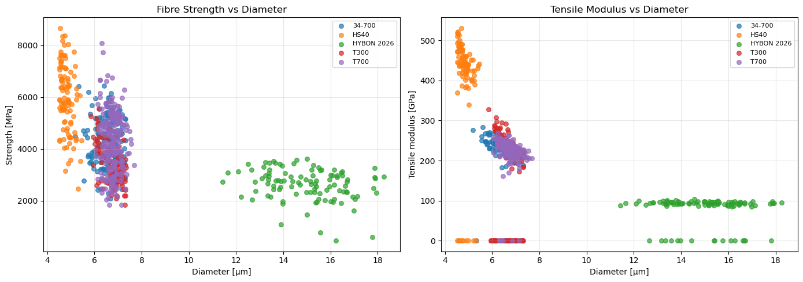
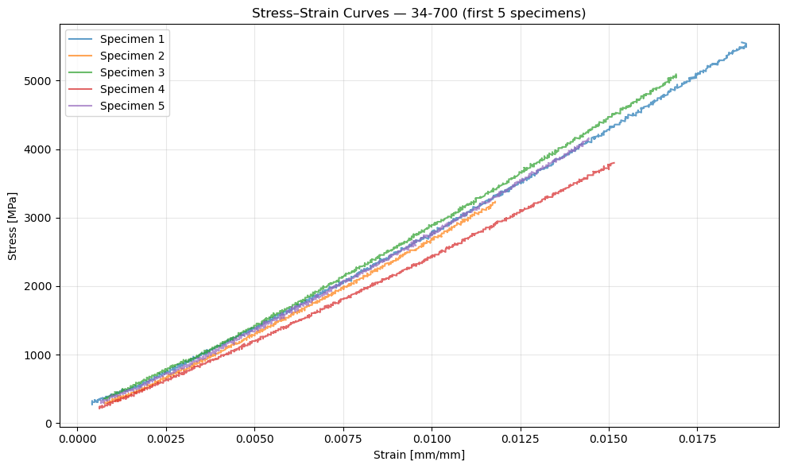
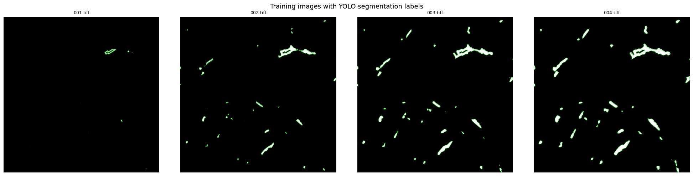
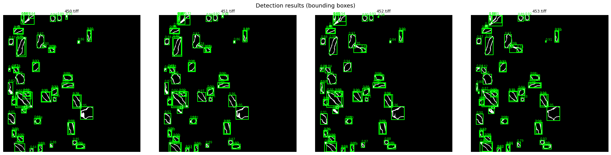
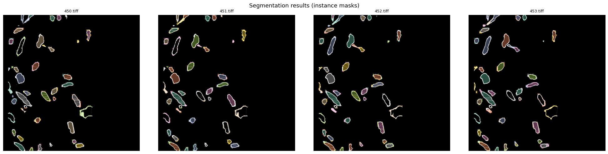
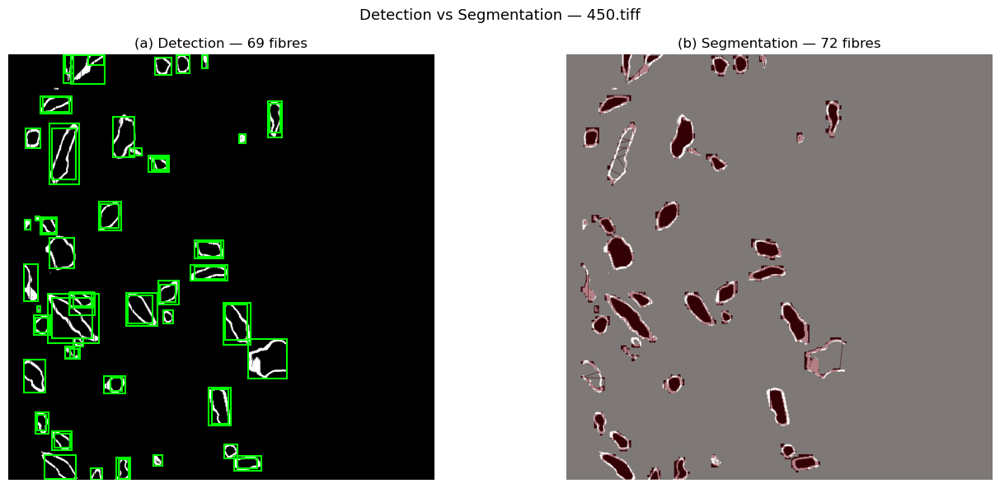

YOLO on Glass Fibre Dataset¶
This notebook sets up two YOLO workflows on the glass-fibre tomography data:
(a) Object Detection — bounding-box detection of fibres
(b) Instance Segmentation — pixel-level fibre masks
It also loads and visualises the mechanical-test data from glass-fibre/.
Imports & paths¶
import os
import glob
import numpy as np
import pandas as pd
import matplotlib.pyplot as plt
from skimage import io
import cv2
from pathlib import Path
from ultralytics import YOLO
%matplotlib inline
plt.rcParams['figure.figsize'] = (12, 8)
plt.rcParams['figure.dpi'] = 100
# ── project paths ──────────────────────────────────────────────
PROJECT_ROOT = Path('.') # ai-tomo root
GLASS_FIBRE = PROJECT_ROOT / 'glass-fibre' # mechanical data
DATA_DIR = PROJECT_ROOT / 'glass-fibres' # YOLO images+labels
TRAIN_DIR = DATA_DIR / 'train'
VAL_DIR = DATA_DIR / 'val'
print(f'Glass-fibre sub-dirs : {sorted([d.name for d in GLASS_FIBRE.iterdir() if d.is_dir()])}')
print(f'Train images : {len(list(TRAIN_DIR.glob("*.tiff")))}')
print(f'Val images : {len(list(VAL_DIR.glob("*.tiff")))}')
Glass-fibre sub-dirs : ['34-700', 'HS40', 'HYBON 2026', 'T300', 'T700']
Train images : 501
Val images : 51
1 - Explore the Glass-Fibre Mechanical Data¶
# Load analysed data for every fibre type
fibre_types = sorted([d.name for d in GLASS_FIBRE.iterdir() if d.is_dir()])
analysed = {}
for ft in fibre_types:
dat_file = list((GLASS_FIBRE / ft).glob('*analysed_data.dat'))[0]
df = pd.read_csv(dat_file, skipinitialspace=True)
df['Fibre Type'] = ft
analysed[ft] = df
df_all = pd.concat(analysed.values(), ignore_index=True)
print(f'Total specimens: {len(df_all)}')
df_all.head()
Total specimens: 695
| Specimen Index | Diameter [um] | Gauge length [mm] | Load drops [1/0] | Strength [MPa] | Tensile modulus [GPa] | Stiffening rate [GPa/%] | Initial tensile modulus [GPa] | Unnamed: 8 | Fibre Type | |
|---|---|---|---|---|---|---|---|---|---|---|
| 0 | 1.0 | 6.21 | 12.271 | 0.0 | 5556.624306 | 254.383775 | 53.464995 | 234.643214 | NaN | 34-700 |
| 1 | 2.0 | 6.37 | 12.317 | 0.0 | 3231.978616 | 250.637551 | 65.247520 | 227.049590 | NaN | 34-700 |
| 2 | 3.0 | 6.42 | 12.299 | 0.0 | 5090.931692 | 256.493143 | 60.221147 | 240.109241 | NaN | 34-700 |
| 3 | 4.0 | 7.00 | 12.244 | 0.0 | 3798.931050 | 227.036568 | 41.291388 | 214.271020 | NaN | 34-700 |
| 4 | 5.0 | 6.19 | 12.227 | 0.0 | 4157.058444 | 254.179755 | 66.730266 | 229.589812 | NaN | 34-700 |
# Compare fibre types: Strength & Tensile Modulus
fig, axes = plt.subplots(1, 2, figsize=(14, 5))
for ft in fibre_types:
sub = df_all[df_all['Fibre Type'] == ft]
axes[0].scatter(sub['Diameter [um]'], sub['Strength [MPa]'], label=ft, alpha=0.7, s=30)
axes[1].scatter(sub['Diameter [um]'], sub['Tensile modulus [GPa]'], label=ft, alpha=0.7, s=30)
axes[0].set(xlabel='Diameter [µm]', ylabel='Strength [MPa]', title='Fibre Strength vs Diameter')
axes[1].set(xlabel='Diameter [µm]', ylabel='Tensile modulus [GPa]', title='Tensile Modulus vs Diameter')
for ax in axes:
ax.legend(fontsize=8)
ax.grid(True, alpha=0.3)
plt.tight_layout()
plt.show()

# Load and plot stress-strain curves for one fibre type
ft_example = fibre_types[0]
ss_file = list((GLASS_FIBRE / ft_example).glob('*stress_strain.dat'))[0]
df_ss = pd.read_csv(ss_file, skipinitialspace=True)
# First column is empty due to leading comma — drop it
df_ss = df_ss.iloc[:, 1:]
df_ss.columns = [c.strip() for c in df_ss.columns]
fig, ax = plt.subplots(figsize=(10, 6))
for idx in df_ss['Specimen Index'].unique()[:5]:
sub = df_ss[df_ss['Specimen Index'] == idx]
ax.plot(sub['Strain [mm/mm]'], sub['Stress [MPa]'], label=f'Specimen {int(idx)}', alpha=0.7)
ax.set(xlabel='Strain [mm/mm]', ylabel='Stress [MPa]',
title=f'Stress–Strain Curves — {ft_example} (first 5 specimens)')
ax.legend()
ax.grid(True, alpha=0.3)
plt.tight_layout()
plt.show()

2 - Inspect the Tomography Image Dataset¶
# Show a few training images with their YOLO labels overlaid
train_images = sorted(TRAIN_DIR.glob('*.tiff'))[:4]
fig, axes = plt.subplots(1, len(train_images), figsize=(5 * len(train_images), 5))
if len(train_images) == 1:
axes = [axes]
for ax, img_path in zip(axes, train_images):
img = io.imread(img_path)
if img.ndim == 3 and img.shape[0] == 3:
img = np.transpose(img, (1, 2, 0)) # CHW → HWC
ax.imshow(img, cmap='gray')
# Overlay YOLO polygon labels if present
label_path = img_path.with_suffix('.txt')
if label_path.exists():
H = img.shape[0] if img.ndim == 2 else img.shape[0]
W = img.shape[1] if img.ndim == 2 else img.shape[1]
with open(label_path) as f:
for line in f:
parts = line.strip().split()
if len(parts) < 5:
continue
coords = np.array([float(v) for v in parts[1:]]).reshape(-1, 2)
coords[:, 0] *= W
coords[:, 1] *= H
poly = plt.Polygon(coords, fill=False, edgecolor='lime', linewidth=0.5)
ax.add_patch(poly)
ax.set_title(img_path.name, fontsize=9)
ax.axis('off')
plt.suptitle('Training images with YOLO segmentation labels', fontsize=13)
plt.tight_layout()
plt.show()

3 - Dataset YAML Configuration¶
import yaml
# ── Detection config ───────────────────────────────────────────
det_yaml = {
'path': str(DATA_DIR.resolve()),
'train': 'train',
'val': 'val',
'names': {0: 'fiber'},
}
det_yaml_path = PROJECT_ROOT / 'glass-fibre-detect.yaml'
with open(det_yaml_path, 'w') as f:
yaml.dump(det_yaml, f, default_flow_style=False)
# ── Segmentation config (same data, YOLO uses polygon labels) ─
seg_yaml_path = PROJECT_ROOT / 'glass-fibre-segment.yaml'
with open(seg_yaml_path, 'w') as f:
yaml.dump(det_yaml, f, default_flow_style=False) # same content; the task flag decides detect vs segment
print('Detection YAML :', det_yaml_path)
print('Segmentation YAML:', seg_yaml_path)
print()
print(yaml.dump(det_yaml, default_flow_style=False))
Detection YAML : glass-fibre-detect.yaml
Segmentation YAML: glass-fibre-segment.yaml
names:
0: fiber
path: /home/jovyan/mltomo/ai-tomo/glass-fibres
train: train
val: val
4(a) - YOLO Object Detection (bounding boxes)¶
Uses yolo11n.pt (a detection-only pretrained model).
YOLO automatically converts polygon labels to bounding boxes when the task is detect.
# Load the detection model
det_model = YOLO('yolo11n.pt') # pretrained COCO detection weights
print(det_model.info())
YOLO11n summary: 181 layers, 2,624,080 parameters, 0 gradients
(181, 2624080, 0, 0.0)
# ── Train detection ────────────────────────────────────────────
# Adjust epochs, imgsz, batch as needed.
# Set device='cpu' if no GPU is available.
det_results = det_model.train(
data = str(det_yaml_path),
epochs = 30,
imgsz = 640,
batch = 16,
name = 'glass-fibre-detect',
project = 'runs',
patience = 10,
pretrained = True,
verbose = True,
)
New https://pypi.org/project/ultralytics/8.4.168 available 😃 Update with 'pip install -U ultralytics'
Ultralytics 8.3.201 🚀 Python-3.12.11 torch-2.5.1 CUDA:0 (NVIDIA GeForce RTX 2080 Ti, 10822MiB)
engine/trainer: agnostic_nms=False, amp=True, augment=False, auto_augment=randaugment, batch=16, bgr=0.0, box=7.5, cache=False, cfg=None, classes=None, close_mosaic=10, cls=0.5, compile=False, conf=None, copy_paste=0.0, copy_paste_mode=flip, cos_lr=False, cutmix=0.0, data=glass-fibre-detect.yaml, degrees=0.0, deterministic=True, device=None, dfl=1.5, dnn=False, dropout=0.0, dynamic=False, embed=None, epochs=30, erasing=0.4, exist_ok=False, fliplr=0.5, flipud=0.0, format=torchscript, fraction=1.0, freeze=None, half=False, hsv_h=0.015, hsv_s=0.7, hsv_v=0.4, imgsz=640, int8=False, iou=0.7, keras=False, kobj=1.0, line_width=None, lr0=0.01, lrf=0.01, mask_ratio=4, max_det=300, mixup=0.0, mode=train, model=yolo11n.pt, momentum=0.937, mosaic=1.0, multi_scale=False, name=glass-fibre-detect4, nbs=64, nms=False, opset=None, optimize=False, optimizer=auto, overlap_mask=True, patience=10, perspective=0.0, plots=True, pose=12.0, pretrained=True, profile=False, project=runs, rect=False, resume=False, retina_masks=False, save=True, save_conf=False, save_crop=False, save_dir=/home/jovyan/mltomo/ai-tomo/runs/glass-fibre-detect4, save_frames=False, save_json=False, save_period=-1, save_txt=False, scale=0.5, seed=0, shear=0.0, show=False, show_boxes=True, show_conf=True, show_labels=True, simplify=True, single_cls=False, source=None, split=val, stream_buffer=False, task=detect, time=None, tracker=botsort.yaml, translate=0.1, val=True, verbose=True, vid_stride=1, visualize=False, warmup_bias_lr=0.1, warmup_epochs=3.0, warmup_momentum=0.8, weight_decay=0.0005, workers=8, workspace=None
Overriding model.yaml nc=80 with nc=1
from n params module arguments
0 -1 1 464 ultralytics.nn.modules.conv.Conv [3, 16, 3, 2]
1 -1 1 4672 ultralytics.nn.modules.conv.Conv [16, 32, 3, 2]
2 -1 1 6640 ultralytics.nn.modules.block.C3k2 [32, 64, 1, False, 0.25]
3 -1 1 36992 ultralytics.nn.modules.conv.Conv [64, 64, 3, 2]
4 -1 1 26080 ultralytics.nn.modules.block.C3k2 [64, 128, 1, False, 0.25]
5 -1 1 147712 ultralytics.nn.modules.conv.Conv [128, 128, 3, 2]
6 -1 1 87040 ultralytics.nn.modules.block.C3k2 [128, 128, 1, True]
7 -1 1 295424 ultralytics.nn.modules.conv.Conv [128, 256, 3, 2]
8 -1 1 346112 ultralytics.nn.modules.block.C3k2 [256, 256, 1, True]
9 -1 1 164608 ultralytics.nn.modules.block.SPPF [256, 256, 5]
10 -1 1 249728 ultralytics.nn.modules.block.C2PSA [256, 256, 1]
11 -1 1 0 torch.nn.modules.upsampling.Upsample [None, 2, 'nearest']
12 [-1, 6] 1 0 ultralytics.nn.modules.conv.Concat [1]
13 -1 1 111296 ultralytics.nn.modules.block.C3k2 [384, 128, 1, False]
14 -1 1 0 torch.nn.modules.upsampling.Upsample [None, 2, 'nearest']
15 [-1, 4] 1 0 ultralytics.nn.modules.conv.Concat [1]
16 -1 1 32096 ultralytics.nn.modules.block.C3k2 [256, 64, 1, False]
17 -1 1 36992 ultralytics.nn.modules.conv.Conv [64, 64, 3, 2]
18 [-1, 13] 1 0 ultralytics.nn.modules.conv.Concat [1]
19 -1 1 86720 ultralytics.nn.modules.block.C3k2 [192, 128, 1, False]
20 -1 1 147712 ultralytics.nn.modules.conv.Conv [128, 128, 3, 2]
21 [-1, 10] 1 0 ultralytics.nn.modules.conv.Concat [1]
22 -1 1 378880 ultralytics.nn.modules.block.C3k2 [384, 256, 1, True]
23 [16, 19, 22] 1 430867 ultralytics.nn.modules.head.Detect [1, [64, 128, 256]]
YOLO11n summary: 181 layers, 2,590,035 parameters, 2,590,019 gradients
Transferred 448/499 items from pretrained weights
Freezing layer 'model.23.dfl.conv.weight'
AMP: running Automatic Mixed Precision (AMP) checks...
AMP: checks passed ✅
train: Fast image access ✅ (ping: 0.0±0.0 ms, read: 3719.1±1664.6 MB/s, size: 2935.8 KB)
train: Scanning /home/jovyan/mltomo/ai-tomo/glass-fibres/train... 2 images, 0 backgrounds, 0 corrupt: 0% ──────────── 2/501 5.4it/s 0.1s<1:32
train: Scanning /home/jovyan/mltomo/ai-tomo/glass-fibres/train... 10 images, 0 backgrounds, 0 corrupt: 2% ──────────── 10/501 18.3it/s 0.3s<26.9s
train: Scanning /home/jovyan/mltomo/ai-tomo/glass-fibres/train... 17 images, 0 backgrounds, 0 corrupt: 3% ──────────── 17/501 33.0it/s 0.4s<14.7s
train: Scanning /home/jovyan/mltomo/ai-tomo/glass-fibres/train... 20 images, 0 backgrounds, 0 corrupt: 4% ──────────── 20/501 26.3it/s 0.7s<18.3s
train: Scanning /home/jovyan/mltomo/ai-tomo/glass-fibres/train... 26 images, 0 backgrounds, 0 corrupt: 5% ╸─────────── 26/501 29.8it/s 0.8s<15.9s
train: Scanning /home/jovyan/mltomo/ai-tomo/glass-fibres/train... 29 images, 0 backgrounds, 0 corrupt: 6% ╸─────────── 29/501 29.2it/s 0.9s<16.2s
train: Scanning /home/jovyan/mltomo/ai-tomo/glass-fibres/train... 32 images, 0 backgrounds, 0 corrupt: 6% ╸─────────── 32/501 27.6it/s 1.1s<17.0s
train: Scanning /home/jovyan/mltomo/ai-tomo/glass-fibres/train... 39 images, 0 backgrounds, 0 corrupt: 8% ╸─────────── 39/501 35.8it/s 1.2s<12.9s
train: Scanning /home/jovyan/mltomo/ai-tomo/glass-fibres/train... 40 images, 0 backgrounds, 0 corrupt: 8% ╸─────────── 40/501 26.5it/s 1.4s<17.4s
train: Scanning /home/jovyan/mltomo/ai-tomo/glass-fibres/train... 49 images, 0 backgrounds, 0 corrupt: 10% ━─────────── 49/501 32.6it/s 1.6s<13.9s
train: Scanning /home/jovyan/mltomo/ai-tomo/glass-fibres/train... 55 images, 0 backgrounds, 0 corrupt: 11% ━─────────── 55/501 36.7it/s 1.7s<12.2s
train: Scanning /home/jovyan/mltomo/ai-tomo/glass-fibres/train... 57 images, 0 backgrounds, 0 corrupt: 11% ━─────────── 57/501 28.4it/s 1.9s<15.6s
train: Scanning /home/jovyan/mltomo/ai-tomo/glass-fibres/train... 65 images, 0 backgrounds, 0 corrupt: 13% ━╸────────── 65/501 43.0it/s 2.0s<10.1s
train: Scanning /home/jovyan/mltomo/ai-tomo/glass-fibres/train... 67 images, 0 backgrounds, 0 corrupt: 13% ━╸────────── 67/501 32.9it/s 2.2s<13.2s
train: Scanning /home/jovyan/mltomo/ai-tomo/glass-fibres/train... 73 images, 0 backgrounds, 0 corrupt: 15% ━╸────────── 73/501 36.6it/s 2.4s<11.7s
train: Scanning /home/jovyan/mltomo/ai-tomo/glass-fibres/train... 76 images, 0 backgrounds, 0 corrupt: 15% ━╸────────── 76/501 31.4it/s 2.5s<13.5s
train: Scanning /home/jovyan/mltomo/ai-tomo/glass-fibres/train... 82 images, 0 backgrounds, 0 corrupt: 16% ━╸────────── 82/501 27.6it/s 2.9s<15.2s
train: Scanning /home/jovyan/mltomo/ai-tomo/glass-fibres/train... 83 images, 0 backgrounds, 0 corrupt: 17% ━╸────────── 83/501 21.5it/s 3.0s<19.5s
train: Scanning /home/jovyan/mltomo/ai-tomo/glass-fibres/train... 96 images, 0 backgrounds, 0 corrupt: 19% ━━────────── 96/501 34.2it/s 3.2s<11.8s
train: Scanning /home/jovyan/mltomo/ai-tomo/glass-fibres/train... 98 images, 0 backgrounds, 0 corrupt: 20% ━━────────── 98/501 29.6it/s 3.3s<13.6s
train: Scanning /home/jovyan/mltomo/ai-tomo/glass-fibres/train... 99 images, 0 backgrounds, 0 corrupt: 20% ━━────────── 99/501 22.5it/s 3.5s<17.9s
train: Scanning /home/jovyan/mltomo/ai-tomo/glass-fibres/train... 109 images, 0 backgrounds, 0 corrupt: 22% ━━╸───────── 109/501 43.3it/s 3.6s<9.1s
train: Scanning /home/jovyan/mltomo/ai-tomo/glass-fibres/train... 113 images, 0 backgrounds, 0 corrupt: 23% ━━╸───────── 113/501 34.5it/s 3.9s<11.2s
train: Scanning /home/jovyan/mltomo/ai-tomo/glass-fibres/train... 114 images, 0 backgrounds, 0 corrupt: 23% ━━╸───────── 114/501 27.0it/s 4.0s<14.3s
train: Scanning /home/jovyan/mltomo/ai-tomo/glass-fibres/train... 123 images, 0 backgrounds, 0 corrupt: 25% ━━╸───────── 123/501 40.7it/s 4.1s<9.3s
train: Scanning /home/jovyan/mltomo/ai-tomo/glass-fibres/train... 129 images, 0 backgrounds, 0 corrupt: 26% ━━━───────── 129/501 41.3it/s 4.2s<9.0s
train: Scanning /home/jovyan/mltomo/ai-tomo/glass-fibres/train... 132 images, 0 backgrounds, 0 corrupt: 26% ━━━───────── 132/501 37.3it/s 4.3s<9.9s
train: Scanning /home/jovyan/mltomo/ai-tomo/glass-fibres/train... 135 images, 0 backgrounds, 0 corrupt: 27% ━━━───────── 135/501 34.2it/s 4.5s<10.7s
train: Scanning /home/jovyan/mltomo/ai-tomo/glass-fibres/train... 140 images, 0 backgrounds, 0 corrupt: 28% ━━━───────── 140/501 35.4it/s 4.6s<10.2s
train: Scanning /home/jovyan/mltomo/ai-tomo/glass-fibres/train... 144 images, 0 backgrounds, 0 corrupt: 29% ━━━───────── 144/501 35.7it/s 4.7s<10.0s
train: Scanning /home/jovyan/mltomo/ai-tomo/glass-fibres/train... 146 images, 0 backgrounds, 0 corrupt: 29% ━━━───────── 146/501 29.1it/s 4.8s<12.2s
train: Scanning /home/jovyan/mltomo/ai-tomo/glass-fibres/train... 148 images, 0 backgrounds, 0 corrupt: 30% ━━━╸──────── 148/501 25.4it/s 5.0s<13.9s
train: Scanning /home/jovyan/mltomo/ai-tomo/glass-fibres/train... 156 images, 0 backgrounds, 0 corrupt: 31% ━━━╸──────── 156/501 30.4it/s 5.1s<11.4s
train: Scanning /home/jovyan/mltomo/ai-tomo/glass-fibres/train... 161 images, 0 backgrounds, 0 corrupt: 32% ━━━╸──────── 161/501 31.9it/s 5.3s<10.7s
train: Scanning /home/jovyan/mltomo/ai-tomo/glass-fibres/train... 163 images, 0 backgrounds, 0 corrupt: 33% ━━━╸──────── 163/501 27.4it/s 5.4s<12.4s
train: Scanning /home/jovyan/mltomo/ai-tomo/glass-fibres/train... 171 images, 0 backgrounds, 0 corrupt: 34% ━━━━──────── 171/501 31.6it/s 5.6s<10.4s
train: Scanning /home/jovyan/mltomo/ai-tomo/glass-fibres/train... 175 images, 0 backgrounds, 0 corrupt: 35% ━━━━──────── 175/501 28.0it/s 5.8s<11.7s
train: Scanning /home/jovyan/mltomo/ai-tomo/glass-fibres/train... 183 images, 0 backgrounds, 0 corrupt: 37% ━━━━──────── 183/501 43.3it/s 5.9s<7.3s
train: Scanning /home/jovyan/mltomo/ai-tomo/glass-fibres/train... 185 images, 0 backgrounds, 0 corrupt: 37% ━━━━──────── 185/501 34.8it/s 6.0s<9.1s
train: Scanning /home/jovyan/mltomo/ai-tomo/glass-fibres/train... 192 images, 0 backgrounds, 0 corrupt: 38% ━━━━╸─────── 192/501 34.5it/s 6.3s<9.0s
train: Scanning /home/jovyan/mltomo/ai-tomo/glass-fibres/train... 199 images, 0 backgrounds, 0 corrupt: 40% ━━━━╸─────── 199/501 35.3it/s 6.4s<8.5s
train: Scanning /home/jovyan/mltomo/ai-tomo/glass-fibres/train... 204 images, 0 backgrounds, 0 corrupt: 41% ━━━━╸─────── 204/501 34.9it/s 6.6s<8.5s
train: Scanning /home/jovyan/mltomo/ai-tomo/glass-fibres/train... 211 images, 0 backgrounds, 0 corrupt: 42% ━━━━━─────── 211/501 37.3it/s 6.8s<7.8s
train: Scanning /home/jovyan/mltomo/ai-tomo/glass-fibres/train... 214 images, 0 backgrounds, 0 corrupt: 43% ━━━━━─────── 214/501 33.5it/s 6.9s<8.6s
train: Scanning /home/jovyan/mltomo/ai-tomo/glass-fibres/train... 216 images, 0 backgrounds, 0 corrupt: 43% ━━━━━─────── 216/501 28.0it/s 7.0s<10.2s
train: Scanning /home/jovyan/mltomo/ai-tomo/glass-fibres/train... 224 images, 0 backgrounds, 0 corrupt: 45% ━━━━━─────── 224/501 40.8it/s 7.1s<6.8s
train: Scanning /home/jovyan/mltomo/ai-tomo/glass-fibres/train... 226 images, 0 backgrounds, 0 corrupt: 45% ━━━━━─────── 226/501 31.4it/s 7.3s<8.8s
train: Scanning /home/jovyan/mltomo/ai-tomo/glass-fibres/train... 235 images, 0 backgrounds, 0 corrupt: 47% ━━━━━╸────── 235/501 32.7it/s 7.6s<8.1s
train: Scanning /home/jovyan/mltomo/ai-tomo/glass-fibres/train... 243 images, 0 backgrounds, 0 corrupt: 49% ━━━━━╸────── 243/501 39.3it/s 7.7s<6.6s
train: Scanning /home/jovyan/mltomo/ai-tomo/glass-fibres/train... 244 images, 0 backgrounds, 0 corrupt: 49% ━━━━━╸────── 244/501 29.1it/s 7.9s<8.8s
train: Scanning /home/jovyan/mltomo/ai-tomo/glass-fibres/train... 252 images, 0 backgrounds, 0 corrupt: 50% ━━━━━━────── 252/501 41.3it/s 8.0s<6.0s
train: Scanning /home/jovyan/mltomo/ai-tomo/glass-fibres/train... 256 images, 0 backgrounds, 0 corrupt: 51% ━━━━━━────── 256/501 39.4it/s 8.1s<6.2s
train: Scanning /home/jovyan/mltomo/ai-tomo/glass-fibres/train... 258 images, 0 backgrounds, 0 corrupt: 51% ━━━━━━────── 258/501 33.2it/s 8.3s<7.3s
train: Scanning /home/jovyan/mltomo/ai-tomo/glass-fibres/train... 262 images, 0 backgrounds, 0 corrupt: 52% ━━━━━━────── 262/501 30.9it/s 8.4s<7.7s
train: Scanning /home/jovyan/mltomo/ai-tomo/glass-fibres/train... 270 images, 0 backgrounds, 0 corrupt: 54% ━━━━━━────── 270/501 37.1it/s 8.6s<6.2s
train: Scanning /home/jovyan/mltomo/ai-tomo/glass-fibres/train... 277 images, 0 backgrounds, 0 corrupt: 55% ━━━━━━╸───── 277/501 38.8it/s 8.7s<5.8s
train: Scanning /home/jovyan/mltomo/ai-tomo/glass-fibres/train... 279 images, 0 backgrounds, 0 corrupt: 56% ━━━━━━╸───── 279/501 32.6it/s 8.8s<6.8s
train: Scanning /home/jovyan/mltomo/ai-tomo/glass-fibres/train... 291 images, 0 backgrounds, 0 corrupt: 58% ━━━━━━╸───── 291/501 49.2it/s 9.0s<4.3s
train: Scanning /home/jovyan/mltomo/ai-tomo/glass-fibres/train... 297 images, 0 backgrounds, 0 corrupt: 59% ━━━━━━━───── 297/501 49.2it/s 9.1s<4.1s
train: Scanning /home/jovyan/mltomo/ai-tomo/glass-fibres/train... 298 images, 0 backgrounds, 0 corrupt: 59% ━━━━━━━───── 298/501 37.0it/s 9.2s<5.5s
train: Scanning /home/jovyan/mltomo/ai-tomo/glass-fibres/train... 299 images, 0 backgrounds, 0 corrupt: 60% ━━━━━━━───── 299/501 28.2it/s 9.4s<7.2s
train: Scanning /home/jovyan/mltomo/ai-tomo/glass-fibres/train... 313 images, 0 backgrounds, 0 corrupt: 62% ━━━━━━━───── 313/501 47.4it/s 9.5s<4.0s
train: Scanning /home/jovyan/mltomo/ai-tomo/glass-fibres/train... 317 images, 0 backgrounds, 0 corrupt: 63% ━━━━━━━╸──── 317/501 42.2it/s 9.6s<4.4s
train: Scanning /home/jovyan/mltomo/ai-tomo/glass-fibres/train... 321 images, 0 backgrounds, 0 corrupt: 64% ━━━━━━━╸──── 321/501 35.8it/s 9.8s<5.0s
train: Scanning /home/jovyan/mltomo/ai-tomo/glass-fibres/train... 329 images, 0 backgrounds, 0 corrupt: 66% ━━━━━━━╸──── 329/501 42.5it/s 10.0s<4.0s
train: Scanning /home/jovyan/mltomo/ai-tomo/glass-fibres/train... 331 images, 0 backgrounds, 0 corrupt: 66% ━━━━━━━╸──── 331/501 35.3it/s 10.1s<4.8s
train: Scanning /home/jovyan/mltomo/ai-tomo/glass-fibres/train... 333 images, 0 backgrounds, 0 corrupt: 66% ━━━━━━━╸──── 333/501 28.3it/s 10.2s<5.9s
train: Scanning /home/jovyan/mltomo/ai-tomo/glass-fibres/train... 343 images, 0 backgrounds, 0 corrupt: 68% ━━━━━━━━──── 343/501 41.8it/s 10.4s<3.8s
train: Scanning /home/jovyan/mltomo/ai-tomo/glass-fibres/train... 344 images, 0 backgrounds, 0 corrupt: 69% ━━━━━━━━──── 344/501 30.8it/s 10.6s<5.1s
train: Scanning /home/jovyan/mltomo/ai-tomo/glass-fibres/train... 354 images, 0 backgrounds, 0 corrupt: 71% ━━━━━━━━──── 354/501 42.1it/s 10.7s<3.5s
train: Scanning /home/jovyan/mltomo/ai-tomo/glass-fibres/train... 360 images, 0 backgrounds, 0 corrupt: 72% ━━━━━━━━╸─── 360/501 47.5it/s 10.8s<3.0s
train: Scanning /home/jovyan/mltomo/ai-tomo/glass-fibres/train... 361 images, 0 backgrounds, 0 corrupt: 72% ━━━━━━━━╸─── 361/501 35.7it/s 10.9s<3.9s
train: Scanning /home/jovyan/mltomo/ai-tomo/glass-fibres/train... 364 images, 0 backgrounds, 0 corrupt: 73% ━━━━━━━━╸─── 364/501 30.9it/s 11.1s<4.4s
train: Scanning /home/jovyan/mltomo/ai-tomo/glass-fibres/train... 372 images, 0 backgrounds, 0 corrupt: 74% ━━━━━━━━╸─── 372/501 30.9it/s 11.4s<4.2s
train: Scanning /home/jovyan/mltomo/ai-tomo/glass-fibres/train... 380 images, 0 backgrounds, 0 corrupt: 76% ━━━━━━━━━─── 380/501 42.5it/s 11.5s<2.8s
train: Scanning /home/jovyan/mltomo/ai-tomo/glass-fibres/train... 385 images, 0 backgrounds, 0 corrupt: 77% ━━━━━━━━━─── 385/501 41.8it/s 11.6s<2.8s
train: Scanning /home/jovyan/mltomo/ai-tomo/glass-fibres/train... 391 images, 0 backgrounds, 0 corrupt: 78% ━━━━━━━━━─── 391/501 44.7it/s 11.7s<2.5s
train: Scanning /home/jovyan/mltomo/ai-tomo/glass-fibres/train... 400 images, 0 backgrounds, 0 corrupt: 80% ━━━━━━━━━╸── 400/501 52.3it/s 11.8s<1.9s
train: Scanning /home/jovyan/mltomo/ai-tomo/glass-fibres/train... 403 images, 0 backgrounds, 0 corrupt: 80% ━━━━━━━━━╸── 403/501 44.4it/s 12.0s<2.2s
train: Scanning /home/jovyan/mltomo/ai-tomo/glass-fibres/train... 406 images, 0 backgrounds, 0 corrupt: 81% ━━━━━━━━━╸── 406/501 39.9it/s 12.1s<2.4s
train: Scanning /home/jovyan/mltomo/ai-tomo/glass-fibres/train... 412 images, 0 backgrounds, 0 corrupt: 82% ━━━━━━━━━╸── 412/501 40.9it/s 12.2s<2.2s
train: Scanning /home/jovyan/mltomo/ai-tomo/glass-fibres/train... 417 images, 0 backgrounds, 0 corrupt: 83% ━━━━━━━━━╸── 417/501 41.9it/s 12.3s<2.0s
train: Scanning /home/jovyan/mltomo/ai-tomo/glass-fibres/train... 425 images, 0 backgrounds, 0 corrupt: 85% ━━━━━━━━━━── 425/501 52.6it/s 12.4s<1.4s
train: Scanning /home/jovyan/mltomo/ai-tomo/glass-fibres/train... 427 images, 0 backgrounds, 0 corrupt: 85% ━━━━━━━━━━── 427/501 41.6it/s 12.5s<1.8s
train: Scanning /home/jovyan/mltomo/ai-tomo/glass-fibres/train... 432 images, 0 backgrounds, 0 corrupt: 86% ━━━━━━━━━━── 432/501 38.4it/s 12.7s<1.8s
train: Scanning /home/jovyan/mltomo/ai-tomo/glass-fibres/train... 442 images, 0 backgrounds, 0 corrupt: 88% ━━━━━━━━━━╸─ 442/501 41.8it/s 12.9s<1.4s
train: Scanning /home/jovyan/mltomo/ai-tomo/glass-fibres/train... 451 images, 0 backgrounds, 0 corrupt: 90% ━━━━━━━━━━╸─ 451/501 49.7it/s 13.0s<1.0s
train: Scanning /home/jovyan/mltomo/ai-tomo/glass-fibres/train... 457 images, 0 backgrounds, 0 corrupt: 91% ━━━━━━━━━━╸─ 457/501 49.7it/s 13.2s<0.9s
train: Scanning /home/jovyan/mltomo/ai-tomo/glass-fibres/train... 465 images, 0 backgrounds, 0 corrupt: 93% ━━━━━━━━━━━─ 465/501 51.2it/s 13.3s<0.7s
train: Scanning /home/jovyan/mltomo/ai-tomo/glass-fibres/train... 480 images, 0 backgrounds, 0 corrupt: 96% ━━━━━━━━━━━─ 480/501 73.3it/s 13.4s<0.3s
train: Scanning /home/jovyan/mltomo/ai-tomo/glass-fibres/train... 488 images, 0 backgrounds, 0 corrupt: 97% ━━━━━━━━━━━╸ 488/501 74.1it/s 13.5s<0.2s
train: Scanning /home/jovyan/mltomo/ai-tomo/glass-fibres/train... 501 images, 0 backgrounds, 0 corrupt: 100% ━━━━━━━━━━━━ 501/501 36.8it/s 13.6s
train: Scanning /home/jovyan/mltomo/ai-tomo/glass-fibres/train... 501 images, 0 backgrounds, 0 corrupt: 100% ━━━━━━━━━━━━ 501/501 36.8it/s 13.6s
train: New cache created: /home/jovyan/mltomo/ai-tomo/glass-fibres/train.cache
val: Fast image access ✅ (ping: 0.0±0.0 ms, read: 1546.1±861.3 MB/s, size: 2935.8 KB)
val: Scanning /home/jovyan/mltomo/ai-tomo/glass-fibres/val... 1 images, 0 backgrounds, 0 corrupt: 2% ──────────── 1/51 2.3it/s 0.1s<21.7s
val: Scanning /home/jovyan/mltomo/ai-tomo/glass-fibres/val... 14 images, 0 backgrounds, 0 corrupt: 27% ━━━───────── 14/51 37.8it/s 0.2s<1.0s
val: Scanning /home/jovyan/mltomo/ai-tomo/glass-fibres/val... 20 images, 0 backgrounds, 0 corrupt: 39% ━━━━╸─────── 20/51 40.8it/s 0.4s<0.8s
val: Scanning /home/jovyan/mltomo/ai-tomo/glass-fibres/val... 23 images, 0 backgrounds, 0 corrupt: 45% ━━━━━─────── 23/51 36.8it/s 0.5s<0.8s
val: Scanning /home/jovyan/mltomo/ai-tomo/glass-fibres/val... 24 images, 0 backgrounds, 0 corrupt: 47% ━━━━━╸────── 24/51 28.3it/s 0.6s<1.0s
val: Scanning /home/jovyan/mltomo/ai-tomo/glass-fibres/val... 36 images, 0 backgrounds, 0 corrupt: 71% ━━━━━━━━──── 36/51 46.5it/s 0.7s<0.3s
val: Scanning /home/jovyan/mltomo/ai-tomo/glass-fibres/val... 37 images, 0 backgrounds, 0 corrupt: 73% ━━━━━━━━╸─── 37/51 35.5it/s 0.8s<0.4s
val: Scanning /home/jovyan/mltomo/ai-tomo/glass-fibres/val... 46 images, 0 backgrounds, 0 corrupt: 90% ━━━━━━━━━━╸─ 46/51 44.6it/s 1.0s<0.1s
val: Scanning /home/jovyan/mltomo/ai-tomo/glass-fibres/val... 51 images, 0 backgrounds, 0 corrupt: 100% ━━━━━━━━━━━━ 51/51 52.1it/s 1.0s
val: Scanning /home/jovyan/mltomo/ai-tomo/glass-fibres/val... 51 images, 0 backgrounds, 0 corrupt: 100% ━━━━━━━━━━━━ 51/51 52.1it/s 1.0s
val: New cache created: /home/jovyan/mltomo/ai-tomo/glass-fibres/val.cache
Plotting labels to /home/jovyan/mltomo/ai-tomo/runs/glass-fibre-detect4/labels.jpg...
optimizer: 'optimizer=auto' found, ignoring 'lr0=0.01' and 'momentum=0.937' and determining best 'optimizer', 'lr0' and 'momentum' automatically...
optimizer: AdamW(lr=0.002, momentum=0.9) with parameter groups 81 weight(decay=0.0), 88 weight(decay=0.0005), 87 bias(decay=0.0)
Image sizes 640 train, 640 val
Using 8 dataloader workers
Logging results to /home/jovyan/mltomo/ai-tomo/runs/glass-fibre-detect4
Starting training for 30 epochs...
Epoch GPU_mem box_loss cls_loss dfl_loss Instances Size
1/30 2.99G 1.278 3.229 1.141 1831 640: 0% ──────────── 0/32 1.9s
1/30 3.39G 1.23 3.183 1.13 1378 640: 3% ──────────── 1/32 0.9it/s 2.2s<35.4s
1/30 3.95G 1.249 3.188 1.145 1750 640: 6% ╸─────────── 2/32 1.6it/s 2.5s<18.8s
1/30 3.95G 1.258 3.193 1.143 1637 640: 9% ━─────────── 3/32 2.1it/s 2.8s<13.8s
1/30 3.95G 1.26 3.188 1.146 1540 640: 12% ━─────────── 4/32 3.4it/s 3.0s<8.2s
1/30 3.95G 1.262 3.186 1.148 1517 640: 16% ━╸────────── 5/32 3.8it/s 3.2s<7.1s
1/30 3.97G 1.235 3.164 1.14 1114 640: 19% ━━────────── 6/32 4.7it/s 3.4s<5.5s
1/30 3.97G 1.215 3.153 1.129 1470 640: 22% ━━╸───────── 7/32 5.2it/s 3.5s<4.8s
1/30 3.97G 1.201 3.142 1.116 1735 640: 25% ━━━───────── 8/32 5.5it/s 3.7s<4.4s
1/30 4.54G 1.185 3.121 1.103 1585 640: 28% ━━━───────── 9/32 5.8it/s 3.8s<4.0s
1/30 4.54G 1.173 3.106 1.093 2197 640: 31% ━━━╸──────── 10/32 6.0it/s 4.0s<3.7s
1/30 4.54G 1.157 3.074 1.082 1417 640: 34% ━━━━──────── 11/32 6.4it/s 4.1s<3.3s
1/30 4.54G 1.148 3.048 1.074 1864 640: 38% ━━━━──────── 12/32 6.6it/s 4.3s<3.0s
1/30 4.54G 1.136 3.018 1.066 1611 640: 41% ━━━━╸─────── 13/32 6.6it/s 4.4s<2.9s
1/30 4.54G 1.127 2.989 1.059 1857 640: 44% ━━━━━─────── 14/32 6.7it/s 4.6s<2.7s
1/30 4.54G 1.118 2.955 1.054 1477 640: 47% ━━━━━╸────── 15/32 7.0it/s 4.7s<2.4s
1/30 4.54G 1.106 2.918 1.048 1318 640: 50% ━━━━━━────── 16/32 7.1it/s 4.8s<2.3s
1/30 4.54G 1.097 2.88 1.042 1339 640: 53% ━━━━━━────── 17/32 7.7it/s 4.9s<2.0s
1/30 4.54G 1.088 2.852 1.037 1658 640: 56% ━━━━━━╸───── 18/32 7.4it/s 5.1s<1.9s
1/30 4.54G 1.08 2.815 1.032 1281 640: 59% ━━━━━━━───── 19/32 7.9it/s 5.2s<1.6s
1/30 4.54G 1.075 2.785 1.028 1626 640: 62% ━━━━━━━───── 20/32 7.7it/s 5.3s<1.6s
1/30 4.54G 1.07 2.756 1.024 1743 640: 66% ━━━━━━━╸──── 21/32 8.0it/s 5.5s<1.4s
1/30 4.54G 1.067 2.731 1.02 1949 640: 69% ━━━━━━━━──── 22/32 7.6it/s 5.6s<1.3s
1/30 4.54G 1.064 2.706 1.017 2161 640: 72% ━━━━━━━━╸─── 23/32 7.6it/s 5.7s<1.2s
1/30 4.54G 1.06 2.677 1.014 1685 640: 75% ━━━━━━━━━─── 24/32 7.4it/s 5.9s<1.1s
1/30 4.54G 1.056 2.646 1.01 1675 640: 78% ━━━━━━━━━─── 25/32 7.9it/s 6.0s<0.9s
1/30 4.54G 1.051 2.621 1.008 1872 640: 81% ━━━━━━━━━╸── 26/32 7.5it/s 6.1s<0.8s
1/30 4.54G 1.05 2.593 1.005 1703 640: 84% ━━━━━━━━━━── 27/32 7.7it/s 6.3s<0.6s
1/30 4.54G 1.047 2.567 1.003 1738 640: 88% ━━━━━━━━━━── 28/32 7.4it/s 6.4s<0.5s
1/30 4.54G 1.045 2.537 1.001 1710 640: 91% ━━━━━━━━━━╸─ 29/32 7.7it/s 6.5s<0.4s
1/30 4.54G 1.042 2.508 0.999 1496 640: 94% ━━━━━━━━━━━─ 30/32 7.6it/s 6.7s<0.3s
1/30 4.59G 1.042 2.481 0.998 644 640: 97% ━━━━━━━━━━━╸ 31/32 6.4it/s 6.9s<0.2s
1/30 4.59G 1.042 2.481 0.998 644 640: 100% ━━━━━━━━━━━━ 32/32 4.6it/s 6.9s
1/30 4.59G 1.042 2.481 0.998 644 640: 100% ━━━━━━━━━━━━ 32/32 4.6it/s 6.9s
Class Images Instances Box(P R mAP50 mAP50-95): 50% ━━━━━━────── 1/2 0.9it/s 0.3s<1.1s
Class Images Instances Box(P R mAP50 mAP50-95): 100% ━━━━━━━━━━━━ 2/2 3.9it/s 0.5s
Class Images Instances Box(P R mAP50 mAP50-95): 100% ━━━━━━━━━━━━ 2/2 3.9it/s 0.5s
all 51 4089 0.106 0.398 0.13 0.0841
Epoch GPU_mem box_loss cls_loss dfl_loss Instances Size
2/30 4.59G 0.9847 1.621 0.9401 1879 640: 0% ──────────── 0/32 0.1s
2/30 4.59G 0.9429 1.468 0.9307 1265 640: 3% ──────────── 1/32 2.7it/s 0.3s<11.7s
2/30 4.59G 0.9474 1.434 0.929 1393 640: 6% ╸─────────── 2/32 3.9it/s 0.4s<7.6s
2/30 4.59G 0.9445 1.415 0.928 1666 640: 9% ━─────────── 3/32 5.5it/s 0.5s<5.3s
2/30 4.59G 0.9412 1.378 0.9279 1277 640: 12% ━─────────── 4/32 6.1it/s 0.6s<4.6s
2/30 4.59G 0.94 1.342 0.9262 1496 640: 16% ━╸────────── 5/32 7.1it/s 0.7s<3.8s
2/30 4.59G 0.9426 1.32 0.9273 1471 640: 19% ━━────────── 6/32 6.9it/s 0.9s<3.7s
2/30 4.59G 0.9503 1.296 0.9279 1667 640: 22% ━━╸───────── 7/32 7.0it/s 1.0s<3.6s
2/30 4.59G 0.9512 1.275 0.9279 1435 640: 25% ━━━───────── 8/32 6.9it/s 1.2s<3.5s
2/30 4.59G 0.9525 1.252 0.9291 1463 640: 28% ━━━───────── 9/32 7.4it/s 1.3s<3.1s
2/30 4.59G 0.955 1.243 0.9306 1733 640: 31% ━━━╸──────── 10/32 7.3it/s 1.5s<3.0s
2/30 4.59G 0.9569 1.225 0.9309 1730 640: 34% ━━━━──────── 11/32 7.6it/s 1.6s<2.7s
2/30 4.59G 0.9555 1.212 0.9322 1548 640: 38% ━━━━──────── 12/32 7.3it/s 1.7s<2.8s
2/30 4.59G 0.9584 1.197 0.9322 1898 640: 41% ━━━━╸─────── 13/32 7.5it/s 1.8s<2.5s
2/30 4.59G 0.9593 1.181 0.9327 1683 640: 44% ━━━━━─────── 14/32 7.2it/s 2.0s<2.5s
2/30 4.59G 0.9572 1.165 0.9328 1690 640: 47% ━━━━━╸────── 15/32 7.9it/s 2.1s<2.2s
2/30 4.59G 0.9559 1.15 0.9331 1262 640: 50% ━━━━━━────── 16/32 7.7it/s 2.2s<2.1s
2/30 4.59G 0.9589 1.137 0.934 1915 640: 53% ━━━━━━────── 17/32 7.9it/s 2.4s<1.9s
2/30 4.59G 0.9586 1.124 0.9345 1554 640: 56% ━━━━━━╸───── 18/32 7.4it/s 2.5s<1.9s
2/30 4.59G 0.9588 1.111 0.9343 1610 640: 59% ━━━━━━━───── 19/32 7.5it/s 2.7s<1.7s
2/30 4.59G 0.9591 1.098 0.9346 1443 640: 62% ━━━━━━━───── 20/32 7.5it/s 2.8s<1.6s
2/30 4.59G 0.9575 1.088 0.9342 1631 640: 66% ━━━━━━━╸──── 21/32 7.3it/s 2.9s<1.5s
2/30 4.59G 0.954 1.077 0.9339 1500 640: 69% ━━━━━━━━──── 22/32 7.8it/s 3.0s<1.3s
2/30 4.59G 0.9521 1.067 0.9334 1698 640: 72% ━━━━━━━━╸─── 23/32 7.5it/s 3.2s<1.2s
2/30 4.59G 0.9509 1.058 0.933 1414 640: 75% ━━━━━━━━━─── 24/32 7.1it/s 3.4s<1.1s
2/30 4.59G 0.9495 1.049 0.9327 1621 640: 78% ━━━━━━━━━─── 25/32 7.5it/s 3.5s<0.9s
2/30 4.59G 0.947 1.04 0.9322 1733 640: 81% ━━━━━━━━━╸── 26/32 7.6it/s 3.6s<0.8s
2/30 4.59G 0.9462 1.032 0.9318 1685 640: 84% ━━━━━━━━━━── 27/32 7.4it/s 3.7s<0.7s
2/30 4.59G 0.9445 1.024 0.9318 1712 640: 88% ━━━━━━━━━━── 28/32 7.9it/s 3.9s<0.5s
2/30 4.59G 0.9434 1.017 0.932 1697 640: 91% ━━━━━━━━━━╸─ 29/32 8.1it/s 4.0s<0.4s
2/30 4.59G 0.9411 1.009 0.9315 1552 640: 94% ━━━━━━━━━━━─ 30/32 7.7it/s 4.1s<0.3s
2/30 4.59G 0.9385 1.001 0.9311 499 640: 100% ━━━━━━━━━━━━ 32/32 7.6it/s 4.2s
2/30 4.59G 0.9385 1.001 0.9311 499 640: 100% ━━━━━━━━━━━━ 32/32 7.6it/s 4.2s
Class Images Instances Box(P R mAP50 mAP50-95): 50% ━━━━━━────── 1/2 1.0it/s 0.3s<1.0s
Class Images Instances Box(P R mAP50 mAP50-95): 100% ━━━━━━━━━━━━ 2/2 4.0it/s 0.5s
Class Images Instances Box(P R mAP50 mAP50-95): 100% ━━━━━━━━━━━━ 2/2 4.0it/s 0.5s
all 51 4089 0.86 0.46 0.541 0.348
Epoch GPU_mem box_loss cls_loss dfl_loss Instances Size
3/30 4.59G 0.8611 0.7986 0.941 1305 640: 0% ──────────── 0/32 0.1s
3/30 4.59G 0.8518 0.7971 0.9312 1328 640: 3% ──────────── 1/32 2.2it/s 0.3s<14.1s
3/30 4.59G 0.8484 0.7898 0.9282 1389 640: 6% ╸─────────── 2/32 4.3it/s 0.4s<7.0s
3/30 4.59G 0.846 0.7826 0.9281 1472 640: 9% ━─────────── 3/32 5.4it/s 0.5s<5.4s
3/30 4.59G 0.8513 0.7839 0.9278 1897 640: 12% ━─────────── 4/32 5.9it/s 0.6s<4.7s
3/30 4.59G 0.8508 0.7829 0.9243 2049 640: 16% ━╸────────── 5/32 6.7it/s 0.7s<4.0s
3/30 4.59G 0.8439 0.7791 0.9225 1303 640: 19% ━━────────── 6/32 7.4it/s 0.9s<3.5s
3/30 4.59G 0.85 0.7793 0.9227 1905 640: 22% ━━╸───────── 7/32 7.3it/s 1.0s<3.4s
3/30 4.59G 0.8535 0.7759 0.9221 1881 640: 25% ━━━───────── 8/32 7.8it/s 1.1s<3.1s
3/30 4.59G 0.8526 0.7739 0.9217 1298 640: 28% ━━━───────── 9/32 7.9it/s 1.2s<2.9s
3/30 4.59G 0.8503 0.7713 0.9208 1312 640: 31% ━━━╸──────── 10/32 7.7it/s 1.4s<2.9s
3/30 4.59G 0.8504 0.7688 0.9203 1767 640: 34% ━━━━──────── 11/32 8.0it/s 1.5s<2.6s
3/30 4.59G 0.8481 0.7659 0.9193 1604 640: 38% ━━━━──────── 12/32 8.2it/s 1.6s<2.4s
3/30 4.59G 0.8502 0.7639 0.9199 1742 640: 41% ━━━━╸─────── 13/32 7.9it/s 1.7s<2.4s
3/30 4.59G 0.8519 0.7616 0.9186 1543 640: 44% ━━━━━─────── 14/32 8.4it/s 1.8s<2.2s
3/30 4.59G 0.8497 0.7667 0.9179 980 640: 47% ━━━━━╸────── 15/32 8.7it/s 2.0s<2.0s
3/30 4.59G 0.8523 0.7647 0.9176 1864 640: 50% ━━━━━━────── 16/32 8.2it/s 2.1s<2.0s
3/30 4.59G 0.8521 0.7626 0.9169 1541 640: 53% ━━━━━━────── 17/32 8.1it/s 2.2s<1.9s
3/30 5.16G 0.8534 0.7615 0.9165 1810 640: 56% ━━━━━━╸───── 18/32 7.8it/s 2.4s<1.8s
3/30 5.16G 0.8523 0.7597 0.9158 1638 640: 59% ━━━━━━━───── 19/32 7.6it/s 2.5s<1.7s
3/30 5.16G 0.8536 0.7578 0.916 1697 640: 62% ━━━━━━━───── 20/32 7.8it/s 2.6s<1.5s
3/30 5.16G 0.8542 0.7559 0.9159 1610 640: 66% ━━━━━━━╸──── 21/32 7.8it/s 2.8s<1.4s
3/30 5.16G 0.854 0.7552 0.916 1316 640: 69% ━━━━━━━━──── 22/32 7.9it/s 2.9s<1.3s
3/30 5.16G 0.854 0.7537 0.9161 1860 640: 72% ━━━━━━━━╸─── 23/32 7.7it/s 3.0s<1.2s
3/30 5.16G 0.853 0.7532 0.9155 1864 640: 75% ━━━━━━━━━─── 24/32 8.0it/s 3.1s<1.0s
3/30 5.16G 0.852 0.7525 0.915 1914 640: 78% ━━━━━━━━━─── 25/32 8.0it/s 3.3s<0.9s
3/30 5.16G 0.8527 0.7521 0.9152 1852 640: 81% ━━━━━━━━━╸── 26/32 8.0it/s 3.4s<0.8s
3/30 5.16G 0.8513 0.7507 0.9149 1504 640: 84% ━━━━━━━━━━── 27/32 7.7it/s 3.5s<0.7s
3/30 5.16G 0.8513 0.7504 0.9147 1334 640: 88% ━━━━━━━━━━── 28/32 8.0it/s 3.6s<0.5s
3/30 5.16G 0.8511 0.7489 0.9145 1480 640: 91% ━━━━━━━━━━╸─ 29/32 8.1it/s 3.8s<0.4s
3/30 5.16G 0.8515 0.7484 0.9144 1572 640: 94% ━━━━━━━━━━━─ 30/32 6.2it/s 4.3s<0.3s
3/30 5.17G 0.852 0.7491 0.9149 330 640: 97% ━━━━━━━━━━━╸ 31/32 6.5it/s 4.5s<0.2s
3/30 5.17G 0.852 0.7491 0.9149 330 640: 100% ━━━━━━━━━━━━ 32/32 7.2it/s 4.5s
3/30 5.17G 0.852 0.7491 0.9149 330 640: 100% ━━━━━━━━━━━━ 32/32 7.2it/s 4.5s
Class Images Instances Box(P R mAP50 mAP50-95): 50% ━━━━━━────── 1/2 1.1it/s 0.3s<0.9s
Class Images Instances Box(P R mAP50 mAP50-95): 100% ━━━━━━━━━━━━ 2/2 4.5it/s 0.4s
Class Images Instances Box(P R mAP50 mAP50-95): 100% ━━━━━━━━━━━━ 2/2 4.5it/s 0.4s
all 51 4089 0.851 0.504 0.563 0.345
Epoch GPU_mem box_loss cls_loss dfl_loss Instances Size
4/30 5.17G 0.9277 0.7346 0.9242 2020 640: 0% ──────────── 0/32 0.1s
4/30 5.17G 0.8651 0.7345 0.916 1230 640: 3% ──────────── 1/32 2.6it/s 0.2s<11.8s
4/30 5.17G 0.8728 0.7332 0.9121 1942 640: 6% ╸─────────── 2/32 4.3it/s 0.4s<7.0s
4/30 5.17G 0.8719 0.7282 0.9112 1843 640: 9% ━─────────── 3/32 5.0it/s 0.5s<5.8s
4/30 5.17G 0.865 0.7239 0.9115 1502 640: 12% ━─────────── 4/32 6.2it/s 0.6s<4.5s
4/30 5.17G 0.8641 0.7201 0.9099 1725 640: 16% ━╸────────── 5/32 6.9it/s 0.7s<3.9s
4/30 5.17G 0.8645 0.7195 0.9088 1770 640: 19% ━━────────── 6/32 7.3it/s 0.9s<3.6s
4/30 5.17G 0.8547 0.7203 0.9078 1225 640: 22% ━━╸───────── 7/32 7.3it/s 1.0s<3.4s
4/30 5.81G 0.8534 0.7191 0.9064 1935 640: 25% ━━━───────── 8/32 7.5it/s 1.1s<3.2s
4/30 5.81G 0.8547 0.7197 0.9058 1964 640: 28% ━━━───────── 9/32 7.8it/s 1.2s<3.0s
4/30 5.81G 0.8511 0.7177 0.9059 1411 640: 31% ━━━╸──────── 10/32 7.9it/s 1.4s<2.8s
4/30 5.81G 0.8483 0.7152 0.9046 1490 640: 34% ━━━━──────── 11/32 6.0it/s 2.0s<3.5s
4/30 5.81G 0.8447 0.7127 0.9041 1447 640: 38% ━━━━──────── 12/32 6.4it/s 2.1s<3.1s
4/30 5.81G 0.8453 0.711 0.9039 1753 640: 41% ━━━━╸─────── 13/32 6.5it/s 2.3s<2.9s
4/30 5.81G 0.8481 0.7108 0.9033 1918 640: 44% ━━━━━─────── 14/32 5.9it/s 2.5s<3.1s
4/30 5.81G 0.8468 0.7097 0.9029 1563 640: 47% ━━━━━╸────── 15/32 5.9it/s 2.7s<2.9s
4/30 5.81G 0.8479 0.709 0.9032 1775 640: 50% ━━━━━━────── 16/32 6.5it/s 2.8s<2.5s
4/30 5.81G 0.8451 0.7063 0.9026 1494 640: 53% ━━━━━━────── 17/32 6.8it/s 2.9s<2.2s
4/30 5.81G 0.8441 0.7047 0.9027 1746 640: 56% ━━━━━━╸───── 18/32 7.0it/s 3.1s<2.0s
4/30 5.81G 0.8478 0.7052 0.9035 2036 640: 59% ━━━━━━━───── 19/32 5.4it/s 3.7s<2.4s
4/30 5.81G 0.8433 0.7051 0.9034 1289 640: 62% ━━━━━━━───── 20/32 6.1it/s 3.8s<2.0s
4/30 5.81G 0.84 0.7042 0.9029 1663 640: 66% ━━━━━━━╸──── 21/32 6.6it/s 3.9s<1.7s
4/30 5.81G 0.8372 0.703 0.9024 1754 640: 69% ━━━━━━━━──── 22/32 5.3it/s 4.4s<1.9s
4/30 5.81G 0.8346 0.7015 0.9021 1775 640: 72% ━━━━━━━━╸─── 23/32 5.4it/s 4.5s<1.7s
4/30 5.81G 0.8328 0.7007 0.9018 1350 640: 75% ━━━━━━━━━─── 24/32 6.2it/s 4.7s<1.3s
4/30 5.81G 0.8293 0.6993 0.9013 1409 640: 78% ━━━━━━━━━─── 25/32 6.5it/s 4.8s<1.1s
4/30 5.81G 0.8287 0.699 0.9017 1443 640: 81% ━━━━━━━━━╸── 26/32 6.8it/s 4.9s<0.9s
4/30 5.81G 0.828 0.698 0.9016 1798 640: 84% ━━━━━━━━━━── 27/32 5.9it/s 5.2s<0.8s
4/30 5.81G 0.8265 0.6978 0.9012 1962 640: 88% ━━━━━━━━━━── 28/32 6.2it/s 5.3s<0.6s
4/30 5.81G 0.8253 0.6984 0.901 2161 640: 91% ━━━━━━━━━━╸─ 29/32 6.5it/s 5.5s<0.5s
4/30 5.81G 0.8234 0.6978 0.9005 1685 640: 94% ━━━━━━━━━━━─ 30/32 5.1it/s 6.0s<0.4s
4/30 5.81G 0.8211 0.697 0.8994 544 640: 97% ━━━━━━━━━━━╸ 31/32 5.5it/s 6.2s<0.2s
4/30 5.81G 0.8211 0.697 0.8994 544 640: 100% ━━━━━━━━━━━━ 32/32 5.2it/s 6.2s
4/30 5.81G 0.8211 0.697 0.8994 544 640: 100% ━━━━━━━━━━━━ 32/32 5.2it/s 6.2s
Class Images Instances Box(P R mAP50 mAP50-95): 50% ━━━━━━────── 1/2 1.4it/s 0.2s<0.7s
Class Images Instances Box(P R mAP50 mAP50-95): 100% ━━━━━━━━━━━━ 2/2 5.8it/s 0.3s
Class Images Instances Box(P R mAP50 mAP50-95): 100% ━━━━━━━━━━━━ 2/2 5.8it/s 0.3s
all 51 4089 0.861 0.509 0.565 0.363
Epoch GPU_mem box_loss cls_loss dfl_loss Instances Size
5/30 2.79G 0.7523 0.6734 0.8793 1580 640: 0% ──────────── 0/32 0.1s
5/30 3.29G 0.7443 0.657 0.8775 1616 640: 3% ──────────── 1/32 2.3it/s 0.3s<13.6s
5/30 3.29G 0.7462 0.6573 0.8839 1453 640: 6% ╸─────────── 2/32 3.9it/s 0.4s<7.7s
5/30 3.83G 0.7537 0.6584 0.8832 1843 640: 9% ━─────────── 3/32 4.4it/s 0.6s<6.6s
5/30 3.83G 0.7534 0.6554 0.8829 1708 640: 12% ━─────────── 4/32 5.2it/s 0.7s<5.4s
5/30 3.84G 0.7557 0.6552 0.8832 1922 640: 16% ━╸────────── 5/32 6.2it/s 0.8s<4.4s
5/30 4.41G 0.7603 0.6549 0.8839 1967 640: 19% ━━────────── 6/32 7.0it/s 1.0s<3.7s
5/30 4.41G 0.76 0.6518 0.8835 1623 640: 22% ━━╸───────── 7/32 7.1it/s 1.1s<3.5s
5/30 5G 0.7637 0.6505 0.8838 1632 640: 25% ━━━───────── 8/32 7.5it/s 1.2s<3.2s
5/30 5G 0.7621 0.6483 0.8835 1562 640: 28% ━━━───────── 9/32 7.9it/s 1.3s<2.9s
5/30 5G 0.7608 0.6476 0.8826 1792 640: 31% ━━━╸──────── 10/32 8.0it/s 1.4s<2.8s
5/30 5G 0.7582 0.6469 0.8829 1483 640: 34% ━━━━──────── 11/32 7.5it/s 1.6s<2.8s
5/30 5G 0.7546 0.6474 0.8832 1434 640: 38% ━━━━──────── 12/32 7.3it/s 1.7s<2.7s
5/30 5G 0.7534 0.6474 0.8836 1485 640: 41% ━━━━╸─────── 13/32 7.5it/s 1.9s<2.5s
5/30 5G 0.7499 0.6474 0.8832 1366 640: 44% ━━━━━─────── 14/32 7.3it/s 2.0s<2.5s
5/30 5G 0.7501 0.6474 0.8832 1777 640: 47% ━━━━━╸────── 15/32 6.7it/s 2.2s<2.5s
5/30 5G 0.7484 0.6476 0.8826 1231 640: 50% ━━━━━━────── 16/32 7.2it/s 2.3s<2.2s
5/30 5G 0.7489 0.6473 0.8826 1560 640: 53% ━━━━━━────── 17/32 7.4it/s 2.5s<2.0s
5/30 5G 0.7481 0.6474 0.8822 2023 640: 56% ━━━━━━╸───── 18/32 7.5it/s 2.6s<1.9s
5/30 5G 0.7504 0.6476 0.8823 2059 640: 59% ━━━━━━━───── 19/32 7.0it/s 2.8s<1.9s
5/30 5G 0.7494 0.6472 0.8823 1459 640: 62% ━━━━━━━───── 20/32 7.2it/s 2.9s<1.7s
5/30 5G 0.7495 0.6481 0.8825 1977 640: 66% ━━━━━━━╸──── 21/32 7.1it/s 3.0s<1.5s
5/30 5G 0.7474 0.6466 0.8828 1505 640: 69% ━━━━━━━━──── 22/32 5.8it/s 3.4s<1.7s
5/30 5G 0.7465 0.646 0.8825 1727 640: 72% ━━━━━━━━╸─── 23/32 5.6it/s 3.6s<1.6s
5/30 5G 0.7477 0.6458 0.8826 1955 640: 75% ━━━━━━━━━─── 24/32 6.1it/s 3.7s<1.3s
5/30 5G 0.7476 0.6454 0.8824 1667 640: 78% ━━━━━━━━━─── 25/32 6.1it/s 3.9s<1.1s
5/30 5G 0.7491 0.6453 0.8827 1850 640: 81% ━━━━━━━━━╸── 26/32 6.2it/s 4.1s<1.0s
5/30 5G 0.7504 0.6453 0.8831 1800 640: 84% ━━━━━━━━━━── 27/32 6.1it/s 4.2s<0.8s
5/30 5.6G 0.7506 0.6451 0.8828 1772 640: 88% ━━━━━━━━━━── 28/32 6.5it/s 4.4s<0.6s
5/30 5.6G 0.751 0.6454 0.8827 2004 640: 91% ━━━━━━━━━━╸─ 29/32 6.8it/s 4.5s<0.4s
5/30 5.6G 0.7499 0.6463 0.8827 1273 640: 94% ━━━━━━━━━━━─ 30/32 5.3it/s 5.1s<0.4s
5/30 5.66G 0.7487 0.6467 0.8826 441 640: 97% ━━━━━━━━━━━╸ 31/32 5.8it/s 5.2s<0.2s
5/30 5.66G 0.7487 0.6467 0.8826 441 640: 100% ━━━━━━━━━━━━ 32/32 6.1it/s 5.2s
5/30 5.66G 0.7487 0.6467 0.8826 441 640: 100% ━━━━━━━━━━━━ 32/32 6.1it/s 5.2s
Class Images Instances Box(P R mAP50 mAP50-95): 50% ━━━━━━────── 1/2 1.5it/s 0.2s<0.7s
Class Images Instances Box(P R mAP50 mAP50-95): 100% ━━━━━━━━━━━━ 2/2 6.3it/s 0.3s
Class Images Instances Box(P R mAP50 mAP50-95): 100% ━━━━━━━━━━━━ 2/2 6.3it/s 0.3s
all 51 4089 0.868 0.509 0.558 0.354
Epoch GPU_mem box_loss cls_loss dfl_loss Instances Size
6/30 2.66G 0.7172 0.6401 0.8658 1959 640: 0% ──────────── 0/32 0.1s
6/30 3.12G 0.7234 0.6275 0.8733 1732 640: 3% ──────────── 1/32 2.1it/s 0.3s<15.0s
6/30 3.62G 0.7201 0.6223 0.8738 1606 640: 6% ╸─────────── 2/32 4.0it/s 0.4s<7.5s
6/30 3.62G 0.7111 0.6176 0.8732 1508 640: 9% ━─────────── 3/32 5.0it/s 0.5s<5.7s
6/30 3.62G 0.7119 0.6168 0.8733 1619 640: 12% ━─────────── 4/32 6.0it/s 0.6s<4.7s
6/30 3.62G 0.7163 0.6165 0.8743 1688 640: 16% ━╸────────── 5/32 6.9it/s 0.7s<3.9s
6/30 4.15G 0.7167 0.6163 0.8755 1585 640: 19% ━━────────── 6/32 6.8it/s 0.9s<3.8s
6/30 4.15G 0.7168 0.6164 0.8751 1439 640: 22% ━━╸───────── 7/32 6.8it/s 1.0s<3.6s
6/30 4.15G 0.7167 0.6149 0.8743 1702 640: 25% ━━━───────── 8/32 7.2it/s 1.2s<3.3s
6/30 4.15G 0.7174 0.6154 0.8743 1704 640: 28% ━━━───────── 9/32 7.3it/s 1.3s<3.1s
6/30 4.15G 0.7176 0.6158 0.8753 1722 640: 31% ━━━╸──────── 10/32 7.6it/s 1.4s<2.9s
6/30 4.15G 0.7174 0.6156 0.876 1734 640: 34% ━━━━──────── 11/32 7.5it/s 1.6s<2.8s
6/30 4.69G 0.7158 0.6154 0.8758 1624 640: 38% ━━━━──────── 12/32 7.8it/s 1.7s<2.6s
6/30 5.24G 0.7186 0.6158 0.8764 2093 640: 41% ━━━━╸─────── 13/32 7.8it/s 1.8s<2.4s
6/30 5.24G 0.7189 0.6149 0.8763 1585 640: 44% ━━━━━─────── 14/32 6.2it/s 2.2s<2.9s
6/30 5.24G 0.7194 0.6145 0.8757 1562 640: 47% ━━━━━╸────── 15/32 6.5it/s 2.3s<2.6s
6/30 5.24G 0.7157 0.6127 0.8744 1358 640: 50% ━━━━━━────── 16/32 7.4it/s 2.4s<2.2s
6/30 5.24G 0.7164 0.6134 0.8743 1446 640: 53% ━━━━━━────── 17/32 7.3it/s 2.6s<2.1s
6/30 5.24G 0.713 0.612 0.8741 1383 640: 56% ━━━━━━╸───── 18/32 7.3it/s 2.7s<1.9s
6/30 5.24G 0.711 0.6116 0.8742 1439 640: 59% ━━━━━━━───── 19/32 7.2it/s 2.8s<1.8s
6/30 5.24G 0.7121 0.6113 0.8739 1695 640: 62% ━━━━━━━───── 20/32 7.4it/s 3.0s<1.6s
6/30 5.24G 0.7128 0.6107 0.8736 1802 640: 66% ━━━━━━━╸──── 21/32 7.4it/s 3.1s<1.5s
6/30 5.24G 0.7127 0.6103 0.8732 1435 640: 69% ━━━━━━━━──── 22/32 5.5it/s 4.0s<1.8s
6/30 5.24G 0.7149 0.6107 0.873 2045 640: 72% ━━━━━━━━╸─── 23/32 5.6it/s 4.1s<1.6s
6/30 5.79G 0.7157 0.6113 0.8727 2037 640: 75% ━━━━━━━━━─── 24/32 6.0it/s 4.3s<1.3s
6/30 5.79G 0.7143 0.6107 0.8728 1445 640: 78% ━━━━━━━━━─── 25/32 6.6it/s 4.4s<1.1s
6/30 6.36G 0.7148 0.6115 0.8732 1909 640: 81% ━━━━━━━━━╸── 26/32 6.4it/s 4.6s<0.9s
6/30 6.36G 0.7138 0.6117 0.8731 1958 640: 84% ━━━━━━━━━━── 27/32 6.5it/s 4.7s<0.8s
6/30 6.36G 0.7127 0.6123 0.8734 1316 640: 88% ━━━━━━━━━━── 28/32 7.1it/s 4.8s<0.6s
6/30 6.36G 0.7128 0.6121 0.8731 1614 640: 91% ━━━━━━━━━━╸─ 29/32 7.3it/s 5.0s<0.4s
6/30 6.94G 0.7149 0.6126 0.8737 1735 640: 94% ━━━━━━━━━━━─ 30/32 5.6it/s 5.6s<0.4s
6/30 6.99G 0.7159 0.6131 0.8738 513 640: 97% ━━━━━━━━━━━╸ 31/32 6.2it/s 5.7s<0.2s
6/30 6.99G 0.7159 0.6131 0.8738 513 640: 100% ━━━━━━━━━━━━ 32/32 5.6it/s 5.7s
6/30 6.99G 0.7159 0.6131 0.8738 513 640: 100% ━━━━━━━━━━━━ 32/32 5.6it/s 5.7s
Class Images Instances Box(P R mAP50 mAP50-95): 50% ━━━━━━────── 1/2 1.4it/s 0.2s<0.7s
Class Images Instances Box(P R mAP50 mAP50-95): 100% ━━━━━━━━━━━━ 2/2 6.0it/s 0.3s
Class Images Instances Box(P R mAP50 mAP50-95): 100% ━━━━━━━━━━━━ 2/2 6.0it/s 0.3s
all 51 4089 0.849 0.506 0.553 0.348
Epoch GPU_mem box_loss cls_loss dfl_loss Instances Size
7/30 2.94G 0.6537 0.5922 0.8644 1389 640: 0% ──────────── 0/32 0.1s
7/30 3.31G 0.6628 0.6131 0.8702 1281 640: 3% ──────────── 1/32 2.8it/s 0.2s<11.1s
7/30 3.82G 0.6665 0.6059 0.8689 1880 640: 6% ╸─────────── 2/32 4.3it/s 0.3s<7.0s
7/30 4.35G 0.6824 0.606 0.8713 1828 640: 9% ━─────────── 3/32 5.2it/s 0.5s<5.6s
7/30 4.94G 0.6874 0.6066 0.8726 1859 640: 12% ━─────────── 4/32 6.2it/s 0.6s<4.5s
7/30 4.94G 0.6935 0.6048 0.8734 1752 640: 16% ━╸────────── 5/32 6.6it/s 0.7s<4.1s
7/30 4.94G 0.7039 0.609 0.8726 2288 640: 19% ━━────────── 6/32 7.0it/s 0.9s<3.7s
7/30 4.94G 0.7028 0.6065 0.8722 1565 640: 22% ━━╸───────── 7/32 7.0it/s 1.0s<3.6s
7/30 4.94G 0.6994 0.6036 0.871 1803 640: 25% ━━━───────── 8/32 7.1it/s 1.1s<3.4s
7/30 4.94G 0.6913 0.6008 0.8696 1358 640: 28% ━━━───────── 9/32 7.4it/s 1.3s<3.1s
7/30 5.58G 0.6953 0.6008 0.8691 1996 640: 31% ━━━╸──────── 10/32 7.6it/s 1.4s<2.9s
7/30 5.58G 0.6932 0.5995 0.8689 1539 640: 34% ━━━━──────── 11/32 7.4it/s 1.5s<2.8s
7/30 5.58G 0.7012 0.5993 0.8692 1814 640: 38% ━━━━──────── 12/32 7.7it/s 1.7s<2.6s
7/30 5.58G 0.6986 0.598 0.8691 1265 640: 41% ━━━━╸─────── 13/32 8.1it/s 1.8s<2.3s
7/30 5.58G 0.7039 0.5993 0.869 1487 640: 44% ━━━━━─────── 14/32 6.2it/s 2.3s<2.9s
7/30 5.58G 0.7067 0.599 0.8692 1585 640: 47% ━━━━━╸────── 15/32 6.4it/s 2.4s<2.7s
7/30 5.58G 0.702 0.5974 0.8692 1432 640: 50% ━━━━━━────── 16/32 7.1it/s 2.5s<2.2s
7/30 5.58G 0.7027 0.5957 0.8686 1719 640: 53% ━━━━━━────── 17/32 7.4it/s 2.7s<2.0s
7/30 5.58G 0.6981 0.5934 0.8686 1350 640: 56% ━━━━━━╸───── 18/32 7.2it/s 2.8s<1.9s
7/30 5.58G 0.698 0.593 0.8692 1444 640: 59% ━━━━━━━───── 19/32 7.0it/s 3.0s<1.8s
7/30 5.58G 0.7022 0.5944 0.8696 2050 640: 62% ━━━━━━━───── 20/32 7.5it/s 3.1s<1.6s
7/30 5.58G 0.7042 0.5944 0.87 1918 640: 66% ━━━━━━━╸──── 21/32 7.6it/s 3.2s<1.5s
7/30 5.58G 0.7045 0.5932 0.87 1576 640: 69% ━━━━━━━━──── 22/32 5.7it/s 4.0s<1.8s
7/30 5.58G 0.7084 0.5936 0.8704 1947 640: 72% ━━━━━━━━╸─── 23/32 5.6it/s 4.2s<1.6s
7/30 5.58G 0.7087 0.5932 0.8704 1731 640: 75% ━━━━━━━━━─── 24/32 6.2it/s 4.3s<1.3s
7/30 5.58G 0.7099 0.5932 0.8709 1659 640: 78% ━━━━━━━━━─── 25/32 6.5it/s 4.4s<1.1s
7/30 5.58G 0.7109 0.5928 0.8705 1557 640: 81% ━━━━━━━━━╸── 26/32 6.9it/s 4.6s<0.9s
7/30 5.58G 0.7117 0.5931 0.8702 1939 640: 84% ━━━━━━━━━━── 27/32 6.9it/s 4.7s<0.7s
7/30 5.58G 0.7111 0.5923 0.8699 1777 640: 88% ━━━━━━━━━━── 28/32 7.4it/s 4.8s<0.5s
7/30 5.58G 0.7112 0.5922 0.87 1783 640: 91% ━━━━━━━━━━╸─ 29/32 7.5it/s 5.0s<0.4s
7/30 5.58G 0.7105 0.5913 0.8698 1661 640: 94% ━━━━━━━━━━━─ 30/32 5.5it/s 6.0s<0.4s
7/30 5.63G 0.7109 0.5918 0.8706 527 640: 97% ━━━━━━━━━━━╸ 31/32 5.8it/s 6.1s<0.2s
7/30 5.63G 0.7109 0.5918 0.8706 527 640: 100% ━━━━━━━━━━━━ 32/32 5.2it/s 6.1s
7/30 5.63G 0.7109 0.5918 0.8706 527 640: 100% ━━━━━━━━━━━━ 32/32 5.2it/s 6.1s
Class Images Instances Box(P R mAP50 mAP50-95): 50% ━━━━━━────── 1/2 1.4it/s 0.2s<0.7s
Class Images Instances Box(P R mAP50 mAP50-95): 100% ━━━━━━━━━━━━ 2/2 5.9it/s 0.3s
Class Images Instances Box(P R mAP50 mAP50-95): 100% ━━━━━━━━━━━━ 2/2 5.9it/s 0.3s
all 51 4089 0.837 0.485 0.531 0.329
Epoch GPU_mem box_loss cls_loss dfl_loss Instances Size
8/30 2.88G 0.714 0.5731 0.8567 1883 640: 0% ──────────── 0/32 0.1s
8/30 3.33G 0.7042 0.5686 0.8643 1541 640: 3% ──────────── 1/32 2.0it/s 0.3s<15.4s
8/30 3.33G 0.6824 0.5666 0.864 1445 640: 6% ╸─────────── 2/32 3.8it/s 0.4s<7.8s
8/30 3.33G 0.6732 0.5655 0.8627 1593 640: 9% ━─────────── 3/32 4.6it/s 0.5s<6.2s
8/30 3.33G 0.6638 0.5615 0.8619 1455 640: 12% ━─────────── 4/32 6.0it/s 0.6s<4.7s
8/30 3.33G 0.6632 0.5623 0.8624 1463 640: 16% ━╸────────── 5/32 6.3it/s 0.8s<4.3s
8/30 3.81G 0.6604 0.5625 0.8622 1344 640: 19% ━━────────── 6/32 6.9it/s 0.9s<3.8s
8/30 4.31G 0.6598 0.5626 0.8617 1610 640: 22% ━━╸───────── 7/32 7.0it/s 1.0s<3.6s
8/30 4.31G 0.6567 0.5632 0.8605 1826 640: 25% ━━━───────── 8/32 7.6it/s 1.2s<3.2s
8/30 4.31G 0.6504 0.5633 0.862 1140 640: 28% ━━━───────── 9/32 8.1it/s 1.3s<2.8s
8/30 4.31G 0.6448 0.5617 0.8624 1381 640: 31% ━━━╸──────── 10/32 8.3it/s 1.4s<2.7s
8/30 4.31G 0.6416 0.5607 0.8623 1390 640: 34% ━━━━──────── 11/32 8.0it/s 1.5s<2.6s
8/30 4.31G 0.6434 0.5619 0.8629 1701 640: 38% ━━━━──────── 12/32 8.2it/s 1.6s<2.5s
8/30 4.31G 0.6443 0.5626 0.8633 1354 640: 41% ━━━━╸─────── 13/32 8.4it/s 1.7s<2.3s
8/30 4.31G 0.6505 0.5642 0.8642 1682 640: 44% ━━━━━─────── 14/32 6.4it/s 2.3s<2.8s
8/30 4.91G 0.6516 0.5643 0.8642 1570 640: 47% ━━━━━╸────── 15/32 6.2it/s 2.5s<2.7s
8/30 4.91G 0.6533 0.5646 0.8636 1684 640: 50% ━━━━━━────── 16/32 6.6it/s 2.6s<2.4s
8/30 4.91G 0.6528 0.5641 0.8633 1344 640: 53% ━━━━━━────── 17/32 7.5it/s 2.7s<2.0s
8/30 4.91G 0.6535 0.5646 0.8635 1619 640: 56% ━━━━━━╸───── 18/32 7.7it/s 2.9s<1.8s
8/30 4.91G 0.6532 0.5652 0.8634 1285 640: 59% ━━━━━━━───── 19/32 7.5it/s 3.0s<1.7s
8/30 4.91G 0.6549 0.5662 0.8631 1819 640: 62% ━━━━━━━───── 20/32 7.4it/s 3.1s<1.6s
8/30 4.91G 0.6557 0.5661 0.8631 1511 640: 66% ━━━━━━━╸──── 21/32 7.6it/s 3.3s<1.5s
8/30 4.91G 0.6573 0.5666 0.8635 1773 640: 69% ━━━━━━━━──── 22/32 5.7it/s 4.1s<1.8s
8/30 4.91G 0.6569 0.5657 0.8634 1379 640: 72% ━━━━━━━━╸─── 23/32 5.7it/s 4.3s<1.6s
8/30 4.91G 0.6582 0.5661 0.8638 1745 640: 75% ━━━━━━━━━─── 24/32 6.3it/s 4.4s<1.3s
8/30 4.91G 0.6595 0.5667 0.8639 1682 640: 78% ━━━━━━━━━─── 25/32 6.9it/s 4.6s<1.0s
8/30 4.91G 0.6607 0.5664 0.8636 1553 640: 81% ━━━━━━━━━╸── 26/32 7.1it/s 4.7s<0.8s
8/30 4.91G 0.6612 0.5666 0.864 1355 640: 84% ━━━━━━━━━━── 27/32 6.7it/s 4.9s<0.7s
8/30 4.91G 0.663 0.5675 0.8638 1929 640: 88% ━━━━━━━━━━── 28/32 6.9it/s 5.0s<0.6s
8/30 4.91G 0.6615 0.5668 0.8636 1469 640: 91% ━━━━━━━━━━╸─ 29/32 7.2it/s 5.1s<0.4s
8/30 4.91G 0.6614 0.5664 0.8637 1701 640: 94% ━━━━━━━━━━━─ 30/32 5.5it/s 5.8s<0.4s
8/30 4.96G 0.6601 0.5662 0.8638 371 640: 97% ━━━━━━━━━━━╸ 31/32 5.9it/s 6.0s<0.2s
8/30 4.96G 0.6601 0.5662 0.8638 371 640: 100% ━━━━━━━━━━━━ 32/32 5.4it/s 6.0s
8/30 4.96G 0.6601 0.5662 0.8638 371 640: 100% ━━━━━━━━━━━━ 32/32 5.4it/s 6.0s
Class Images Instances Box(P R mAP50 mAP50-95): 50% ━━━━━━────── 1/2 1.2it/s 0.2s<0.8s
Class Images Instances Box(P R mAP50 mAP50-95): 100% ━━━━━━━━━━━━ 2/2 5.2it/s 0.4s
Class Images Instances Box(P R mAP50 mAP50-95): 100% ━━━━━━━━━━━━ 2/2 5.2it/s 0.4s
all 51 4089 0.854 0.498 0.548 0.344
Epoch GPU_mem box_loss cls_loss dfl_loss Instances Size
9/30 4.96G 0.6173 0.5384 0.8557 1397 640: 0% ──────────── 0/32 0.1s
9/30 4.96G 0.6433 0.5478 0.8565 1774 640: 3% ──────────── 1/32 2.7it/s 0.2s<11.3s
9/30 4.96G 0.6516 0.5543 0.8576 1867 640: 6% ╸─────────── 2/32 4.5it/s 0.3s<6.7s
9/30 4.96G 0.6562 0.5516 0.8577 1582 640: 9% ━─────────── 3/32 5.2it/s 0.5s<5.6s
9/30 4.96G 0.6554 0.5548 0.8606 1646 640: 12% ━─────────── 4/32 6.2it/s 0.6s<4.5s
9/30 4.96G 0.6644 0.559 0.8605 1991 640: 16% ━╸────────── 5/32 6.9it/s 0.7s<3.9s
9/30 4.96G 0.6701 0.5621 0.8607 2052 640: 19% ━━────────── 6/32 6.4it/s 0.9s<4.1s
9/30 4.96G 0.665 0.5604 0.8602 1792 640: 22% ━━╸───────── 7/32 6.4it/s 1.1s<3.9s
9/30 4.96G 0.6623 0.5604 0.8602 1681 640: 25% ━━━───────── 8/32 7.1it/s 1.2s<3.4s
9/30 4.96G 0.6597 0.5605 0.8595 1835 640: 28% ━━━───────── 9/32 7.6it/s 1.3s<3.0s
9/30 4.96G 0.6537 0.5578 0.8585 1283 640: 31% ━━━╸──────── 10/32 8.1it/s 1.4s<2.7s
9/30 4.96G 0.6535 0.5565 0.8576 1648 640: 34% ━━━━──────── 11/32 7.9it/s 1.5s<2.7s
9/30 4.96G 0.6551 0.557 0.8584 1936 640: 38% ━━━━──────── 12/32 7.7it/s 1.7s<2.6s
9/30 4.96G 0.655 0.5567 0.8583 1625 640: 41% ━━━━╸─────── 13/32 7.7it/s 1.8s<2.5s
9/30 4.96G 0.6551 0.5566 0.8583 1575 640: 44% ━━━━━─────── 14/32 5.7it/s 2.8s<3.2s
9/30 4.96G 0.6552 0.5561 0.8585 1666 640: 47% ━━━━━╸────── 15/32 5.8it/s 3.0s<2.9s
9/30 4.96G 0.654 0.5544 0.8583 1807 640: 50% ━━━━━━────── 16/32 6.5it/s 3.1s<2.5s
9/30 4.96G 0.6518 0.5534 0.8579 1782 640: 53% ━━━━━━────── 17/32 6.8it/s 3.2s<2.2s
9/30 4.96G 0.6509 0.5532 0.858 1774 640: 56% ━━━━━━╸───── 18/32 7.1it/s 3.4s<2.0s
9/30 4.96G 0.6515 0.5532 0.8583 2049 640: 59% ━━━━━━━───── 19/32 7.0it/s 3.5s<1.8s
9/30 4.96G 0.6508 0.5521 0.8578 1726 640: 62% ━━━━━━━───── 20/32 7.6it/s 3.6s<1.6s
9/30 4.96G 0.6512 0.5514 0.8573 1834 640: 66% ━━━━━━━╸──── 21/32 7.9it/s 3.7s<1.4s
9/30 4.96G 0.6521 0.5511 0.8575 1654 640: 69% ━━━━━━━━──── 22/32 5.8it/s 4.7s<1.7s
9/30 4.96G 0.6511 0.5497 0.8569 1669 640: 72% ━━━━━━━━╸─── 23/32 6.0it/s 4.8s<1.5s
9/30 4.96G 0.6507 0.5499 0.8571 1624 640: 75% ━━━━━━━━━─── 24/32 6.8it/s 4.9s<1.2s
9/30 4.96G 0.6508 0.5494 0.8569 1760 640: 78% ━━━━━━━━━─── 25/32 7.3it/s 5.0s<1.0s
9/30 4.96G 0.6498 0.5532 0.8571 988 640: 81% ━━━━━━━━━╸── 26/32 7.7it/s 5.2s<0.8s
9/30 4.96G 0.6495 0.5543 0.8573 1269 640: 84% ━━━━━━━━━━── 27/32 7.6it/s 5.3s<0.7s
9/30 4.96G 0.6491 0.5541 0.8575 1677 640: 88% ━━━━━━━━━━── 28/32 8.0it/s 5.4s<0.5s
9/30 4.96G 0.6489 0.5538 0.8573 1648 640: 91% ━━━━━━━━━━╸─ 29/32 8.2it/s 5.5s<0.4s
9/30 4.96G 0.65 0.5539 0.8575 2009 640: 94% ━━━━━━━━━━━─ 30/32 6.0it/s 6.6s<0.3s
9/30 4.96G 0.6497 0.5558 0.8569 375 640: 97% ━━━━━━━━━━━╸ 31/32 6.2it/s 6.8s<0.2s
9/30 4.96G 0.6497 0.5558 0.8569 375 640: 100% ━━━━━━━━━━━━ 32/32 4.7it/s 6.8s
9/30 4.96G 0.6497 0.5558 0.8569 375 640: 100% ━━━━━━━━━━━━ 32/32 4.7it/s 6.8s
Class Images Instances Box(P R mAP50 mAP50-95): 50% ━━━━━━────── 1/2 1.3it/s 0.2s<0.8s
Class Images Instances Box(P R mAP50 mAP50-95): 100% ━━━━━━━━━━━━ 2/2 5.1it/s 0.4s
Class Images Instances Box(P R mAP50 mAP50-95): 100% ━━━━━━━━━━━━ 2/2 5.1it/s 0.4s
all 51 4089 0.874 0.495 0.547 0.347
Epoch GPU_mem box_loss cls_loss dfl_loss Instances Size
10/30 4.96G 0.6569 0.5414 0.8613 1903 640: 0% ──────────── 0/32 0.1s
10/30 4.96G 0.6187 0.5319 0.8598 1395 640: 3% ──────────── 1/32 2.5it/s 0.3s<12.5s
10/30 4.96G 0.6281 0.5325 0.8576 1781 640: 6% ╸─────────── 2/32 4.2it/s 0.4s<7.1s
10/30 4.96G 0.6446 0.541 0.8587 2241 640: 9% ━─────────── 3/32 5.0it/s 0.5s<5.8s
10/30 4.96G 0.6476 0.5437 0.8576 1878 640: 12% ━─────────── 4/32 6.1it/s 0.6s<4.6s
10/30 4.96G 0.6506 0.545 0.8596 1889 640: 16% ━╸────────── 5/32 6.7it/s 0.8s<4.0s
10/30 4.96G 0.6437 0.5418 0.8581 1542 640: 19% ━━────────── 6/32 7.3it/s 0.9s<3.6s
10/30 4.96G 0.6359 0.5372 0.8557 1690 640: 22% ━━╸───────── 7/32 7.2it/s 1.0s<3.5s
10/30 4.96G 0.6396 0.5383 0.8556 1982 640: 25% ━━━───────── 8/32 7.6it/s 1.1s<3.1s
10/30 4.96G 0.637 0.5363 0.8549 1623 640: 28% ━━━───────── 9/32 7.9it/s 1.3s<2.9s
10/30 4.96G 0.6413 0.5375 0.8545 1982 640: 31% ━━━╸──────── 10/32 7.9it/s 1.4s<2.8s
10/30 4.96G 0.6452 0.5384 0.8548 1982 640: 34% ━━━━──────── 11/32 7.6it/s 1.5s<2.8s
10/30 4.96G 0.6416 0.5371 0.855 1709 640: 38% ━━━━──────── 12/32 8.0it/s 1.6s<2.5s
10/30 4.96G 0.6391 0.537 0.8543 1808 640: 41% ━━━━╸─────── 13/32 8.1it/s 1.8s<2.4s
10/30 4.96G 0.6381 0.5378 0.8542 1377 640: 44% ━━━━━─────── 14/32 6.1it/s 2.4s<2.9s
10/30 4.96G 0.6349 0.5363 0.8537 1516 640: 47% ━━━━━╸────── 15/32 6.0it/s 2.6s<2.8s
10/30 4.96G 0.6333 0.5356 0.8535 1438 640: 50% ━━━━━━────── 16/32 6.3it/s 2.7s<2.6s
10/30 4.96G 0.632 0.5348 0.8533 1705 640: 53% ━━━━━━────── 17/32 6.6it/s 2.9s<2.3s
10/30 4.96G 0.6334 0.5369 0.8536 2200 640: 56% ━━━━━━╸───── 18/32 6.8it/s 3.0s<2.1s
10/30 4.96G 0.6337 0.5365 0.8534 1790 640: 59% ━━━━━━━───── 19/32 6.6it/s 3.2s<2.0s
10/30 4.96G 0.6323 0.5353 0.8537 1424 640: 62% ━━━━━━━───── 20/32 6.9it/s 3.3s<1.7s
10/30 4.96G 0.6314 0.5345 0.8534 1650 640: 66% ━━━━━━━╸──── 21/32 7.1it/s 3.5s<1.6s
10/30 4.96G 0.6322 0.5343 0.8532 1706 640: 69% ━━━━━━━━──── 22/32 5.4it/s 4.1s<1.9s
10/30 4.96G 0.6305 0.5333 0.853 1643 640: 72% ━━━━━━━━╸─── 23/32 5.5it/s 4.3s<1.6s
10/30 4.96G 0.6294 0.5331 0.853 1529 640: 75% ━━━━━━━━━─── 24/32 6.2it/s 4.4s<1.3s
10/30 4.96G 0.6281 0.533 0.8532 1322 640: 78% ━━━━━━━━━─── 25/32 6.6it/s 4.6s<1.1s
10/30 4.96G 0.6274 0.5343 0.8535 1071 640: 81% ━━━━━━━━━╸── 26/32 7.3it/s 4.7s<0.8s
10/30 4.96G 0.6259 0.5338 0.8532 1531 640: 84% ━━━━━━━━━━── 27/32 7.0it/s 4.8s<0.7s
10/30 4.96G 0.6256 0.5338 0.8538 1475 640: 88% ━━━━━━━━━━── 28/32 7.2it/s 5.0s<0.6s
10/30 4.96G 0.6246 0.533 0.8538 1549 640: 91% ━━━━━━━━━━╸─ 29/32 7.4it/s 5.1s<0.4s
10/30 4.96G 0.6249 0.5325 0.8537 1650 640: 94% ━━━━━━━━━━━─ 30/32 5.5it/s 5.9s<0.4s
10/30 4.96G 0.6251 0.5324 0.8539 399 640: 97% ━━━━━━━━━━━╸ 31/32 6.0it/s 6.1s<0.2s
10/30 4.96G 0.6251 0.5324 0.8539 399 640: 100% ━━━━━━━━━━━━ 32/32 5.3it/s 6.1s
10/30 4.96G 0.6251 0.5324 0.8539 399 640: 100% ━━━━━━━━━━━━ 32/32 5.3it/s 6.1s
Class Images Instances Box(P R mAP50 mAP50-95): 50% ━━━━━━────── 1/2 1.6it/s 0.2s<0.6s
Class Images Instances Box(P R mAP50 mAP50-95): 100% ━━━━━━━━━━━━ 2/2 6.6it/s 0.3s
Class Images Instances Box(P R mAP50 mAP50-95): 100% ━━━━━━━━━━━━ 2/2 6.5it/s 0.3s
all 51 4089 0.868 0.538 0.58 0.384
Epoch GPU_mem box_loss cls_loss dfl_loss Instances Size
11/30 4.96G 0.6741 0.5397 0.8526 1907 640: 0% ──────────── 0/32 0.1s
11/30 4.96G 0.6298 0.522 0.8561 1402 640: 3% ──────────── 1/32 2.6it/s 0.2s<11.9s
11/30 4.96G 0.6223 0.5345 0.8583 1264 640: 6% ╸─────────── 2/32 4.6it/s 0.3s<6.6s
11/30 4.96G 0.6156 0.5332 0.8563 1368 640: 9% ━─────────── 3/32 5.5it/s 0.5s<5.3s
11/30 4.96G 0.6149 0.5321 0.8563 1559 640: 12% ━─────────── 4/32 6.7it/s 0.6s<4.2s
11/30 5.57G 0.6104 0.5262 0.8549 1440 640: 16% ━╸────────── 5/32 7.0it/s 0.7s<3.8s
11/30 5.57G 0.6183 0.5288 0.8558 1762 640: 19% ━━────────── 6/32 5.5it/s 1.2s<4.7s
11/30 5.57G 0.628 0.5317 0.8569 1764 640: 22% ━━╸───────── 7/32 6.0it/s 1.4s<4.2s
11/30 5.57G 0.6245 0.5292 0.8564 1620 640: 25% ━━━───────── 8/32 6.8it/s 1.5s<3.5s
11/30 5.57G 0.6225 0.5272 0.8565 1532 640: 28% ━━━───────── 9/32 7.3it/s 1.6s<3.1s
11/30 5.57G 0.6241 0.5277 0.8561 1747 640: 31% ━━━╸──────── 10/32 7.6it/s 1.7s<2.9s
11/30 5.57G 0.6249 0.5275 0.8558 1473 640: 34% ━━━━──────── 11/32 7.5it/s 1.9s<2.8s
11/30 5.57G 0.6207 0.5276 0.855 1849 640: 38% ━━━━──────── 12/32 7.8it/s 2.0s<2.6s
11/30 5.57G 0.6199 0.528 0.8548 1742 640: 41% ━━━━╸─────── 13/32 8.0it/s 2.1s<2.4s
11/30 5.57G 0.6184 0.5284 0.8544 1866 640: 44% ━━━━━─────── 14/32 6.0it/s 2.9s<3.0s
11/30 5.57G 0.615 0.5268 0.8534 1502 640: 47% ━━━━━╸────── 15/32 6.2it/s 3.0s<2.8s
11/30 5.57G 0.6138 0.5251 0.8531 1421 640: 50% ━━━━━━────── 16/32 6.8it/s 3.2s<2.4s
11/30 5.57G 0.6163 0.526 0.8536 2006 640: 53% ━━━━━━────── 17/32 6.9it/s 3.3s<2.2s
11/30 5.57G 0.6151 0.5249 0.8533 1628 640: 56% ━━━━━━╸───── 18/32 7.2it/s 3.4s<2.0s
11/30 5.57G 0.6138 0.5238 0.8531 1401 640: 59% ━━━━━━━───── 19/32 7.1it/s 3.6s<1.8s
11/30 5.57G 0.6115 0.5227 0.8525 1475 640: 62% ━━━━━━━───── 20/32 7.5it/s 3.7s<1.6s
11/30 5.57G 0.6081 0.5214 0.852 1280 640: 66% ━━━━━━━╸──── 21/32 7.7it/s 3.8s<1.4s
11/30 5.57G 0.6086 0.5213 0.8518 1776 640: 69% ━━━━━━━━──── 22/32 5.8it/s 4.7s<1.7s
11/30 5.57G 0.6076 0.5207 0.8517 1443 640: 72% ━━━━━━━━╸─── 23/32 5.8it/s 4.9s<1.6s
11/30 5.57G 0.6062 0.5205 0.8512 1257 640: 75% ━━━━━━━━━─── 24/32 6.5it/s 5.0s<1.2s
11/30 5.57G 0.6052 0.5202 0.851 1363 640: 78% ━━━━━━━━━─── 25/32 6.8it/s 5.1s<1.0s
11/30 5.57G 0.6059 0.5198 0.8511 1693 640: 81% ━━━━━━━━━╸── 26/32 7.0it/s 5.2s<0.9s
11/30 5.57G 0.6056 0.5195 0.8507 1417 640: 84% ━━━━━━━━━━── 27/32 6.7it/s 5.4s<0.7s
11/30 5.57G 0.6076 0.5207 0.8505 2029 640: 88% ━━━━━━━━━━── 28/32 7.2it/s 5.5s<0.6s
11/30 5.57G 0.6093 0.5215 0.8507 1982 640: 91% ━━━━━━━━━━╸─ 29/32 7.4it/s 5.7s<0.4s
11/30 5.57G 0.6103 0.5216 0.8511 1640 640: 94% ━━━━━━━━━━━─ 30/32 5.7it/s 6.2s<0.4s
11/30 5.57G 0.6099 0.5216 0.851 369 640: 97% ━━━━━━━━━━━╸ 31/32 6.7it/s 6.3s<0.1s
11/30 5.57G 0.6099 0.5216 0.851 369 640: 100% ━━━━━━━━━━━━ 32/32 5.1it/s 6.3s
11/30 5.57G 0.6099 0.5216 0.851 369 640: 100% ━━━━━━━━━━━━ 32/32 5.1it/s 6.3s
Class Images Instances Box(P R mAP50 mAP50-95): 50% ━━━━━━────── 1/2 1.5it/s 0.2s<0.7s
Class Images Instances Box(P R mAP50 mAP50-95): 100% ━━━━━━━━━━━━ 2/2 6.1it/s 0.3s
Class Images Instances Box(P R mAP50 mAP50-95): 100% ━━━━━━━━━━━━ 2/2 6.1it/s 0.3s
all 51 4089 0.877 0.558 0.599 0.401
Epoch GPU_mem box_loss cls_loss dfl_loss Instances Size
12/30 2.63G 0.5745 0.5014 0.8475 1427 640: 0% ──────────── 0/32 0.1s
12/30 3.43G 0.5916 0.5136 0.8481 1837 640: 3% ──────────── 1/32 2.4it/s 0.2s<13.0s
12/30 3.44G 0.5844 0.509 0.8482 1578 640: 6% ╸─────────── 2/32 4.3it/s 0.3s<7.0s
12/30 3.44G 0.5858 0.5072 0.8486 1574 640: 9% ━─────────── 3/32 5.2it/s 0.5s<5.6s
12/30 3.44G 0.582 0.5055 0.8481 1431 640: 12% ━─────────── 4/32 6.4it/s 0.6s<4.4s
12/30 3.44G 0.5882 0.5081 0.8496 1491 640: 16% ━╸────────── 5/32 7.0it/s 0.7s<3.9s
12/30 3.44G 0.5881 0.5064 0.8496 1546 640: 19% ━━────────── 6/32 7.6it/s 0.8s<3.4s
12/30 3.44G 0.5826 0.5051 0.8496 1181 640: 22% ━━╸───────── 7/32 7.7it/s 0.9s<3.2s
12/30 3.44G 0.5856 0.5071 0.8501 1381 640: 25% ━━━───────── 8/32 8.2it/s 1.1s<2.9s
12/30 3.44G 0.5849 0.5084 0.8502 1738 640: 28% ━━━───────── 9/32 8.4it/s 1.2s<2.8s
12/30 3.44G 0.5887 0.509 0.8502 1847 640: 31% ━━━╸──────── 10/32 8.4it/s 1.3s<2.6s
12/30 3.44G 0.587 0.5085 0.851 1432 640: 34% ━━━━──────── 11/32 8.1it/s 1.4s<2.6s
12/30 3.44G 0.5897 0.5094 0.8512 1888 640: 38% ━━━━──────── 12/32 8.4it/s 1.5s<2.4s
12/30 3.44G 0.5928 0.5109 0.8517 1743 640: 41% ━━━━╸─────── 13/32 8.3it/s 1.7s<2.3s
12/30 3.44G 0.5932 0.512 0.8511 1316 640: 44% ━━━━━─────── 14/32 6.5it/s 2.1s<2.8s
12/30 3.44G 0.5932 0.5111 0.8509 1607 640: 47% ━━━━━╸────── 15/32 6.4it/s 2.3s<2.6s
12/30 3.44G 0.5919 0.511 0.8504 1758 640: 50% ━━━━━━────── 16/32 7.2it/s 2.4s<2.2s
12/30 3.44G 0.5913 0.5104 0.8505 1458 640: 53% ━━━━━━────── 17/32 7.6it/s 2.5s<2.0s
12/30 4.08G 0.5919 0.5102 0.8503 1742 640: 56% ━━━━━━╸───── 18/32 7.6it/s 2.6s<1.8s
12/30 4.08G 0.5903 0.5095 0.8499 1651 640: 59% ━━━━━━━───── 19/32 7.4it/s 2.8s<1.7s
12/30 4.08G 0.5911 0.5098 0.8498 1700 640: 62% ━━━━━━━───── 20/32 7.8it/s 2.9s<1.5s
12/30 4.08G 0.5906 0.5096 0.8493 1744 640: 66% ━━━━━━━╸──── 21/32 8.0it/s 3.0s<1.4s
12/30 4.08G 0.5889 0.5093 0.8489 1647 640: 69% ━━━━━━━━──── 22/32 6.0it/s 3.8s<1.7s
12/30 4.08G 0.5892 0.5088 0.8487 1677 640: 72% ━━━━━━━━╸─── 23/32 6.0it/s 3.9s<1.5s
12/30 4.08G 0.587 0.5073 0.8483 1387 640: 75% ━━━━━━━━━─── 24/32 6.5it/s 4.0s<1.2s
12/30 4.08G 0.5881 0.5075 0.8484 1540 640: 78% ━━━━━━━━━─── 25/32 6.7it/s 4.2s<1.0s
12/30 4.08G 0.5904 0.5077 0.8489 1729 640: 81% ━━━━━━━━━╸── 26/32 7.0it/s 4.3s<0.9s
12/30 4.08G 0.5881 0.5072 0.849 1178 640: 84% ━━━━━━━━━━── 27/32 7.0it/s 4.5s<0.7s
12/30 4.08G 0.5877 0.5067 0.8486 1660 640: 88% ━━━━━━━━━━── 28/32 7.4it/s 4.6s<0.5s
12/30 4.08G 0.5875 0.5065 0.8486 1607 640: 91% ━━━━━━━━━━╸─ 29/32 7.9it/s 4.7s<0.4s
12/30 4.08G 0.5886 0.5071 0.8484 1921 640: 94% ━━━━━━━━━━━─ 30/32 5.9it/s 5.5s<0.3s
12/30 4.13G 0.5899 0.5079 0.8495 404 640: 97% ━━━━━━━━━━━╸ 31/32 6.1it/s 5.6s<0.2s
12/30 4.13G 0.5899 0.5079 0.8495 404 640: 100% ━━━━━━━━━━━━ 32/32 5.7it/s 5.6s
12/30 4.13G 0.5899 0.5079 0.8495 404 640: 100% ━━━━━━━━━━━━ 32/32 5.7it/s 5.6s
Class Images Instances Box(P R mAP50 mAP50-95): 50% ━━━━━━────── 1/2 1.2it/s 0.2s<0.8s
Class Images Instances Box(P R mAP50 mAP50-95): 100% ━━━━━━━━━━━━ 2/2 5.3it/s 0.4s
Class Images Instances Box(P R mAP50 mAP50-95): 100% ━━━━━━━━━━━━ 2/2 5.3it/s 0.4s
all 51 4089 0.869 0.528 0.575 0.375
Epoch GPU_mem box_loss cls_loss dfl_loss Instances Size
13/30 4.13G 0.5776 0.4945 0.8346 1524 640: 0% ──────────── 0/32 0.1s
13/30 4.13G 0.5902 0.4961 0.8374 1632 640: 3% ──────────── 1/32 2.3it/s 0.2s<13.6s
13/30 4.13G 0.5795 0.4945 0.8388 1352 640: 6% ╸─────────── 2/32 4.2it/s 0.4s<7.2s
13/30 4.13G 0.5782 0.4956 0.8402 1394 640: 9% ━─────────── 3/32 4.7it/s 0.5s<6.2s
13/30 4.13G 0.5784 0.5001 0.8435 1653 640: 12% ━─────────── 4/32 5.6it/s 0.7s<5.0s
13/30 4.13G 0.5765 0.4989 0.8429 1610 640: 16% ━╸────────── 5/32 6.1it/s 0.8s<4.4s
13/30 4.13G 0.5727 0.4963 0.8437 1256 640: 19% ━━────────── 6/32 6.7it/s 0.9s<3.9s
13/30 4.13G 0.5706 0.4958 0.8436 1605 640: 22% ━━╸───────── 7/32 6.5it/s 1.1s<3.8s
13/30 4.13G 0.5682 0.4938 0.8428 1541 640: 25% ━━━───────── 8/32 7.0it/s 1.2s<3.4s
13/30 4.13G 0.5713 0.4956 0.8435 1831 640: 28% ━━━───────── 9/32 7.4it/s 1.3s<3.1s
13/30 4.13G 0.5716 0.4956 0.8432 1765 640: 31% ━━━╸──────── 10/32 7.8it/s 1.4s<2.8s
13/30 4.13G 0.5685 0.4949 0.8432 1594 640: 34% ━━━━──────── 11/32 7.4it/s 1.6s<2.8s
13/30 4.13G 0.5736 0.4973 0.8437 1868 640: 38% ━━━━──────── 12/32 7.7it/s 1.7s<2.6s
13/30 4.13G 0.5771 0.4969 0.8435 1740 640: 41% ━━━━╸─────── 13/32 7.9it/s 1.8s<2.4s
13/30 4.13G 0.5808 0.4973 0.8436 1716 640: 44% ━━━━━─────── 14/32 6.3it/s 2.2s<2.9s
13/30 4.13G 0.5871 0.4988 0.8435 2123 640: 47% ━━━━━╸────── 15/32 6.4it/s 2.4s<2.7s
13/30 4.13G 0.5886 0.4987 0.8435 1704 640: 50% ━━━━━━────── 16/32 7.2it/s 2.5s<2.2s
13/30 4.13G 0.5891 0.4988 0.8438 1702 640: 53% ━━━━━━────── 17/32 7.6it/s 2.6s<2.0s
13/30 4.13G 0.5883 0.499 0.8438 1727 640: 56% ━━━━━━╸───── 18/32 7.6it/s 2.7s<1.8s
13/30 4.13G 0.5891 0.4992 0.8443 1678 640: 59% ━━━━━━━───── 19/32 7.4it/s 2.9s<1.8s
13/30 4.13G 0.5888 0.499 0.8445 1491 640: 62% ━━━━━━━───── 20/32 7.8it/s 3.0s<1.5s
13/30 4.13G 0.5878 0.4985 0.8447 1426 640: 66% ━━━━━━━╸──── 21/32 8.2it/s 3.1s<1.3s
13/30 4.13G 0.5879 0.4985 0.8444 1865 640: 69% ━━━━━━━━──── 22/32 6.2it/s 3.8s<1.6s
13/30 4.13G 0.5886 0.4982 0.844 1831 640: 72% ━━━━━━━━╸─── 23/32 6.2it/s 3.9s<1.5s
13/30 4.13G 0.5905 0.4995 0.8441 2123 640: 75% ━━━━━━━━━─── 24/32 6.7it/s 4.1s<1.2s
13/30 4.13G 0.592 0.5 0.8442 1939 640: 78% ━━━━━━━━━─── 25/32 7.0it/s 4.2s<1.0s
13/30 4.13G 0.592 0.4996 0.8442 1635 640: 81% ━━━━━━━━━╸── 26/32 7.2it/s 4.3s<0.8s
13/30 4.13G 0.5912 0.4991 0.8444 1497 640: 84% ━━━━━━━━━━── 27/32 6.9it/s 4.5s<0.7s
13/30 4.13G 0.591 0.4991 0.8445 1617 640: 88% ━━━━━━━━━━── 28/32 7.4it/s 4.6s<0.5s
13/30 4.13G 0.5912 0.499 0.8446 1783 640: 91% ━━━━━━━━━━╸─ 29/32 7.8it/s 4.7s<0.4s
13/30 4.13G 0.5918 0.4996 0.8448 1483 640: 94% ━━━━━━━━━━━─ 30/32 5.9it/s 5.4s<0.3s
13/30 4.13G 0.5944 0.5012 0.8451 671 640: 97% ━━━━━━━━━━━╸ 31/32 6.3it/s 5.5s<0.2s
13/30 4.13G 0.5944 0.5012 0.8451 671 640: 100% ━━━━━━━━━━━━ 32/32 5.8it/s 5.5s
13/30 4.13G 0.5944 0.5012 0.8451 671 640: 100% ━━━━━━━━━━━━ 32/32 5.8it/s 5.5s
Class Images Instances Box(P R mAP50 mAP50-95): 50% ━━━━━━────── 1/2 1.3it/s 0.2s<0.8s
Class Images Instances Box(P R mAP50 mAP50-95): 100% ━━━━━━━━━━━━ 2/2 5.7it/s 0.4s
Class Images Instances Box(P R mAP50 mAP50-95): 100% ━━━━━━━━━━━━ 2/2 5.7it/s 0.4s
all 51 4089 0.862 0.502 0.544 0.351
Epoch GPU_mem box_loss cls_loss dfl_loss Instances Size
14/30 4.13G 0.5678 0.488 0.8403 1669 640: 0% ──────────── 0/32 0.1s
14/30 4.13G 0.5489 0.481 0.8407 1463 640: 3% ──────────── 1/32 2.2it/s 0.3s<14.4s
14/30 4.13G 0.5682 0.4887 0.8426 1952 640: 6% ╸─────────── 2/32 3.8it/s 0.4s<8.0s
14/30 4.13G 0.5614 0.4884 0.8438 1536 640: 9% ━─────────── 3/32 4.7it/s 0.6s<6.2s
14/30 4.13G 0.5602 0.4886 0.8436 1593 640: 12% ━─────────── 4/32 5.7it/s 0.7s<4.9s
14/30 4.13G 0.5658 0.4916 0.8438 1965 640: 16% ━╸────────── 5/32 6.3it/s 0.8s<4.3s
14/30 4.13G 0.5718 0.4921 0.8436 1707 640: 19% ━━────────── 6/32 7.0it/s 0.9s<3.7s
14/30 4.13G 0.5762 0.4925 0.8436 1852 640: 22% ━━╸───────── 7/32 6.9it/s 1.1s<3.6s
14/30 4.13G 0.5752 0.4908 0.8422 1634 640: 25% ━━━───────── 8/32 7.4it/s 1.2s<3.2s
14/30 4.13G 0.573 0.4901 0.8423 1507 640: 28% ━━━───────── 9/32 7.8it/s 1.3s<2.9s
14/30 4.13G 0.5691 0.4885 0.8423 1485 640: 31% ━━━╸──────── 10/32 8.2it/s 1.4s<2.7s
14/30 4.13G 0.5685 0.4895 0.8423 1778 640: 34% ━━━━──────── 11/32 7.8it/s 1.6s<2.7s
14/30 4.13G 0.5659 0.4885 0.842 1305 640: 38% ━━━━──────── 12/32 8.1it/s 1.7s<2.5s
14/30 4.13G 0.5645 0.4872 0.8417 1638 640: 41% ━━━━╸─────── 13/32 7.9it/s 1.8s<2.4s
14/30 4.13G 0.5659 0.4863 0.8419 1682 640: 44% ━━━━━─────── 14/32 6.0it/s 2.4s<3.0s
14/30 4.13G 0.564 0.485 0.8408 1546 640: 47% ━━━━━╸────── 15/32 5.9it/s 2.6s<2.9s
14/30 4.13G 0.5635 0.4851 0.8407 1354 640: 50% ━━━━━━────── 16/32 6.4it/s 2.7s<2.5s
14/30 4.13G 0.5656 0.4861 0.8409 1557 640: 53% ━━━━━━────── 17/32 6.7it/s 2.9s<2.2s
14/30 4.13G 0.5696 0.4871 0.8416 1886 640: 56% ━━━━━━╸───── 18/32 6.9it/s 3.0s<2.0s
14/30 4.13G 0.5715 0.4883 0.8418 1906 640: 59% ━━━━━━━───── 19/32 6.8it/s 3.2s<1.9s
14/30 4.13G 0.5705 0.4876 0.8419 1602 640: 62% ━━━━━━━───── 20/32 7.3it/s 3.3s<1.6s
14/30 4.13G 0.573 0.489 0.8421 2198 640: 66% ━━━━━━━╸──── 21/32 7.6it/s 3.4s<1.5s
14/30 4.13G 0.5723 0.4893 0.8424 1349 640: 69% ━━━━━━━━──── 22/32 5.7it/s 4.2s<1.8s
14/30 4.13G 0.5732 0.489 0.8423 1723 640: 72% ━━━━━━━━╸─── 23/32 5.6it/s 4.3s<1.6s
14/30 4.13G 0.5747 0.4896 0.8425 2092 640: 75% ━━━━━━━━━─── 24/32 6.3it/s 4.5s<1.3s
14/30 4.13G 0.5734 0.4892 0.8424 1360 640: 78% ━━━━━━━━━─── 25/32 6.9it/s 4.6s<1.0s
14/30 4.13G 0.5742 0.4892 0.8422 1990 640: 81% ━━━━━━━━━╸── 26/32 7.2it/s 4.7s<0.8s
14/30 4.13G 0.5735 0.4897 0.8425 1345 640: 84% ━━━━━━━━━━── 27/32 6.8it/s 4.9s<0.7s
14/30 4.13G 0.5726 0.4891 0.8424 1541 640: 88% ━━━━━━━━━━── 28/32 7.1it/s 5.0s<0.6s
14/30 4.13G 0.574 0.4892 0.8425 1766 640: 91% ━━━━━━━━━━╸─ 29/32 7.4it/s 5.1s<0.4s
14/30 4.13G 0.575 0.4893 0.8423 1729 640: 94% ━━━━━━━━━━━─ 30/32 5.6it/s 5.9s<0.4s
14/30 4.13G 0.5737 0.489 0.8424 444 640: 97% ━━━━━━━━━━━╸ 31/32 6.0it/s 6.0s<0.2s
14/30 4.13G 0.5737 0.489 0.8424 444 640: 100% ━━━━━━━━━━━━ 32/32 5.3it/s 6.0s
14/30 4.13G 0.5737 0.489 0.8424 444 640: 100% ━━━━━━━━━━━━ 32/32 5.3it/s 6.1s
Class Images Instances Box(P R mAP50 mAP50-95): 50% ━━━━━━────── 1/2 1.4it/s 0.2s<0.7s
Class Images Instances Box(P R mAP50 mAP50-95): 100% ━━━━━━━━━━━━ 2/2 5.4it/s 0.4s
Class Images Instances Box(P R mAP50 mAP50-95): 100% ━━━━━━━━━━━━ 2/2 5.4it/s 0.4s
all 51 4089 0.864 0.495 0.54 0.341
Epoch GPU_mem box_loss cls_loss dfl_loss Instances Size
15/30 4.13G 0.5694 0.479 0.8454 1415 640: 0% ──────────── 0/32 0.1s
15/30 4.13G 0.5664 0.4873 0.8439 1328 640: 3% ──────────── 1/32 2.6it/s 0.2s<12.0s
15/30 4.13G 0.572 0.4879 0.8462 1354 640: 6% ╸─────────── 2/32 4.2it/s 0.3s<7.1s
15/30 4.13G 0.5766 0.4892 0.8458 1886 640: 9% ━─────────── 3/32 5.2it/s 0.5s<5.6s
15/30 4.13G 0.5732 0.4872 0.8429 1819 640: 12% ━─────────── 4/32 6.2it/s 0.6s<4.5s
15/30 4.13G 0.5645 0.4831 0.8425 1506 640: 16% ━╸────────── 5/32 7.0it/s 0.7s<3.9s
15/30 4.13G 0.561 0.4817 0.8424 1515 640: 19% ━━────────── 6/32 7.3it/s 0.8s<3.5s
15/30 4.13G 0.5571 0.4805 0.8424 1666 640: 22% ━━╸───────── 7/32 7.0it/s 1.0s<3.6s
15/30 4.13G 0.5654 0.4842 0.843 2009 640: 25% ━━━───────── 8/32 7.2it/s 1.1s<3.3s
15/30 4.13G 0.5637 0.4831 0.8423 1198 640: 28% ━━━───────── 9/32 7.7it/s 1.2s<3.0s
15/30 4.13G 0.5659 0.4836 0.8429 1611 640: 31% ━━━╸──────── 10/32 7.8it/s 1.4s<2.8s
15/30 4.13G 0.564 0.4833 0.8425 1331 640: 34% ━━━━──────── 11/32 7.6it/s 1.5s<2.7s
15/30 4.13G 0.5703 0.4868 0.8435 2115 640: 38% ━━━━──────── 12/32 7.7it/s 1.6s<2.6s
15/30 4.13G 0.5699 0.4864 0.8425 1596 640: 41% ━━━━╸─────── 13/32 7.6it/s 1.8s<2.5s
15/30 4.13G 0.5709 0.4867 0.8425 1745 640: 44% ━━━━━─────── 14/32 5.8it/s 2.5s<3.1s
15/30 4.13G 0.5711 0.488 0.8428 1964 640: 47% ━━━━━╸────── 15/32 5.8it/s 2.6s<3.0s
15/30 4.13G 0.5727 0.4872 0.8426 1690 640: 50% ━━━━━━────── 16/32 6.4it/s 2.8s<2.5s
15/30 4.13G 0.5733 0.4871 0.8419 1723 640: 53% ━━━━━━────── 17/32 6.4it/s 2.9s<2.4s
15/30 4.13G 0.5732 0.4865 0.8416 1637 640: 56% ━━━━━━╸───── 18/32 6.8it/s 3.0s<2.1s
15/30 4.13G 0.5747 0.4877 0.8418 1964 640: 59% ━━━━━━━───── 19/32 6.7it/s 3.2s<1.9s
15/30 4.13G 0.577 0.4879 0.8418 1856 640: 62% ━━━━━━━───── 20/32 7.3it/s 3.3s<1.6s
15/30 4.13G 0.5792 0.4888 0.8426 1965 640: 66% ━━━━━━━╸──── 21/32 7.5it/s 3.4s<1.5s
15/30 4.13G 0.579 0.4884 0.8427 1355 640: 69% ━━━━━━━━──── 22/32 5.6it/s 4.2s<1.8s
15/30 4.13G 0.5785 0.4883 0.8424 1516 640: 72% ━━━━━━━━╸─── 23/32 5.7it/s 4.4s<1.6s
15/30 4.13G 0.5778 0.4881 0.8422 1533 640: 75% ━━━━━━━━━─── 24/32 6.3it/s 4.5s<1.3s
15/30 4.13G 0.5785 0.4882 0.8419 1551 640: 78% ━━━━━━━━━─── 25/32 6.8it/s 4.7s<1.0s
15/30 4.13G 0.5781 0.4894 0.842 1225 640: 81% ━━━━━━━━━╸── 26/32 7.0it/s 4.8s<0.9s
15/30 4.13G 0.5787 0.4894 0.8418 1757 640: 84% ━━━━━━━━━━── 27/32 7.0it/s 4.9s<0.7s
15/30 4.13G 0.5804 0.4896 0.8416 1737 640: 88% ━━━━━━━━━━── 28/32 7.5it/s 5.1s<0.5s
15/30 4.13G 0.581 0.4896 0.842 1552 640: 91% ━━━━━━━━━━╸─ 29/32 7.9it/s 5.2s<0.4s
15/30 4.13G 0.5799 0.4895 0.8421 1280 640: 94% ━━━━━━━━━━━─ 30/32 5.9it/s 6.0s<0.3s
15/30 4.13G 0.5816 0.4896 0.8418 690 640: 97% ━━━━━━━━━━━╸ 31/32 6.2it/s 6.1s<0.2s
15/30 4.13G 0.5816 0.4896 0.8418 690 640: 100% ━━━━━━━━━━━━ 32/32 5.2it/s 6.1s
15/30 4.13G 0.5816 0.4896 0.8418 690 640: 100% ━━━━━━━━━━━━ 32/32 5.2it/s 6.1s
Class Images Instances Box(P R mAP50 mAP50-95): 50% ━━━━━━────── 1/2 1.4it/s 0.2s<0.7s
Class Images Instances Box(P R mAP50 mAP50-95): 100% ━━━━━━━━━━━━ 2/2 5.6it/s 0.4s
Class Images Instances Box(P R mAP50 mAP50-95): 100% ━━━━━━━━━━━━ 2/2 5.6it/s 0.4s
all 51 4089 0.877 0.529 0.566 0.377
Epoch GPU_mem box_loss cls_loss dfl_loss Instances Size
16/30 4.13G 0.5686 0.4746 0.8378 1822 640: 0% ──────────── 0/32 0.1s
16/30 4.13G 0.5589 0.4773 0.8409 1516 640: 3% ──────────── 1/32 2.3it/s 0.3s<13.4s
16/30 4.13G 0.5552 0.4804 0.8405 1536 640: 6% ╸─────────── 2/32 3.9it/s 0.4s<7.8s
16/30 4.13G 0.5555 0.4788 0.8381 1590 640: 9% ━─────────── 3/32 4.7it/s 0.5s<6.2s
16/30 4.13G 0.5643 0.4861 0.8385 2097 640: 12% ━─────────── 4/32 5.4it/s 0.7s<5.2s
16/30 4.13G 0.5574 0.4841 0.839 1244 640: 16% ━╸────────── 5/32 6.1it/s 0.8s<4.5s
16/30 4.13G 0.5507 0.4804 0.8385 1493 640: 19% ━━────────── 6/32 6.6it/s 0.9s<3.9s
16/30 4.13G 0.5571 0.4808 0.8385 1771 640: 22% ━━╸───────── 7/32 6.7it/s 1.1s<3.8s
16/30 4.13G 0.5597 0.4812 0.8386 1834 640: 25% ━━━───────── 8/32 6.9it/s 1.2s<3.5s
16/30 4.13G 0.5583 0.48 0.8383 1468 640: 28% ━━━───────── 9/32 7.3it/s 1.3s<3.2s
16/30 4.13G 0.5604 0.4817 0.8376 1771 640: 31% ━━━╸──────── 10/32 7.6it/s 1.5s<2.9s
16/30 4.13G 0.5606 0.4818 0.8382 1561 640: 34% ━━━━──────── 11/32 7.2it/s 1.6s<2.9s
16/30 4.13G 0.5625 0.4827 0.8382 1888 640: 38% ━━━━──────── 12/32 7.5it/s 1.7s<2.7s
16/30 4.13G 0.5627 0.4827 0.8379 1671 640: 41% ━━━━╸─────── 13/32 7.6it/s 1.9s<2.5s
16/30 4.13G 0.563 0.4818 0.838 1621 640: 44% ━━━━━─────── 14/32 5.7it/s 2.7s<3.2s
16/30 4.13G 0.5648 0.4818 0.838 1799 640: 47% ━━━━━╸────── 15/32 5.6it/s 2.9s<3.0s
16/30 4.13G 0.5655 0.4813 0.8385 1760 640: 50% ━━━━━━────── 16/32 6.2it/s 3.0s<2.6s
16/30 4.13G 0.5639 0.4809 0.8382 1358 640: 53% ━━━━━━────── 17/32 6.7it/s 3.2s<2.2s
16/30 4.13G 0.563 0.4804 0.8379 1430 640: 56% ━━━━━━╸───── 18/32 6.9it/s 3.3s<2.0s
16/30 4.13G 0.5629 0.4802 0.8377 1658 640: 59% ━━━━━━━───── 19/32 6.8it/s 3.5s<1.9s
16/30 4.13G 0.5615 0.4791 0.8374 1422 640: 62% ━━━━━━━───── 20/32 7.5it/s 3.6s<1.6s
16/30 4.13G 0.5608 0.4781 0.8371 1543 640: 66% ━━━━━━━╸──── 21/32 7.6it/s 3.7s<1.4s
16/30 4.13G 0.5605 0.4779 0.8372 1746 640: 69% ━━━━━━━━──── 22/32 5.8it/s 4.4s<1.7s
16/30 4.13G 0.5599 0.4777 0.8374 1488 640: 72% ━━━━━━━━╸─── 23/32 5.7it/s 4.6s<1.6s
16/30 4.13G 0.5609 0.4776 0.838 1698 640: 75% ━━━━━━━━━─── 24/32 5.9it/s 4.7s<1.4s
16/30 4.13G 0.5606 0.4768 0.838 1485 640: 78% ━━━━━━━━━─── 25/32 6.4it/s 4.9s<1.1s
16/30 4.13G 0.5613 0.4767 0.8381 1762 640: 81% ━━━━━━━━━╸── 26/32 6.8it/s 5.0s<0.9s
16/30 4.13G 0.5623 0.4766 0.838 1938 640: 84% ━━━━━━━━━━── 27/32 6.5it/s 5.2s<0.8s
16/30 4.13G 0.5618 0.4762 0.838 1749 640: 88% ━━━━━━━━━━── 28/32 6.7it/s 5.3s<0.6s
16/30 4.13G 0.5614 0.4764 0.8377 2119 640: 91% ━━━━━━━━━━╸─ 29/32 7.1it/s 5.4s<0.4s
16/30 4.13G 0.5607 0.4763 0.8378 1628 640: 94% ━━━━━━━━━━━─ 30/32 5.6it/s 5.9s<0.4s
16/30 4.13G 0.5627 0.4768 0.8376 625 640: 97% ━━━━━━━━━━━╸ 31/32 5.9it/s 6.1s<0.2s
16/30 4.13G 0.5627 0.4768 0.8376 625 640: 100% ━━━━━━━━━━━━ 32/32 5.3it/s 6.1s
16/30 4.13G 0.5627 0.4768 0.8376 625 640: 100% ━━━━━━━━━━━━ 32/32 5.3it/s 6.1s
Class Images Instances Box(P R mAP50 mAP50-95): 50% ━━━━━━────── 1/2 1.1it/s 0.3s<0.9s
Class Images Instances Box(P R mAP50 mAP50-95): 100% ━━━━━━━━━━━━ 2/2 4.9it/s 0.4s
Class Images Instances Box(P R mAP50 mAP50-95): 100% ━━━━━━━━━━━━ 2/2 4.9it/s 0.4s
all 51 4089 0.88 0.536 0.58 0.385
Epoch GPU_mem box_loss cls_loss dfl_loss Instances Size
17/30 4.13G 0.5183 0.4597 0.8386 1485 640: 0% ──────────── 0/32 0.1s
17/30 4.13G 0.5287 0.4605 0.8378 1811 640: 3% ──────────── 1/32 2.4it/s 0.2s<13.0s
17/30 4.13G 0.5357 0.4632 0.8395 1703 640: 6% ╸─────────── 2/32 4.2it/s 0.4s<7.2s
17/30 4.13G 0.527 0.4583 0.8366 1350 640: 9% ━─────────── 3/32 5.0it/s 0.5s<5.8s
17/30 4.13G 0.5309 0.4604 0.8358 1964 640: 12% ━─────────── 4/32 5.9it/s 0.6s<4.7s
17/30 4.13G 0.5309 0.4603 0.8359 1679 640: 16% ━╸────────── 5/32 6.6it/s 0.7s<4.1s
17/30 4.13G 0.5408 0.4631 0.8383 1875 640: 19% ━━────────── 6/32 6.9it/s 0.9s<3.8s
17/30 4.13G 0.5451 0.4651 0.8378 2028 640: 22% ━━╸───────── 7/32 6.9it/s 1.0s<3.6s
17/30 4.13G 0.5445 0.4647 0.8373 1551 640: 25% ━━━───────── 8/32 7.1it/s 1.2s<3.4s
17/30 4.13G 0.5483 0.465 0.8375 1842 640: 28% ━━━───────── 9/32 7.6it/s 1.3s<3.0s
17/30 4.13G 0.5467 0.4631 0.8362 1636 640: 31% ━━━╸──────── 10/32 7.9it/s 1.4s<2.8s
17/30 4.13G 0.5487 0.4639 0.8363 1701 640: 34% ━━━━──────── 11/32 7.7it/s 1.5s<2.7s
17/30 4.13G 0.5498 0.4649 0.8361 2027 640: 38% ━━━━──────── 12/32 8.0it/s 1.6s<2.5s
17/30 4.82G 0.5496 0.4651 0.836 1807 640: 41% ━━━━╸─────── 13/32 7.9it/s 1.8s<2.4s
17/30 4.82G 0.5515 0.4659 0.8365 2143 640: 44% ━━━━━─────── 14/32 6.2it/s 2.2s<2.9s
17/30 4.82G 0.5508 0.466 0.8362 1890 640: 47% ━━━━━╸────── 15/32 6.1it/s 2.4s<2.8s
17/30 4.82G 0.5513 0.4662 0.8367 1460 640: 50% ━━━━━━────── 16/32 6.9it/s 2.5s<2.3s
17/30 4.82G 0.5497 0.4652 0.8361 1655 640: 53% ━━━━━━────── 17/32 7.4it/s 2.6s<2.0s
17/30 4.82G 0.5487 0.4654 0.8364 1407 640: 56% ━━━━━━╸───── 18/32 7.7it/s 2.7s<1.8s
17/30 4.82G 0.5465 0.465 0.8361 1414 640: 59% ━━━━━━━───── 19/32 7.3it/s 2.9s<1.8s
17/30 4.82G 0.5457 0.4649 0.8356 1776 640: 62% ━━━━━━━───── 20/32 7.8it/s 3.0s<1.5s
17/30 4.82G 0.5451 0.4641 0.8355 1699 640: 66% ━━━━━━━╸──── 21/32 8.1it/s 3.1s<1.4s
17/30 4.82G 0.5484 0.4655 0.8358 2267 640: 69% ━━━━━━━━──── 22/32 6.0it/s 3.9s<1.7s
17/30 4.82G 0.5469 0.4659 0.8361 1288 640: 72% ━━━━━━━━╸─── 23/32 6.1it/s 4.1s<1.5s
17/30 4.82G 0.5459 0.465 0.8361 1527 640: 75% ━━━━━━━━━─── 24/32 6.7it/s 4.2s<1.2s
17/30 4.82G 0.5451 0.4656 0.8363 1424 640: 78% ━━━━━━━━━─── 25/32 6.6it/s 4.3s<1.1s
17/30 4.82G 0.5445 0.4649 0.8365 1627 640: 81% ━━━━━━━━━╸── 26/32 6.9it/s 4.5s<0.9s
17/30 4.82G 0.5445 0.4646 0.8365 1554 640: 84% ━━━━━━━━━━── 27/32 6.8it/s 4.6s<0.7s
17/30 4.82G 0.5431 0.4644 0.8369 1304 640: 88% ━━━━━━━━━━── 28/32 7.3it/s 4.7s<0.5s
17/30 4.82G 0.5429 0.4639 0.8367 1696 640: 91% ━━━━━━━━━━╸─ 29/32 7.7it/s 4.9s<0.4s
17/30 4.82G 0.5432 0.464 0.8367 1660 640: 94% ━━━━━━━━━━━─ 30/32 5.9it/s 5.4s<0.3s
17/30 4.82G 0.5429 0.4645 0.8364 383 640: 97% ━━━━━━━━━━━╸ 31/32 6.5it/s 5.5s<0.2s
17/30 4.82G 0.5429 0.4645 0.8364 383 640: 100% ━━━━━━━━━━━━ 32/32 5.8it/s 5.5s
17/30 4.82G 0.5429 0.4645 0.8364 383 640: 100% ━━━━━━━━━━━━ 32/32 5.8it/s 5.5s
Class Images Instances Box(P R mAP50 mAP50-95): 50% ━━━━━━────── 1/2 1.6it/s 0.2s<0.6s
Class Images Instances Box(P R mAP50 mAP50-95): 100% ━━━━━━━━━━━━ 2/2 6.3it/s 0.3s
Class Images Instances Box(P R mAP50 mAP50-95): 100% ━━━━━━━━━━━━ 2/2 6.3it/s 0.3s
all 51 4089 0.884 0.533 0.575 0.378
Epoch GPU_mem box_loss cls_loss dfl_loss Instances Size
18/30 4.82G 0.53 0.4659 0.842 1349 640: 0% ──────────── 0/32 0.1s
18/30 4.82G 0.5196 0.4587 0.8354 1472 640: 3% ──────────── 1/32 2.4it/s 0.2s<12.8s
18/30 4.82G 0.5147 0.4556 0.8345 1366 640: 6% ╸─────────── 2/32 3.6it/s 0.4s<8.4s
18/30 4.82G 0.5315 0.4628 0.8336 2049 640: 9% ━─────────── 3/32 4.6it/s 0.5s<6.3s
18/30 4.82G 0.5262 0.4604 0.8331 1576 640: 12% ━─────────── 4/32 6.0it/s 0.7s<4.7s
18/30 4.82G 0.5227 0.4578 0.833 1575 640: 16% ━╸────────── 5/32 6.7it/s 0.8s<4.0s
18/30 4.82G 0.5184 0.4541 0.8324 1553 640: 19% ━━────────── 6/32 7.2it/s 0.9s<3.6s
18/30 4.82G 0.5117 0.4515 0.8326 1329 640: 22% ━━╸───────── 7/32 7.2it/s 1.0s<3.5s
18/30 4.82G 0.5082 0.4499 0.8331 1340 640: 25% ━━━───────── 8/32 7.3it/s 1.2s<3.3s
18/30 4.82G 0.5109 0.4504 0.8332 1586 640: 28% ━━━───────── 9/32 7.5it/s 1.3s<3.1s
18/30 4.82G 0.5109 0.4493 0.8336 1467 640: 31% ━━━╸──────── 10/32 7.9it/s 1.4s<2.8s
18/30 4.82G 0.5088 0.4499 0.8335 1236 640: 34% ━━━━──────── 11/32 7.7it/s 1.5s<2.7s
18/30 4.82G 0.5088 0.4492 0.8329 1659 640: 38% ━━━━──────── 12/32 8.1it/s 1.7s<2.5s
18/30 4.82G 0.51 0.451 0.8328 1268 640: 41% ━━━━╸─────── 13/32 8.0it/s 1.8s<2.4s
18/30 4.82G 0.5113 0.4514 0.8332 1529 640: 44% ━━━━━─────── 14/32 6.2it/s 2.3s<2.9s
18/30 4.82G 0.5145 0.4519 0.8333 1735 640: 47% ━━━━━╸────── 15/32 6.4it/s 2.4s<2.7s
18/30 4.82G 0.517 0.4552 0.8333 2174 640: 50% ━━━━━━────── 16/32 7.0it/s 2.5s<2.3s
18/30 4.82G 0.517 0.4554 0.8332 1579 640: 53% ━━━━━━────── 17/32 7.7it/s 2.6s<2.0s
18/30 4.82G 0.5186 0.4554 0.8333 1568 640: 56% ━━━━━━╸───── 18/32 7.8it/s 2.8s<1.8s
18/30 4.82G 0.523 0.4585 0.8333 2383 640: 59% ━━━━━━━───── 19/32 7.4it/s 2.9s<1.8s
18/30 4.82G 0.5246 0.4591 0.8333 1897 640: 62% ━━━━━━━───── 20/32 7.4it/s 3.1s<1.6s
18/30 4.82G 0.5233 0.4584 0.8329 1362 640: 66% ━━━━━━━╸──── 21/32 7.7it/s 3.2s<1.4s
18/30 4.82G 0.5252 0.4593 0.8332 1909 640: 69% ━━━━━━━━──── 22/32 6.0it/s 3.7s<1.7s
18/30 4.82G 0.5268 0.4595 0.833 1663 640: 72% ━━━━━━━━╸─── 23/32 6.2it/s 3.9s<1.4s
18/30 4.82G 0.5256 0.4589 0.8329 1326 640: 75% ━━━━━━━━━─── 24/32 6.9it/s 4.0s<1.2s
18/30 4.82G 0.5264 0.459 0.8329 1544 640: 78% ━━━━━━━━━─── 25/32 7.3it/s 4.1s<1.0s
18/30 4.82G 0.5271 0.4593 0.833 1605 640: 81% ━━━━━━━━━╸── 26/32 7.6it/s 4.2s<0.8s
18/30 4.82G 0.5263 0.4587 0.8327 1310 640: 84% ━━━━━━━━━━── 27/32 7.4it/s 4.4s<0.7s
18/30 4.82G 0.5272 0.4591 0.8327 1742 640: 88% ━━━━━━━━━━── 28/32 7.6it/s 4.5s<0.5s
18/30 4.82G 0.5287 0.4595 0.833 1802 640: 91% ━━━━━━━━━━╸─ 29/32 7.7it/s 4.6s<0.4s
18/30 4.82G 0.5285 0.459 0.8331 1423 640: 94% ━━━━━━━━━━━─ 30/32 5.9it/s 5.2s<0.3s
18/30 4.82G 0.5269 0.4579 0.8331 406 640: 97% ━━━━━━━━━━━╸ 31/32 6.7it/s 5.3s<0.1s
18/30 4.82G 0.5269 0.4579 0.8331 406 640: 100% ━━━━━━━━━━━━ 32/32 6.1it/s 5.3s
18/30 4.82G 0.5269 0.4579 0.8331 406 640: 100% ━━━━━━━━━━━━ 32/32 6.1it/s 5.3s
Class Images Instances Box(P R mAP50 mAP50-95): 50% ━━━━━━────── 1/2 1.5it/s 0.2s<0.7s
Class Images Instances Box(P R mAP50 mAP50-95): 100% ━━━━━━━━━━━━ 2/2 6.3it/s 0.3s
Class Images Instances Box(P R mAP50 mAP50-95): 100% ━━━━━━━━━━━━ 2/2 6.3it/s 0.3s
all 51 4089 0.883 0.531 0.571 0.372
Epoch GPU_mem box_loss cls_loss dfl_loss Instances Size
19/30 4.82G 0.5982 0.5048 0.8376 2268 640: 0% ──────────── 0/32 0.1s
19/30 4.82G 0.5489 0.4727 0.8326 1531 640: 3% ──────────── 1/32 2.3it/s 0.3s<13.3s
19/30 4.82G 0.5533 0.4717 0.8334 1822 640: 6% ╸─────────── 2/32 3.9it/s 0.4s<7.7s
19/30 4.82G 0.5538 0.4704 0.8311 1951 640: 9% ━─────────── 3/32 4.9it/s 0.5s<5.9s
19/30 4.82G 0.5482 0.465 0.8317 1564 640: 12% ━─────────── 4/32 5.7it/s 0.7s<4.9s
19/30 4.82G 0.539 0.4595 0.831 1434 640: 16% ━╸────────── 5/32 6.9it/s 0.8s<3.9s
19/30 4.82G 0.5352 0.456 0.8303 1520 640: 19% ━━────────── 6/32 7.1it/s 0.9s<3.6s
19/30 4.82G 0.5354 0.456 0.8308 1654 640: 22% ━━╸───────── 7/32 6.8it/s 1.1s<3.7s
19/30 4.82G 0.5327 0.4552 0.8305 1455 640: 25% ━━━───────── 8/32 7.0it/s 1.2s<3.4s
19/30 4.82G 0.5324 0.4542 0.8306 1534 640: 28% ━━━───────── 9/32 7.4it/s 1.3s<3.1s
19/30 4.82G 0.5399 0.4596 0.831 2346 640: 31% ━━━╸──────── 10/32 7.4it/s 1.4s<3.0s
19/30 4.82G 0.5412 0.4599 0.8313 1831 640: 34% ━━━━──────── 11/32 6.9it/s 1.6s<3.1s
19/30 4.82G 0.5403 0.4591 0.8312 1687 640: 38% ━━━━──────── 12/32 7.3it/s 1.7s<2.7s
19/30 4.82G 0.5405 0.4593 0.8322 1650 640: 41% ━━━━╸─────── 13/32 7.6it/s 1.9s<2.5s
19/30 4.82G 0.5383 0.4578 0.832 1506 640: 44% ━━━━━─────── 14/32 6.0it/s 2.3s<3.0s
19/30 4.82G 0.5377 0.4581 0.832 1483 640: 47% ━━━━━╸────── 15/32 6.0it/s 2.5s<2.8s
19/30 4.82G 0.5399 0.459 0.8325 1742 640: 50% ━━━━━━────── 16/32 6.6it/s 2.6s<2.4s
19/30 4.82G 0.5416 0.4598 0.8325 2042 640: 53% ━━━━━━────── 17/32 6.8it/s 2.7s<2.2s
19/30 4.82G 0.5413 0.4595 0.8326 1544 640: 56% ━━━━━━╸───── 18/32 7.2it/s 2.8s<1.9s
19/30 4.82G 0.5403 0.4597 0.8326 1512 640: 59% ━━━━━━━───── 19/32 7.0it/s 3.0s<1.9s
19/30 4.82G 0.5374 0.4585 0.8323 1344 640: 62% ━━━━━━━───── 20/32 7.6it/s 3.1s<1.6s
19/30 4.82G 0.5349 0.4573 0.8322 1333 640: 66% ━━━━━━━╸──── 21/32 8.0it/s 3.2s<1.4s
19/30 4.82G 0.5345 0.4572 0.8324 1544 640: 69% ━━━━━━━━──── 22/32 6.0it/s 4.1s<1.7s
19/30 4.82G 0.5333 0.4563 0.8321 1568 640: 72% ━━━━━━━━╸─── 23/32 6.1it/s 4.3s<1.5s
19/30 4.82G 0.5331 0.4563 0.8319 1695 640: 75% ━━━━━━━━━─── 24/32 6.8it/s 4.4s<1.2s
19/30 4.82G 0.5331 0.4559 0.8319 1801 640: 78% ━━━━━━━━━─── 25/32 7.1it/s 4.5s<1.0s
19/30 4.82G 0.5325 0.4557 0.8321 1373 640: 81% ━━━━━━━━━╸── 26/32 7.5it/s 4.6s<0.8s
19/30 4.82G 0.5337 0.4564 0.8324 1886 640: 84% ━━━━━━━━━━── 27/32 7.3it/s 4.8s<0.7s
19/30 4.82G 0.5336 0.456 0.8323 1690 640: 88% ━━━━━━━━━━── 28/32 7.8it/s 4.9s<0.5s
19/30 4.82G 0.5334 0.4555 0.8323 1652 640: 91% ━━━━━━━━━━╸─ 29/32 7.8it/s 5.0s<0.4s
19/30 4.82G 0.532 0.4551 0.8321 1395 640: 94% ━━━━━━━━━━━─ 30/32 6.1it/s 5.5s<0.3s
19/30 4.82G 0.532 0.4551 0.8324 536 640: 97% ━━━━━━━━━━━╸ 31/32 6.1it/s 5.7s<0.2s
19/30 4.82G 0.532 0.4551 0.8324 536 640: 100% ━━━━━━━━━━━━ 32/32 5.7it/s 5.7s
19/30 4.82G 0.532 0.4551 0.8324 536 640: 100% ━━━━━━━━━━━━ 32/32 5.7it/s 5.7s
Class Images Instances Box(P R mAP50 mAP50-95): 50% ━━━━━━────── 1/2 1.3it/s 0.2s<0.8s
Class Images Instances Box(P R mAP50 mAP50-95): 100% ━━━━━━━━━━━━ 2/2 5.6it/s 0.4s
Class Images Instances Box(P R mAP50 mAP50-95): 100% ━━━━━━━━━━━━ 2/2 5.5it/s 0.4s
all 51 4089 0.887 0.528 0.576 0.381
Epoch GPU_mem box_loss cls_loss dfl_loss Instances Size
20/30 4.82G 0.555 0.477 0.8326 1889 640: 0% ──────────── 0/32 0.1s
20/30 4.82G 0.5433 0.4688 0.8352 1577 640: 3% ──────────── 1/32 2.2it/s 0.3s<14.3s
20/30 4.82G 0.5402 0.4603 0.8372 1522 640: 6% ╸─────────── 2/32 4.0it/s 0.4s<7.5s
20/30 4.82G 0.5437 0.459 0.8341 1665 640: 9% ━─────────── 3/32 4.8it/s 0.5s<6.1s
20/30 4.82G 0.5494 0.4602 0.8363 1993 640: 12% ━─────────── 4/32 5.9it/s 0.6s<4.8s
20/30 4.82G 0.5464 0.4587 0.8368 1500 640: 16% ━╸────────── 5/32 6.5it/s 0.8s<4.1s
20/30 4.82G 0.5481 0.4591 0.8365 1799 640: 19% ━━────────── 6/32 6.9it/s 0.9s<3.7s
20/30 4.82G 0.5437 0.4569 0.8353 1506 640: 22% ━━╸───────── 7/32 7.1it/s 1.0s<3.5s
20/30 4.82G 0.5379 0.453 0.8345 1542 640: 25% ━━━───────── 8/32 7.4it/s 1.2s<3.3s
20/30 4.82G 0.5314 0.4514 0.8354 1262 640: 28% ━━━───────── 9/32 8.0it/s 1.3s<2.9s
20/30 4.82G 0.5267 0.4502 0.8353 1379 640: 31% ━━━╸──────── 10/32 8.3it/s 1.4s<2.7s
20/30 4.82G 0.5246 0.4488 0.8347 1581 640: 34% ━━━━──────── 11/32 7.8it/s 1.5s<2.7s
20/30 4.82G 0.5223 0.447 0.8346 1511 640: 38% ━━━━──────── 12/32 8.1it/s 1.6s<2.5s
20/30 4.82G 0.5226 0.4473 0.834 1814 640: 41% ━━━━╸─────── 13/32 8.0it/s 1.8s<2.4s
20/30 4.82G 0.5232 0.4479 0.8339 1813 640: 44% ━━━━━─────── 14/32 6.2it/s 2.2s<2.9s
20/30 4.82G 0.5239 0.448 0.8341 1800 640: 47% ━━━━━╸────── 15/32 6.5it/s 2.4s<2.6s
20/30 4.82G 0.5214 0.4468 0.8336 1375 640: 50% ━━━━━━────── 16/32 7.2it/s 2.5s<2.2s
20/30 4.82G 0.5209 0.4466 0.8337 1759 640: 53% ━━━━━━────── 17/32 7.6it/s 2.6s<2.0s
20/30 4.82G 0.5201 0.4458 0.8339 1530 640: 56% ━━━━━━╸───── 18/32 7.8it/s 2.7s<1.8s
20/30 4.82G 0.5185 0.4452 0.8336 1744 640: 59% ━━━━━━━───── 19/32 7.6it/s 2.9s<1.7s
20/30 4.82G 0.5203 0.4466 0.834 1994 640: 62% ━━━━━━━───── 20/32 7.9it/s 3.0s<1.5s
20/30 4.82G 0.5198 0.4461 0.8337 1508 640: 66% ━━━━━━━╸──── 21/32 7.9it/s 3.1s<1.4s
20/30 4.82G 0.5202 0.4462 0.8336 1718 640: 69% ━━━━━━━━──── 22/32 6.0it/s 3.7s<1.7s
20/30 4.82G 0.5187 0.4457 0.8335 1468 640: 72% ━━━━━━━━╸─── 23/32 6.3it/s 3.9s<1.4s
20/30 4.82G 0.5203 0.446 0.8334 1713 640: 75% ━━━━━━━━━─── 24/32 7.0it/s 4.0s<1.1s
20/30 4.82G 0.5205 0.4459 0.8335 1762 640: 78% ━━━━━━━━━─── 25/32 7.4it/s 4.1s<0.9s
20/30 4.82G 0.521 0.4462 0.8334 1352 640: 81% ━━━━━━━━━╸── 26/32 7.5it/s 4.2s<0.8s
20/30 4.82G 0.5204 0.4458 0.8338 1472 640: 84% ━━━━━━━━━━── 27/32 7.3it/s 4.4s<0.7s
20/30 4.82G 0.5196 0.4453 0.8335 1835 640: 88% ━━━━━━━━━━── 28/32 7.6it/s 4.5s<0.5s
20/30 4.82G 0.5198 0.4454 0.8334 1537 640: 91% ━━━━━━━━━━╸─ 29/32 7.9it/s 4.6s<0.4s
20/30 4.82G 0.5193 0.4456 0.8335 1455 640: 94% ━━━━━━━━━━━─ 30/32 6.1it/s 5.1s<0.3s
20/30 4.82G 0.5198 0.4454 0.8335 472 640: 97% ━━━━━━━━━━━╸ 31/32 6.6it/s 5.3s<0.2s
20/30 4.82G 0.5198 0.4454 0.8335 472 640: 100% ━━━━━━━━━━━━ 32/32 6.1it/s 5.3s
20/30 4.82G 0.5198 0.4454 0.8335 472 640: 100% ━━━━━━━━━━━━ 32/32 6.1it/s 5.3s
Class Images Instances Box(P R mAP50 mAP50-95): 50% ━━━━━━────── 1/2 1.6it/s 0.2s<0.6s
Class Images Instances Box(P R mAP50 mAP50-95): 100% ━━━━━━━━━━━━ 2/2 6.4it/s 0.3s
Class Images Instances Box(P R mAP50 mAP50-95): 100% ━━━━━━━━━━━━ 2/2 6.4it/s 0.3s
all 51 4089 0.882 0.521 0.565 0.368
Closing dataloader mosaic
Epoch GPU_mem box_loss cls_loss dfl_loss Instances Size
21/30 4.82G 0.4808 0.5313 0.8416 915 640: 0% ──────────── 0/32 0.2s
21/30 4.82G 0.4784 0.5005 0.8325 1038 640: 3% ──────────── 1/32 1.6it/s 0.3s<18.9s
21/30 4.82G 0.4899 0.4851 0.8265 1302 640: 6% ╸─────────── 2/32 2.1it/s 0.6s<14.2s
21/30 4.82G 0.4859 0.5232 0.8282 770 640: 9% ━─────────── 3/32 2.3it/s 1.0s<12.5s
21/30 4.82G 0.4944 0.5129 0.8293 1186 640: 12% ━─────────── 4/32 3.9it/s 1.1s<7.2s
21/30 4.82G 0.4931 0.507 0.8299 1058 640: 16% ━╸────────── 5/32 5.2it/s 1.3s<5.2s
21/30 4.82G 0.4895 0.4971 0.8294 1060 640: 19% ━━────────── 6/32 6.2it/s 1.4s<4.2s
21/30 4.82G 0.497 0.4965 0.8293 1122 640: 22% ━━╸───────── 7/32 6.2it/s 1.5s<4.0s
21/30 4.82G 0.4931 0.494 0.829 910 640: 25% ━━━───────── 8/32 6.8it/s 1.7s<3.5s
21/30 4.82G 0.5014 0.5004 0.8286 999 640: 28% ━━━───────── 9/32 7.3it/s 1.8s<3.2s
21/30 4.82G 0.4993 0.4981 0.8277 974 640: 31% ━━━╸──────── 10/32 7.7it/s 1.9s<2.8s
21/30 4.82G 0.4984 0.4941 0.8272 1182 640: 34% ━━━━──────── 11/32 7.4it/s 2.0s<2.8s
21/30 4.82G 0.4971 0.4903 0.826 1178 640: 38% ━━━━──────── 12/32 7.8it/s 2.2s<2.6s
21/30 4.82G 0.5012 0.4909 0.8262 1067 640: 41% ━━━━╸─────── 13/32 8.0it/s 2.3s<2.4s
21/30 4.82G 0.5004 0.4882 0.8263 1018 640: 44% ━━━━━─────── 14/32 7.9it/s 2.4s<2.3s
21/30 4.82G 0.4983 0.4859 0.8263 1011 640: 47% ━━━━━╸────── 15/32 7.4it/s 2.6s<2.3s
21/30 4.82G 0.4949 0.4832 0.8263 973 640: 50% ━━━━━━────── 16/32 7.9it/s 2.7s<2.0s
21/30 4.82G 0.4963 0.4822 0.8258 1083 640: 53% ━━━━━━────── 17/32 8.0it/s 2.8s<1.9s
21/30 4.82G 0.496 0.4809 0.826 1100 640: 56% ━━━━━━╸───── 18/32 8.2it/s 2.9s<1.7s
21/30 4.82G 0.4953 0.4799 0.8262 988 640: 59% ━━━━━━━───── 19/32 7.7it/s 3.1s<1.7s
21/30 4.82G 0.4943 0.479 0.8269 882 640: 62% ━━━━━━━───── 20/32 8.0it/s 3.2s<1.5s
21/30 4.82G 0.4959 0.4783 0.8266 1084 640: 66% ━━━━━━━╸──── 21/32 8.3it/s 3.3s<1.3s
21/30 4.82G 0.4972 0.4777 0.8262 1145 640: 69% ━━━━━━━━──── 22/32 8.2it/s 3.4s<1.2s
21/30 4.82G 0.4963 0.4765 0.8269 942 640: 72% ━━━━━━━━╸─── 23/32 7.9it/s 3.6s<1.1s
21/30 4.82G 0.497 0.4746 0.8272 1037 640: 78% ━━━━━━━━━─── 25/32 8.6it/s 3.7s<0.8s
21/30 4.82G 0.4957 0.4739 0.8271 888 640: 81% ━━━━━━━━━╸── 26/32 8.9it/s 3.9s<0.7s
21/30 4.82G 0.4962 0.4736 0.8269 1196 640: 84% ━━━━━━━━━━── 27/32 8.6it/s 4.0s<0.6s
21/30 4.82G 0.4963 0.4728 0.827 869 640: 88% ━━━━━━━━━━── 28/32 8.9it/s 4.1s<0.5s
21/30 4.82G 0.4948 0.4718 0.8271 923 640: 91% ━━━━━━━━━━╸─ 29/32 8.8it/s 4.2s<0.3s
21/30 4.82G 0.4952 0.4711 0.8273 924 640: 94% ━━━━━━━━━━━─ 30/32 8.9it/s 4.3s<0.2s
21/30 4.82G 0.4958 0.4708 0.8273 368 640: 97% ━━━━━━━━━━━╸ 31/32 8.7it/s 4.4s<0.1s
21/30 4.82G 0.4958 0.4708 0.8273 368 640: 100% ━━━━━━━━━━━━ 32/32 7.2it/s 4.4s
21/30 4.82G 0.4958 0.4708 0.8273 368 640: 100% ━━━━━━━━━━━━ 32/32 7.2it/s 4.4s
Class Images Instances Box(P R mAP50 mAP50-95): 50% ━━━━━━────── 1/2 1.3it/s 0.2s<0.8s
Class Images Instances Box(P R mAP50 mAP50-95): 100% ━━━━━━━━━━━━ 2/2 5.5it/s 0.4s
Class Images Instances Box(P R mAP50 mAP50-95): 100% ━━━━━━━━━━━━ 2/2 5.5it/s 0.4s
all 51 4089 0.88 0.547 0.585 0.385
EarlyStopping: Training stopped early as no improvement observed in last 10 epochs. Best results observed at epoch 11, best model saved as best.pt.
To update EarlyStopping(patience=10) pass a new patience value, i.e. `patience=300` or use `patience=0` to disable EarlyStopping.
21 epochs completed in 0.039 hours.
Optimizer stripped from /home/jovyan/mltomo/ai-tomo/runs/glass-fibre-detect4/weights/last.pt, 5.5MB
Optimizer stripped from /home/jovyan/mltomo/ai-tomo/runs/glass-fibre-detect4/weights/best.pt, 5.5MB
Validating /home/jovyan/mltomo/ai-tomo/runs/glass-fibre-detect4/weights/best.pt...
Ultralytics 8.3.201 🚀 Python-3.12.11 torch-2.5.1 CUDA:0 (NVIDIA GeForce RTX 2080 Ti, 10822MiB)
YOLO11n summary (fused): 100 layers, 2,582,347 parameters, 0 gradients
Class Images Instances Box(P R mAP50 mAP50-95): 50% ━━━━━━────── 1/2 1.4it/s 0.2s<0.7s
Class Images Instances Box(P R mAP50 mAP50-95): 100% ━━━━━━━━━━━━ 2/2 5.4it/s 0.4s
Class Images Instances Box(P R mAP50 mAP50-95): 100% ━━━━━━━━━━━━ 2/2 5.4it/s 0.4s
all 51 4089 0.877 0.558 0.599 0.401
Speed: 0.2ms preprocess, 0.9ms inference, 0.0ms loss, 1.3ms postprocess per image
Results saved to /home/jovyan/mltomo/ai-tomo/runs/glass-fibre-detect4
# ── Evaluate detection on the validation set ───────────────────
det_metrics = det_model.val(data=str(det_yaml_path))
print(f"mAP@50 : {det_metrics.box.map50:.4f}")
print(f"mAP@50-95 : {det_metrics.box.map:.4f}")
print(f"Precision : {det_metrics.box.mp:.4f}")
print(f"Recall : {det_metrics.box.mr:.4f}")
Ultralytics 8.3.201 🚀 Python-3.12.11 torch-2.5.1 CUDA:0 (NVIDIA GeForce RTX 2080 Ti, 10822MiB)
YOLO11n summary (fused): 100 layers, 2,582,347 parameters, 0 gradients
val: Fast image access ✅ (ping: 0.0±0.0 ms, read: 3381.5±1360.7 MB/s, size: 2935.8 KB)
val: Scanning /home/jovyan/mltomo/ai-tomo/glass-fibres/val.cache... 51 images, 0 backgrounds, 0 corrupt: 100% ━━━━━━━━━━━━ 51/51 16.5Mit/s 0.0s
val: Scanning /home/jovyan/mltomo/ai-tomo/glass-fibres/val.cache... 51 images, 0 backgrounds, 0 corrupt: 100% ━━━━━━━━━━━━ 51/51 93.0Kit/s 0.0s
Class Images Instances Box(P R mAP50 mAP50-95): 25% ━━━───────── 1/4 0.3it/s 1.1s<11.4s
Class Images Instances Box(P R mAP50 mAP50-95): 50% ━━━━━━────── 2/4 0.4it/s 2.4s<4.7s
Class Images Instances Box(P R mAP50 mAP50-95): 75% ━━━━━━━━━─── 3/4 0.5it/s 4.0s<2.1s
Class Images Instances Box(P R mAP50 mAP50-95): 100% ━━━━━━━━━━━━ 4/4 0.8it/s 5.2s
Class Images Instances Box(P R mAP50 mAP50-95): 100% ━━━━━━━━━━━━ 4/4 0.8it/s 5.2s
all 51 4089 0.878 0.56 0.601 0.403
Speed: 6.2ms preprocess, 29.2ms inference, 0.0ms loss, 18.0ms postprocess per image
Results saved to /home/jovyan/mltomo/ai-tomo/runs/glass-fibre-detect42
mAP@50 : 0.6012
mAP@50-95 : 0.4026
Precision : 0.8784
Recall : 0.5603
# ── Run detection on sample images ─────────────────────────────
sample_images = sorted(VAL_DIR.glob('*.tiff'))[:4]
det_preds = det_model.predict(
source = [str(p) for p in sample_images],
conf = 0.25,
save = False,
)
fig, axes = plt.subplots(1, len(sample_images), figsize=(5 * len(sample_images), 5))
if len(sample_images) == 1:
axes = [axes]
for ax, result in zip(axes, det_preds):
img = result.orig_img
if img.ndim == 3 and img.shape[2] == 3:
img = cv2.cvtColor(img, cv2.COLOR_BGR2RGB)
ax.imshow(img, cmap='gray')
if result.boxes is not None:
for box in result.boxes:
x1, y1, x2, y2 = box.xyxy[0].cpu().numpy()
conf = box.conf[0].cpu().item()
rect = plt.Rectangle((x1, y1), x2 - x1, y2 - y1,
fill=False, edgecolor='lime', linewidth=1.5)
ax.add_patch(rect)
ax.text(x1, y1 - 2, f'{conf:.2f}', color='lime', fontsize=7)
ax.set_title(Path(result.path).name, fontsize=9)
ax.axis('off')
plt.suptitle('Detection results (bounding boxes)', fontsize=13)
plt.tight_layout()
plt.show()
0: 640x640 69 fibers, 9.6ms
1: 640x640 68 fibers, 9.6ms
2: 640x640 64 fibers, 9.6ms
3: 640x640 63 fibers, 9.6ms
Speed: 3.0ms preprocess, 9.6ms inference, 1.0ms postprocess per image at shape (1, 3, 640, 640)

4(b) - YOLO Instance Segmentation (pixel masks)¶
Uses yolo11n-seg.pt (a segmentation pretrained model).
The polygon labels in the dataset are used directly as segmentation targets.
# Load the segmentation model
seg_model = YOLO('yolo11n-seg.pt') # pretrained COCO segmentation weights
print(seg_model.info())
YOLO11n-seg summary: 203 layers, 2,876,848 parameters, 0 gradients
(203, 2876848, 0, 0.0)
# ── Train segmentation ─────────────────────────────────────────
seg_results = seg_model.train(
data = str(seg_yaml_path),
epochs = 30,
imgsz = 640,
batch = 16,
name = 'glass-fibre-segment',
project = 'runs',
patience = 10,
pretrained = True,
verbose = True,
)
New https://pypi.org/project/ultralytics/8.4.168 available 😃 Update with 'pip install -U ultralytics'
Ultralytics 8.3.201 🚀 Python-3.12.11 torch-2.5.1 CUDA:0 (NVIDIA GeForce RTX 2080 Ti, 10822MiB)
engine/trainer: agnostic_nms=False, amp=True, augment=False, auto_augment=randaugment, batch=16, bgr=0.0, box=7.5, cache=False, cfg=None, classes=None, close_mosaic=10, cls=0.5, compile=False, conf=None, copy_paste=0.0, copy_paste_mode=flip, cos_lr=False, cutmix=0.0, data=glass-fibre-segment.yaml, degrees=0.0, deterministic=True, device=None, dfl=1.5, dnn=False, dropout=0.0, dynamic=False, embed=None, epochs=30, erasing=0.4, exist_ok=False, fliplr=0.5, flipud=0.0, format=torchscript, fraction=1.0, freeze=None, half=False, hsv_h=0.015, hsv_s=0.7, hsv_v=0.4, imgsz=640, int8=False, iou=0.7, keras=False, kobj=1.0, line_width=None, lr0=0.01, lrf=0.01, mask_ratio=4, max_det=300, mixup=0.0, mode=train, model=yolo11n-seg.pt, momentum=0.937, mosaic=1.0, multi_scale=False, name=glass-fibre-segment4, nbs=64, nms=False, opset=None, optimize=False, optimizer=auto, overlap_mask=True, patience=10, perspective=0.0, plots=True, pose=12.0, pretrained=True, profile=False, project=runs, rect=False, resume=False, retina_masks=False, save=True, save_conf=False, save_crop=False, save_dir=/home/jovyan/mltomo/ai-tomo/runs/glass-fibre-segment4, save_frames=False, save_json=False, save_period=-1, save_txt=False, scale=0.5, seed=0, shear=0.0, show=False, show_boxes=True, show_conf=True, show_labels=True, simplify=True, single_cls=False, source=None, split=val, stream_buffer=False, task=segment, time=None, tracker=botsort.yaml, translate=0.1, val=True, verbose=True, vid_stride=1, visualize=False, warmup_bias_lr=0.1, warmup_epochs=3.0, warmup_momentum=0.8, weight_decay=0.0005, workers=8, workspace=None
Overriding model.yaml nc=80 with nc=1
from n params module arguments
0 -1 1 464 ultralytics.nn.modules.conv.Conv [3, 16, 3, 2]
1 -1 1 4672 ultralytics.nn.modules.conv.Conv [16, 32, 3, 2]
2 -1 1 6640 ultralytics.nn.modules.block.C3k2 [32, 64, 1, False, 0.25]
3 -1 1 36992 ultralytics.nn.modules.conv.Conv [64, 64, 3, 2]
4 -1 1 26080 ultralytics.nn.modules.block.C3k2 [64, 128, 1, False, 0.25]
5 -1 1 147712 ultralytics.nn.modules.conv.Conv [128, 128, 3, 2]
6 -1 1 87040 ultralytics.nn.modules.block.C3k2 [128, 128, 1, True]
7 -1 1 295424 ultralytics.nn.modules.conv.Conv [128, 256, 3, 2]
8 -1 1 346112 ultralytics.nn.modules.block.C3k2 [256, 256, 1, True]
9 -1 1 164608 ultralytics.nn.modules.block.SPPF [256, 256, 5]
10 -1 1 249728 ultralytics.nn.modules.block.C2PSA [256, 256, 1]
11 -1 1 0 torch.nn.modules.upsampling.Upsample [None, 2, 'nearest']
12 [-1, 6] 1 0 ultralytics.nn.modules.conv.Concat [1]
13 -1 1 111296 ultralytics.nn.modules.block.C3k2 [384, 128, 1, False]
14 -1 1 0 torch.nn.modules.upsampling.Upsample [None, 2, 'nearest']
15 [-1, 4] 1 0 ultralytics.nn.modules.conv.Concat [1]
16 -1 1 32096 ultralytics.nn.modules.block.C3k2 [256, 64, 1, False]
17 -1 1 36992 ultralytics.nn.modules.conv.Conv [64, 64, 3, 2]
18 [-1, 13] 1 0 ultralytics.nn.modules.conv.Concat [1]
19 -1 1 86720 ultralytics.nn.modules.block.C3k2 [192, 128, 1, False]
20 -1 1 147712 ultralytics.nn.modules.conv.Conv [128, 128, 3, 2]
21 [-1, 10] 1 0 ultralytics.nn.modules.conv.Concat [1]
22 -1 1 378880 ultralytics.nn.modules.block.C3k2 [384, 256, 1, True]
23 [16, 19, 22] 1 683635 ultralytics.nn.modules.head.Segment [1, 32, 64, [64, 128, 256]]
YOLO11n-seg summary: 203 layers, 2,842,803 parameters, 2,842,787 gradients
Transferred 510/561 items from pretrained weights
Freezing layer 'model.23.dfl.conv.weight'
AMP: running Automatic Mixed Precision (AMP) checks...
AMP: checks passed ✅
train: Fast image access ✅ (ping: 0.0±0.0 ms, read: 3971.6±454.5 MB/s, size: 2935.8 KB)
train: Scanning /home/jovyan/mltomo/ai-tomo/glass-fibres/train.cache... 501 images, 0 backgrounds, 0 corrupt: 100% ━━━━━━━━━━━━ 501/501 161.6Mit/s 0.0s
train: Scanning /home/jovyan/mltomo/ai-tomo/glass-fibres/train.cache... 501 images, 0 backgrounds, 0 corrupt: 100% ━━━━━━━━━━━━ 501/501 482.7Kit/s 0.0s
val: Fast image access ✅ (ping: 0.0±0.0 ms, read: 2261.7±757.4 MB/s, size: 2935.8 KB)
val: Scanning /home/jovyan/mltomo/ai-tomo/glass-fibres/val.cache... 51 images, 0 backgrounds, 0 corrupt: 100% ━━━━━━━━━━━━ 51/51 2.6Mit/s 0.0s
val: Scanning /home/jovyan/mltomo/ai-tomo/glass-fibres/val.cache... 51 images, 0 backgrounds, 0 corrupt: 100% ━━━━━━━━━━━━ 51/51 40.0Kit/s 0.0s
Plotting labels to /home/jovyan/mltomo/ai-tomo/runs/glass-fibre-segment4/labels.jpg...
optimizer: 'optimizer=auto' found, ignoring 'lr0=0.01' and 'momentum=0.937' and determining best 'optimizer', 'lr0' and 'momentum' automatically...
optimizer: AdamW(lr=0.002, momentum=0.9) with parameter groups 90 weight(decay=0.0), 101 weight(decay=0.0005), 100 bias(decay=0.0)
Image sizes 640 train, 640 val
Using 8 dataloader workers
Logging results to /home/jovyan/mltomo/ai-tomo/runs/glass-fibre-segment4
Starting training for 30 epochs...
Epoch GPU_mem box_loss seg_loss cls_loss dfl_loss Instances Size
1/30 4.81G 1.259 6.521 3.23 1.131 1831 640: 0% ──────────── 0/32 1.1s
1/30 4.81G 1.222 6.446 3.197 1.123 1378 640: 3% ──────────── 1/32 0.5it/s 1.7s<58.6s
1/30 5.65G 1.24 6.361 3.204 1.138 1750 640: 6% ╸─────────── 2/32 0.6it/s 2.8s<47.7s
1/30 5.65G 1.251 6.237 3.205 1.137 1637 640: 9% ━─────────── 3/32 0.8it/s 3.6s<35.2s
1/30 5.65G 1.255 6.206 3.199 1.142 1540 640: 12% ━─────────── 4/32 1.0it/s 4.4s<29.4s
1/30 5.65G 1.256 6.204 3.2 1.145 1517 640: 16% ━╸────────── 5/32 1.3it/s 4.9s<20.1s
1/30 5.65G 1.248 6.15 3.189 1.146 1114 640: 19% ━━────────── 6/32 1.7it/s 5.3s<15.5s
1/30 5.65G 1.251 6.107 3.19 1.147 1470 640: 22% ━━╸───────── 7/32 1.9it/s 5.7s<12.8s
1/30 5.67G 1.248 5.923 3.19 1.139 1735 640: 25% ━━━───────── 8/32 2.2it/s 6.0s<10.7s
1/30 6.24G 1.243 5.69 3.182 1.129 1585 640: 28% ━━━───────── 9/32 2.4it/s 6.3s<9.5s
1/30 6.24G 1.238 5.488 3.176 1.121 2197 640: 31% ━━━╸──────── 10/32 2.7it/s 6.7s<8.3s
1/30 6.24G 1.224 5.314 3.158 1.112 1417 640: 34% ━━━━──────── 11/32 3.0it/s 6.9s<7.1s
1/30 6.24G 1.215 5.156 3.143 1.105 1864 640: 38% ━━━━──────── 12/32 3.1it/s 7.2s<6.4s
1/30 6.24G 1.201 5.015 3.123 1.096 1611 640: 41% ━━━━╸─────── 13/32 3.4it/s 7.5s<5.7s
1/30 6.24G 1.189 4.887 3.104 1.088 1857 640: 44% ━━━━━─────── 14/32 3.5it/s 7.7s<5.1s
1/30 6.24G 1.179 4.759 3.078 1.081 1477 640: 47% ━━━━━╸────── 15/32 2.9it/s 8.4s<5.8s
1/30 6.24G 1.166 4.639 3.05 1.073 1318 640: 50% ━━━━━━────── 16/32 3.3it/s 8.6s<4.8s
1/30 6.24G 1.155 4.529 3.019 1.066 1339 640: 53% ━━━━━━────── 17/32 3.8it/s 8.8s<3.9s
1/30 6.24G 1.147 4.43 2.996 1.06 1658 640: 56% ━━━━━━╸───── 18/32 3.9it/s 9.1s<3.6s
1/30 6.24G 1.139 4.339 2.966 1.054 1281 640: 59% ━━━━━━━───── 19/32 4.2it/s 9.3s<3.1s
1/30 6.24G 1.134 4.256 2.943 1.05 1626 640: 62% ━━━━━━━───── 20/32 4.1it/s 9.5s<2.9s
1/30 6.24G 1.129 4.18 2.919 1.045 1743 640: 66% ━━━━━━━╸──── 21/32 4.3it/s 9.7s<2.6s
1/30 6.24G 1.125 4.116 2.899 1.041 1949 640: 69% ━━━━━━━━──── 22/32 4.1it/s 10.0s<2.4s
1/30 6.24G 1.121 4.053 2.877 1.037 2161 640: 72% ━━━━━━━━╸─── 23/32 4.1it/s 10.2s<2.2s
1/30 6.24G 1.116 3.992 2.853 1.033 1685 640: 75% ━━━━━━━━━─── 24/32 3.9it/s 10.5s<2.0s
1/30 6.24G 1.112 3.931 2.827 1.029 1675 640: 78% ━━━━━━━━━─── 25/32 4.1it/s 10.8s<1.7s
1/30 6.24G 1.107 3.877 2.806 1.026 1872 640: 81% ━━━━━━━━━╸── 26/32 4.0it/s 11.0s<1.5s
1/30 6.24G 1.105 3.824 2.781 1.023 1703 640: 84% ━━━━━━━━━━── 27/32 4.2it/s 11.2s<1.2s
1/30 6.24G 1.102 3.775 2.759 1.021 1738 640: 88% ━━━━━━━━━━── 28/32 4.2it/s 11.5s<1.0s
1/30 6.24G 1.098 3.723 2.733 1.018 1710 640: 91% ━━━━━━━━━━╸─ 29/32 4.2it/s 11.7s<0.7s
1/30 6.24G 1.094 3.672 2.708 1.016 1496 640: 94% ━━━━━━━━━━━─ 30/32 4.2it/s 11.9s<0.5s
1/30 6.28G 1.094 3.637 2.686 1.014 644 640: 97% ━━━━━━━━━━━╸ 31/32 4.6it/s 12.1s<0.2s
1/30 6.28G 1.094 3.637 2.686 1.014 644 640: 100% ━━━━━━━━━━━━ 32/32 2.6it/s 12.1s
1/30 6.28G 1.094 3.637 2.686 1.014 644 640: 100% ━━━━━━━━━━━━ 32/32 2.6it/s 12.1s
Class Images Instances Box(P R mAP50 mAP50-95) Mask(P R mAP50 mAP50-95): 50% ━━━━━━────── 1/2 0.6it/s 0.5s<1.7s
Class Images Instances Box(P R mAP50 mAP50-95) Mask(P R mAP50 mAP50-95): 100% ━━━━━━━━━━━━ 2/2 2.4it/s 0.8s
Class Images Instances Box(P R mAP50 mAP50-95) Mask(P R mAP50 mAP50-95): 100% ━━━━━━━━━━━━ 2/2 2.4it/s 0.8s
all 51 4089 0.105 0.392 0.173 0.106 0.0604 0.226 0.0615 0.0145
Epoch GPU_mem box_loss seg_loss cls_loss dfl_loss Instances Size
2/30 5.21G 1.026 2.3 1.929 0.9414 1879 640: 0% ──────────── 0/32 0.3s
2/30 5.21G 0.9816 2.2 1.772 0.9346 1265 640: 3% ──────────── 1/32 1.5it/s 0.5s<20.4s
2/30 5.21G 0.9939 2.184 1.73 0.933 1393 640: 6% ╸─────────── 2/32 2.3it/s 0.7s<12.9s
2/30 5.21G 0.9937 2.147 1.712 0.9346 1666 640: 9% ━─────────── 3/32 3.0it/s 0.9s<9.6s
2/30 5.21G 0.9895 2.121 1.673 0.9342 1277 640: 12% ━─────────── 4/32 3.4it/s 1.2s<8.1s
2/30 5.21G 0.9831 2.097 1.636 0.9327 1496 640: 16% ━╸────────── 5/32 3.9it/s 1.4s<6.9s
2/30 5.21G 0.9778 2.084 1.613 0.9327 1471 640: 19% ━━────────── 6/32 4.0it/s 1.6s<6.6s
2/30 5.75G 0.9814 2.089 1.583 0.9325 1667 640: 22% ━━╸───────── 7/32 4.1it/s 1.8s<6.0s
2/30 5.75G 0.9808 2.077 1.557 0.9321 1435 640: 25% ━━━───────── 8/32 4.2it/s 2.0s<5.7s
2/30 5.75G 0.9798 2.06 1.528 0.9324 1463 640: 28% ━━━───────── 9/32 4.4it/s 2.3s<5.3s
2/30 5.75G 0.9808 2.05 1.514 0.933 1733 640: 31% ━━━╸──────── 10/32 4.3it/s 2.5s<5.2s
2/30 5.75G 0.9839 2.05 1.491 0.9331 1730 640: 34% ━━━━──────── 11/32 4.4it/s 2.7s<4.8s
2/30 5.75G 0.9819 2.04 1.472 0.934 1548 640: 38% ━━━━──────── 12/32 4.2it/s 3.0s<4.7s
2/30 5.75G 0.986 2.043 1.452 0.9341 1898 640: 41% ━━━━╸─────── 13/32 4.3it/s 3.2s<4.4s
2/30 5.75G 0.9883 2.045 1.43 0.9346 1683 640: 44% ━━━━━─────── 14/32 4.3it/s 3.4s<4.2s
2/30 5.75G 0.9861 2.039 1.408 0.9338 1690 640: 47% ━━━━━╸────── 15/32 4.4it/s 3.7s<3.8s
2/30 5.75G 0.9856 2.039 1.384 0.9341 1262 640: 50% ━━━━━━────── 16/32 4.4it/s 3.9s<3.6s
2/30 6.3G 0.99 2.044 1.366 0.9351 1915 640: 53% ━━━━━━────── 17/32 4.3it/s 4.1s<3.5s
2/30 6.3G 0.9892 2.034 1.346 0.9351 1554 640: 56% ━━━━━━╸───── 18/32 4.3it/s 4.4s<3.3s
2/30 6.3G 0.9895 2.021 1.327 0.9351 1610 640: 59% ━━━━━━━───── 19/32 4.5it/s 4.6s<2.9s
2/30 6.3G 0.9898 2.013 1.308 0.9353 1443 640: 62% ━━━━━━━───── 20/32 4.5it/s 4.8s<2.7s
2/30 6.3G 0.9895 2.006 1.293 0.9351 1631 640: 66% ━━━━━━━╸──── 21/32 4.3it/s 5.1s<2.6s
2/30 6.3G 0.9864 1.992 1.275 0.9348 1500 640: 69% ━━━━━━━━──── 22/32 4.5it/s 5.3s<2.2s
2/30 6.3G 0.9857 1.985 1.26 0.9341 1698 640: 72% ━━━━━━━━╸─── 23/32 4.4it/s 5.5s<2.0s
2/30 6.3G 0.9825 1.973 1.245 0.9334 1414 640: 75% ━━━━━━━━━─── 24/32 4.3it/s 5.7s<1.9s
2/30 6.3G 0.9816 1.97 1.23 0.9332 1621 640: 78% ━━━━━━━━━─── 25/32 4.4it/s 5.9s<1.6s
2/30 6.3G 0.9804 1.963 1.217 0.9329 1733 640: 81% ━━━━━━━━━╸── 26/32 4.5it/s 6.2s<1.3s
2/30 6.3G 0.9811 1.961 1.205 0.9327 1685 640: 84% ━━━━━━━━━━── 27/32 4.4it/s 6.4s<1.1s
2/30 6.3G 0.9806 1.959 1.194 0.9328 1712 640: 88% ━━━━━━━━━━── 28/32 4.5it/s 6.6s<0.9s
2/30 6.3G 0.9807 1.956 1.183 0.933 1697 640: 91% ━━━━━━━━━━╸─ 29/32 4.6it/s 6.8s<0.7s
2/30 6.3G 0.9785 1.952 1.172 0.9325 1552 640: 94% ━━━━━━━━━━━─ 30/32 4.4it/s 7.1s<0.5s
2/30 6.34G 0.9758 1.945 1.161 0.932 499 640: 97% ━━━━━━━━━━━╸ 31/32 4.9it/s 7.2s<0.2s
2/30 6.34G 0.9758 1.945 1.161 0.932 499 640: 100% ━━━━━━━━━━━━ 32/32 4.4it/s 7.2s
2/30 6.34G 0.9758 1.945 1.161 0.932 499 640: 100% ━━━━━━━━━━━━ 32/32 4.4it/s 7.2s
Class Images Instances Box(P R mAP50 mAP50-95) Mask(P R mAP50 mAP50-95): 50% ━━━━━━────── 1/2 0.7it/s 0.5s<1.5s
Class Images Instances Box(P R mAP50 mAP50-95) Mask(P R mAP50 mAP50-95): 100% ━━━━━━━━━━━━ 2/2 2.7it/s 0.7s
Class Images Instances Box(P R mAP50 mAP50-95) Mask(P R mAP50 mAP50-95): 100% ━━━━━━━━━━━━ 2/2 2.7it/s 0.7s
all 51 4089 0.865 0.277 0.375 0.245 0.494 0.202 0.183 0.0501
Epoch GPU_mem box_loss seg_loss cls_loss dfl_loss Instances Size
3/30 4.44G 0.896 1.582 0.8607 0.9388 1305 640: 0% ──────────── 0/32 0.3s
3/30 4.48G 0.8828 1.581 0.8507 0.9268 1328 640: 3% ──────────── 1/32 1.3it/s 0.5s<24.2s
3/30 4.61G 0.8762 1.578 0.8349 0.9277 1389 640: 6% ╸─────────── 2/32 2.1it/s 0.8s<14.2s
3/30 5.14G 0.8684 1.578 0.8278 0.9286 1472 640: 9% ━─────────── 3/32 2.6it/s 1.1s<11.3s
3/30 5.14G 0.878 1.632 0.8281 0.9293 1897 640: 12% ━─────────── 4/32 3.0it/s 1.3s<9.5s
3/30 5.4G 0.8852 1.658 0.8278 0.9279 2049 640: 16% ━╸────────── 5/32 3.4it/s 1.5s<8.0s
3/30 5.4G 0.8817 1.642 0.8259 0.9274 1303 640: 19% ━━────────── 6/32 3.9it/s 1.7s<6.6s
3/30 5.4G 0.8931 1.666 0.8295 0.9286 1905 640: 22% ━━╸───────── 7/32 3.9it/s 2.0s<6.4s
3/30 5.4G 0.8908 1.683 0.825 0.9275 1881 640: 25% ━━━───────── 8/32 4.1it/s 2.2s<5.8s
3/30 5.4G 0.8858 1.683 0.8204 0.9268 1298 640: 28% ━━━───────── 9/32 4.4it/s 2.4s<5.3s
3/30 5.4G 0.8804 1.688 0.8163 0.9265 1312 640: 31% ━━━╸──────── 10/32 4.4it/s 2.6s<5.0s
3/30 5.4G 0.8862 1.689 0.815 0.9267 1767 640: 34% ━━━━──────── 11/32 4.5it/s 2.8s<4.7s
3/30 5.4G 0.8848 1.684 0.812 0.9258 1604 640: 38% ━━━━──────── 12/32 4.6it/s 3.1s<4.4s
3/30 5.4G 0.889 1.681 0.8102 0.926 1742 640: 41% ━━━━╸─────── 13/32 4.4it/s 3.3s<4.3s
3/30 5.4G 0.8888 1.674 0.8082 0.9252 1543 640: 44% ━━━━━─────── 14/32 4.6it/s 3.5s<3.9s
3/30 5.4G 0.8855 1.661 0.812 0.9245 980 640: 47% ━━━━━╸────── 15/32 4.9it/s 3.7s<3.5s
3/30 5.4G 0.8865 1.669 0.8096 0.9239 1864 640: 50% ━━━━━━────── 16/32 4.6it/s 3.9s<3.5s
3/30 5.4G 0.8874 1.667 0.8069 0.9232 1541 640: 53% ━━━━━━────── 17/32 4.7it/s 4.1s<3.2s
3/30 5.98G 0.8914 1.676 0.806 0.9231 1810 640: 56% ━━━━━━╸───── 18/32 4.7it/s 4.4s<3.0s
3/30 5.98G 0.8916 1.674 0.8036 0.9225 1638 640: 59% ━━━━━━━───── 19/32 4.5it/s 4.6s<2.9s
3/30 5.98G 0.8904 1.67 0.8012 0.922 1697 640: 62% ━━━━━━━───── 20/32 4.6it/s 4.8s<2.6s
3/30 5.98G 0.8891 1.668 0.7988 0.9219 1610 640: 66% ━━━━━━━╸──── 21/32 4.6it/s 5.0s<2.4s
3/30 5.98G 0.8875 1.661 0.7977 0.9219 1316 640: 69% ━━━━━━━━──── 22/32 4.7it/s 5.2s<2.1s
3/30 5.98G 0.8857 1.659 0.7955 0.9213 1860 640: 72% ━━━━━━━━╸─── 23/32 4.5it/s 5.5s<2.0s
3/30 5.98G 0.8875 1.657 0.7948 0.9212 1864 640: 75% ━━━━━━━━━─── 24/32 4.5it/s 5.7s<1.8s
3/30 5.98G 0.8897 1.659 0.794 0.9211 1914 640: 78% ━━━━━━━━━─── 25/32 4.5it/s 5.9s<1.6s
3/30 5.98G 0.8925 1.659 0.7935 0.9215 1852 640: 81% ━━━━━━━━━╸── 26/32 4.6it/s 6.1s<1.3s
3/30 5.98G 0.8927 1.658 0.7918 0.9212 1504 640: 84% ━━━━━━━━━━── 27/32 4.4it/s 6.4s<1.1s
3/30 5.98G 0.8907 1.654 0.7908 0.9207 1334 640: 88% ━━━━━━━━━━── 28/32 4.5it/s 6.6s<0.9s
3/30 5.98G 0.8883 1.647 0.7888 0.9202 1480 640: 91% ━━━━━━━━━━╸─ 29/32 4.6it/s 6.8s<0.6s
3/30 5.98G 0.8869 1.643 0.7875 0.9196 1572 640: 94% ━━━━━━━━━━━─ 30/32 4.7it/s 7.0s<0.4s
3/30 6.03G 0.8835 1.638 0.7873 0.9193 330 640: 97% ━━━━━━━━━━━╸ 31/32 5.4it/s 7.1s<0.2s
3/30 6.03G 0.8835 1.638 0.7873 0.9193 330 640: 100% ━━━━━━━━━━━━ 32/32 4.5it/s 7.1s
3/30 6.03G 0.8835 1.638 0.7873 0.9193 330 640: 100% ━━━━━━━━━━━━ 32/32 4.5it/s 7.1s
Class Images Instances Box(P R mAP50 mAP50-95) Mask(P R mAP50 mAP50-95): 50% ━━━━━━────── 1/2 0.6it/s 0.5s<1.7s
Class Images Instances Box(P R mAP50 mAP50-95) Mask(P R mAP50 mAP50-95): 100% ━━━━━━━━━━━━ 2/2 2.5it/s 0.8s
Class Images Instances Box(P R mAP50 mAP50-95) Mask(P R mAP50 mAP50-95): 100% ━━━━━━━━━━━━ 2/2 2.5it/s 0.8s
all 51 4089 0.851 0.362 0.444 0.285 0.48 0.209 0.192 0.0499
Epoch GPU_mem box_loss seg_loss cls_loss dfl_loss Instances Size
4/30 5.44G 0.955 1.946 0.7588 0.9334 2020 640: 0% ──────────── 0/32 0.2s
4/30 5.45G 0.8862 1.761 0.747 0.9214 1230 640: 3% ──────────── 1/32 1.4it/s 0.5s<22.4s
4/30 5.45G 0.8943 1.778 0.7523 0.9185 1942 640: 6% ╸─────────── 2/32 2.0it/s 0.7s<14.7s
4/30 5.45G 0.8916 1.755 0.7479 0.9187 1843 640: 9% ━─────────── 3/32 2.6it/s 1.0s<11.3s
4/30 5.45G 0.8805 1.694 0.7446 0.9176 1502 640: 12% ━─────────── 4/32 3.3it/s 1.2s<8.6s
4/30 5.45G 0.8753 1.67 0.7413 0.9156 1725 640: 16% ━╸────────── 5/32 3.6it/s 1.4s<7.5s
4/30 5.45G 0.8734 1.653 0.7404 0.9135 1770 640: 19% ━━────────── 6/32 3.9it/s 1.7s<6.7s
4/30 5.45G 0.8618 1.616 0.7401 0.9113 1225 640: 22% ━━╸───────── 7/32 4.0it/s 1.9s<6.2s
4/30 6.08G 0.8671 1.641 0.7418 0.9106 1935 640: 25% ━━━───────── 8/32 4.1it/s 2.1s<5.8s
4/30 6.08G 0.8685 1.657 0.743 0.9104 1964 640: 28% ━━━───────── 9/32 4.2it/s 2.3s<5.4s
4/30 6.08G 0.8654 1.654 0.7419 0.9114 1411 640: 31% ━━━╸──────── 10/32 4.4it/s 2.5s<5.0s
4/30 6.08G 0.8604 1.648 0.7396 0.9101 1490 640: 34% ━━━━──────── 11/32 4.3it/s 2.8s<4.8s
4/30 6.08G 0.8606 1.634 0.7397 0.9102 1447 640: 38% ━━━━──────── 12/32 4.5it/s 3.0s<4.4s
4/30 6.08G 0.8648 1.63 0.7403 0.9107 1753 640: 41% ━━━━╸─────── 13/32 4.6it/s 3.2s<4.2s
4/30 6.08G 0.871 1.638 0.7425 0.9103 1918 640: 44% ━━━━━─────── 14/32 4.5it/s 3.4s<4.0s
4/30 6.08G 0.8699 1.63 0.741 0.9098 1563 640: 47% ━━━━━╸────── 15/32 4.4it/s 3.7s<3.8s
4/30 6.08G 0.8724 1.637 0.7409 0.9101 1775 640: 50% ━━━━━━────── 16/32 4.5it/s 3.9s<3.5s
4/30 6.08G 0.8678 1.627 0.738 0.909 1494 640: 53% ━━━━━━────── 17/32 4.6it/s 4.1s<3.2s
4/30 6.08G 0.8667 1.628 0.7368 0.9087 1746 640: 56% ━━━━━━╸───── 18/32 4.6it/s 4.3s<3.1s
4/30 6.08G 0.8684 1.633 0.7371 0.9091 2036 640: 59% ━━━━━━━───── 19/32 4.4it/s 4.6s<3.0s
4/30 6.08G 0.8677 1.629 0.7377 0.9092 1289 640: 62% ━━━━━━━───── 20/32 4.5it/s 4.8s<2.6s
4/30 6.08G 0.8679 1.626 0.7373 0.9089 1663 640: 66% ━━━━━━━╸──── 21/32 4.6it/s 5.0s<2.4s
4/30 6.08G 0.8694 1.625 0.7371 0.9089 1754 640: 69% ━━━━━━━━──── 22/32 4.6it/s 5.2s<2.2s
4/30 6.08G 0.8698 1.625 0.7365 0.9089 1775 640: 72% ━━━━━━━━╸─── 23/32 4.4it/s 5.4s<2.0s
4/30 6.08G 0.8682 1.614 0.735 0.9089 1350 640: 75% ━━━━━━━━━─── 24/32 4.6it/s 5.6s<1.7s
4/30 6.08G 0.8661 1.604 0.7333 0.9086 1409 640: 78% ━━━━━━━━━─── 25/32 4.7it/s 5.8s<1.5s
4/30 6.08G 0.8671 1.601 0.7336 0.9094 1443 640: 81% ━━━━━━━━━╸── 26/32 4.7it/s 6.0s<1.3s
4/30 6.08G 0.8673 1.6 0.7328 0.9094 1798 640: 84% ━━━━━━━━━━── 27/32 4.4it/s 6.3s<1.1s
4/30 6.08G 0.8671 1.596 0.7318 0.9089 1962 640: 88% ━━━━━━━━━━── 28/32 4.5it/s 6.5s<0.9s
4/30 6.08G 0.8678 1.595 0.7322 0.9087 2161 640: 91% ━━━━━━━━━━╸─ 29/32 4.4it/s 6.8s<0.7s
4/30 6.08G 0.8678 1.591 0.7316 0.9084 1685 640: 94% ━━━━━━━━━━━─ 30/32 4.5it/s 7.0s<0.4s
4/30 6.13G 0.8676 1.584 0.7303 0.9075 544 640: 97% ━━━━━━━━━━━╸ 31/32 5.1it/s 7.1s<0.2s
4/30 6.13G 0.8676 1.584 0.7303 0.9075 544 640: 100% ━━━━━━━━━━━━ 32/32 4.5it/s 7.1s
4/30 6.13G 0.8676 1.584 0.7303 0.9075 544 640: 100% ━━━━━━━━━━━━ 32/32 4.5it/s 7.1s
Class Images Instances Box(P R mAP50 mAP50-95) Mask(P R mAP50 mAP50-95): 50% ━━━━━━────── 1/2 0.6it/s 0.5s<1.7s
Class Images Instances Box(P R mAP50 mAP50-95) Mask(P R mAP50 mAP50-95): 100% ━━━━━━━━━━━━ 2/2 2.5it/s 0.8s
Class Images Instances Box(P R mAP50 mAP50-95) Mask(P R mAP50 mAP50-95): 100% ━━━━━━━━━━━━ 2/2 2.4it/s 0.8s
all 51 4089 0.761 0.513 0.55 0.354 0.506 0.37 0.267 0.0846
Epoch GPU_mem box_loss seg_loss cls_loss dfl_loss Instances Size
5/30 4.83G 0.8477 1.441 0.7142 0.9059 1580 640: 0% ──────────── 0/32 0.2s
5/30 5.33G 0.8314 1.456 0.6964 0.9012 1616 640: 3% ──────────── 1/32 1.2it/s 0.5s<25.8s
5/30 5.33G 0.8294 1.437 0.6975 0.9057 1453 640: 6% ╸─────────── 2/32 2.3it/s 0.7s<13.2s
5/30 5.87G 0.833 1.455 0.7 0.904 1843 640: 9% ━─────────── 3/32 2.8it/s 0.9s<10.5s
5/30 5.87G 0.8277 1.446 0.6965 0.9011 1708 640: 12% ━─────────── 4/32 3.3it/s 1.2s<8.4s
5/30 5.87G 0.8285 1.46 0.6967 0.9012 1922 640: 16% ━╸────────── 5/32 3.6it/s 1.4s<7.5s
5/30 6.45G 0.8312 1.467 0.6971 0.9003 1967 640: 19% ━━────────── 6/32 3.8it/s 1.6s<6.8s
5/30 6.45G 0.8298 1.465 0.6936 0.8993 1623 640: 22% ━━╸───────── 7/32 3.9it/s 1.9s<6.4s
5/30 7.04G 0.8285 1.466 0.6924 0.898 1632 640: 25% ━━━───────── 8/32 4.1it/s 2.1s<5.8s
5/30 7.04G 0.8261 1.454 0.6908 0.8974 1562 640: 28% ━━━───────── 9/32 4.2it/s 2.3s<5.5s
5/30 7.04G 0.8265 1.452 0.6904 0.8966 1792 640: 31% ━━━╸──────── 10/32 4.3it/s 2.5s<5.2s
5/30 7.04G 0.8256 1.443 0.6906 0.8969 1483 640: 34% ━━━━──────── 11/32 4.2it/s 2.8s<5.0s
5/30 7.04G 0.8216 1.436 0.6911 0.8966 1434 640: 38% ━━━━──────── 12/32 4.4it/s 3.0s<4.5s
5/30 7.04G 0.8198 1.43 0.6902 0.8969 1485 640: 41% ━━━━╸─────── 13/32 4.6it/s 3.2s<4.1s
5/30 7.04G 0.8153 1.421 0.6903 0.896 1366 640: 44% ━━━━━─────── 14/32 4.7it/s 3.4s<3.8s
5/30 7.04G 0.816 1.423 0.69 0.8959 1777 640: 47% ━━━━━╸────── 15/32 4.5it/s 3.6s<3.8s
5/30 7.04G 0.812 1.417 0.6899 0.8956 1231 640: 50% ━━━━━━────── 16/32 4.7it/s 3.8s<3.4s
5/30 7.04G 0.8096 1.414 0.6888 0.8954 1560 640: 53% ━━━━━━────── 17/32 4.7it/s 4.0s<3.2s
5/30 7.04G 0.8086 1.419 0.689 0.8953 2023 640: 56% ━━━━━━╸───── 18/32 4.6it/s 4.3s<3.0s
5/30 7.04G 0.8092 1.427 0.6891 0.8955 2059 640: 59% ━━━━━━━───── 19/32 4.4it/s 4.5s<3.0s
5/30 7.04G 0.8093 1.424 0.6889 0.8956 1459 640: 62% ━━━━━━━───── 20/32 4.5it/s 4.7s<2.7s
5/30 7.04G 0.8099 1.427 0.6901 0.8958 1977 640: 66% ━━━━━━━╸──── 21/32 4.5it/s 5.0s<2.5s
5/30 7.04G 0.8074 1.42 0.6888 0.896 1505 640: 69% ━━━━━━━━──── 22/32 4.5it/s 5.2s<2.2s
5/30 7.04G 0.8081 1.42 0.6884 0.8961 1727 640: 72% ━━━━━━━━╸─── 23/32 4.3it/s 5.5s<2.1s
5/30 7.04G 0.8082 1.418 0.6879 0.896 1955 640: 75% ━━━━━━━━━─── 24/32 4.3it/s 5.7s<1.9s
5/30 7.04G 0.807 1.416 0.6868 0.8958 1667 640: 78% ━━━━━━━━━─── 25/32 4.4it/s 5.9s<1.6s
5/30 7.04G 0.808 1.415 0.6864 0.8962 1850 640: 81% ━━━━━━━━━╸── 26/32 4.4it/s 6.1s<1.4s
5/30 7.04G 0.8075 1.416 0.686 0.8962 1800 640: 84% ━━━━━━━━━━── 27/32 4.2it/s 6.4s<1.2s
5/30 7.64G 0.8062 1.414 0.6847 0.8958 1772 640: 88% ━━━━━━━━━━── 28/32 4.3it/s 6.6s<0.9s
5/30 7.64G 0.806 1.415 0.6846 0.8955 2004 640: 91% ━━━━━━━━━━╸─ 29/32 4.3it/s 6.8s<0.7s
5/30 7.64G 0.8047 1.41 0.685 0.8956 1273 640: 94% ━━━━━━━━━━━─ 30/32 4.4it/s 7.0s<0.5s
5/30 7.69G 0.8034 1.408 0.6849 0.8953 441 640: 97% ━━━━━━━━━━━╸ 31/32 5.2it/s 7.2s<0.2s
5/30 7.69G 0.8034 1.408 0.6849 0.8953 441 640: 100% ━━━━━━━━━━━━ 32/32 4.4it/s 7.2s
5/30 7.69G 0.8034 1.408 0.6849 0.8953 441 640: 100% ━━━━━━━━━━━━ 32/32 4.4it/s 7.2s
Class Images Instances Box(P R mAP50 mAP50-95) Mask(P R mAP50 mAP50-95): 50% ━━━━━━────── 1/2 0.6it/s 0.5s<1.7s
Class Images Instances Box(P R mAP50 mAP50-95) Mask(P R mAP50 mAP50-95): 100% ━━━━━━━━━━━━ 2/2 2.5it/s 0.8s
Class Images Instances Box(P R mAP50 mAP50-95) Mask(P R mAP50 mAP50-95): 100% ━━━━━━━━━━━━ 2/2 2.5it/s 0.8s
all 51 4089 0.843 0.526 0.585 0.365 0.568 0.399 0.32 0.106
Epoch GPU_mem box_loss seg_loss cls_loss dfl_loss Instances Size
6/30 5.45G 0.7654 1.287 0.6582 0.8717 1959 640: 0% ──────────── 0/32 0.2s
6/30 5.91G 0.7693 1.26 0.6448 0.8739 1732 640: 3% ──────────── 1/32 1.4it/s 0.4s<22.3s
6/30 6.41G 0.7677 1.265 0.6408 0.8742 1606 640: 6% ╸─────────── 2/32 2.3it/s 0.7s<13.0s
6/30 6.41G 0.7599 1.255 0.6347 0.8754 1508 640: 9% ━─────────── 3/32 2.6it/s 1.0s<10.9s
6/30 6.41G 0.7615 1.254 0.6346 0.8758 1619 640: 12% ━─────────── 4/32 3.2it/s 1.2s<8.7s
6/30 6.41G 0.7669 1.255 0.6377 0.8762 1688 640: 16% ━╸────────── 5/32 3.7it/s 1.4s<7.3s
6/30 6.94G 0.7689 1.251 0.6388 0.8786 1585 640: 19% ━━────────── 6/32 4.0it/s 1.6s<6.6s
6/30 6.94G 0.7685 1.245 0.6408 0.8798 1439 640: 22% ━━╸───────── 7/32 4.0it/s 1.8s<6.2s
6/30 6.94G 0.7657 1.244 0.6399 0.8791 1702 640: 25% ━━━───────── 8/32 4.2it/s 2.1s<5.7s
6/30 6.94G 0.7653 1.248 0.6406 0.879 1704 640: 28% ━━━───────── 9/32 4.4it/s 2.3s<5.2s
6/30 6.94G 0.7646 1.256 0.6411 0.8803 1722 640: 31% ━━━╸──────── 10/32 4.4it/s 2.5s<5.0s
6/30 6.94G 0.7647 1.262 0.6414 0.8816 1734 640: 34% ━━━━──────── 11/32 4.3it/s 2.7s<4.9s
6/30 7.47G 0.7618 1.257 0.6414 0.8817 1624 640: 38% ━━━━──────── 12/32 4.3it/s 3.0s<4.6s
6/30 8.02G 0.7639 1.265 0.6432 0.8824 2093 640: 41% ━━━━╸─────── 13/32 4.3it/s 3.2s<4.4s
6/30 8.02G 0.7635 1.268 0.6429 0.8829 1585 640: 44% ━━━━━─────── 14/32 4.4it/s 3.4s<4.1s
6/30 8.02G 0.7648 1.269 0.6432 0.8829 1562 640: 47% ━━━━━╸────── 15/32 4.3it/s 3.7s<3.9s
6/30 8.02G 0.7603 1.257 0.642 0.8816 1358 640: 50% ━━━━━━────── 16/32 4.5it/s 3.9s<3.6s
6/30 8.02G 0.7597 1.256 0.6426 0.8812 1446 640: 53% ━━━━━━────── 17/32 4.5it/s 4.1s<3.3s
6/30 8.02G 0.756 1.247 0.6412 0.8812 1383 640: 56% ━━━━━━╸───── 18/32 4.6it/s 4.3s<3.1s
6/30 8.02G 0.753 1.242 0.6411 0.8813 1439 640: 59% ━━━━━━━───── 19/32 4.5it/s 4.5s<2.9s
6/30 8.02G 0.7541 1.245 0.6404 0.8813 1695 640: 62% ━━━━━━━───── 20/32 4.5it/s 4.7s<2.6s
6/30 8.02G 0.7545 1.248 0.6399 0.8812 1802 640: 66% ━━━━━━━╸──── 21/32 4.5it/s 5.0s<2.4s
6/30 8.02G 0.7533 1.246 0.6397 0.8809 1435 640: 69% ━━━━━━━━──── 22/32 4.6it/s 5.2s<2.2s
6/30 8.02G 0.7553 1.256 0.6401 0.8809 2045 640: 72% ━━━━━━━━╸─── 23/32 4.3it/s 5.5s<2.1s
6/30 8.58G 0.7571 1.259 0.6412 0.8806 2037 640: 75% ━━━━━━━━━─── 24/32 4.3it/s 5.7s<1.8s
6/30 8.58G 0.7562 1.255 0.6414 0.8807 1445 640: 78% ━━━━━━━━━─── 25/32 4.5it/s 5.9s<1.6s
6/30 9.14G 0.7569 1.259 0.6422 0.881 1909 640: 81% ━━━━━━━━━╸── 26/32 4.4it/s 6.1s<1.4s
6/30 9.14G 0.7566 1.256 0.6428 0.8809 1958 640: 84% ━━━━━━━━━━── 27/32 4.1it/s 6.4s<1.2s
6/30 9.14G 0.7564 1.253 0.6435 0.8813 1316 640: 88% ━━━━━━━━━━── 28/32 4.5it/s 6.6s<0.9s
6/30 9.14G 0.7573 1.257 0.6438 0.8813 1614 640: 91% ━━━━━━━━━━╸─ 29/32 4.5it/s 6.8s<0.7s
6/30 9.73G 0.7587 1.261 0.6441 0.8817 1735 640: 94% ━━━━━━━━━━━─ 30/32 4.5it/s 7.0s<0.4s
6/30 9.78G 0.7597 1.262 0.6451 0.882 513 640: 97% ━━━━━━━━━━━╸ 31/32 5.0it/s 7.2s<0.2s
6/30 9.78G 0.7597 1.262 0.6451 0.882 513 640: 100% ━━━━━━━━━━━━ 32/32 4.4it/s 7.2s
6/30 9.78G 0.7597 1.262 0.6451 0.882 513 640: 100% ━━━━━━━━━━━━ 32/32 4.4it/s 7.2s
Class Images Instances Box(P R mAP50 mAP50-95) Mask(P R mAP50 mAP50-95): 50% ━━━━━━────── 1/2 0.6it/s 0.5s<1.6s
Class Images Instances Box(P R mAP50 mAP50-95) Mask(P R mAP50 mAP50-95): 100% ━━━━━━━━━━━━ 2/2 2.7it/s 0.7s
Class Images Instances Box(P R mAP50 mAP50-95) Mask(P R mAP50 mAP50-95): 100% ━━━━━━━━━━━━ 2/2 2.7it/s 0.7s
all 51 4089 0.873 0.586 0.626 0.415 0.642 0.431 0.377 0.149
Epoch GPU_mem box_loss seg_loss cls_loss dfl_loss Instances Size
7/30 4.88G 0.7183 1.124 0.6272 0.8783 1389 640: 0% ──────────── 0/32 0.2s
7/30 4.88G 0.7366 1.153 0.6523 0.8845 1281 640: 3% ──────────── 1/32 1.5it/s 0.4s<20.5s
7/30 5.39G 0.7445 1.173 0.6448 0.8823 1880 640: 6% ╸─────────── 2/32 2.2it/s 0.7s<13.5s
7/30 5.92G 0.7591 1.219 0.6466 0.8832 1828 640: 9% ━─────────── 3/32 2.7it/s 0.9s<10.6s
7/30 6.51G 0.759 1.224 0.6445 0.884 1859 640: 12% ━─────────── 4/32 3.2it/s 1.2s<8.6s
7/30 6.51G 0.7633 1.249 0.6416 0.8856 1752 640: 16% ━╸────────── 5/32 3.6it/s 1.4s<7.5s
7/30 6.51G 0.7731 1.287 0.6466 0.8846 2288 640: 19% ━━────────── 6/32 3.8it/s 1.6s<6.8s
7/30 6.51G 0.7714 1.283 0.6438 0.8847 1565 640: 22% ━━╸───────── 7/32 3.9it/s 1.9s<6.5s
7/30 6.51G 0.7725 1.286 0.6416 0.8843 1803 640: 25% ━━━───────── 8/32 4.1it/s 2.1s<5.9s
7/30 6.51G 0.7673 1.277 0.6398 0.8837 1358 640: 28% ━━━───────── 9/32 4.3it/s 2.3s<5.4s
7/30 7.15G 0.7741 1.289 0.6404 0.8839 1996 640: 31% ━━━╸──────── 10/32 4.3it/s 2.5s<5.1s
7/30 7.15G 0.7741 1.288 0.6397 0.8839 1539 640: 34% ━━━━──────── 11/32 4.3it/s 2.8s<4.9s
7/30 7.15G 0.7794 1.3 0.6409 0.8842 1814 640: 38% ━━━━──────── 12/32 4.3it/s 3.0s<4.6s
7/30 7.15G 0.7754 1.288 0.6399 0.884 1265 640: 41% ━━━━╸─────── 13/32 4.4it/s 3.2s<4.3s
7/30 7.15G 0.7775 1.291 0.6406 0.8832 1487 640: 44% ━━━━━─────── 14/32 4.5it/s 3.4s<4.0s
7/30 7.15G 0.7781 1.29 0.6408 0.8837 1585 640: 47% ━━━━━╸────── 15/32 4.3it/s 3.7s<3.9s
7/30 7.15G 0.7748 1.286 0.64 0.8842 1432 640: 50% ━━━━━━────── 16/32 4.5it/s 3.9s<3.6s
7/30 7.15G 0.7752 1.293 0.6397 0.8837 1719 640: 53% ━━━━━━────── 17/32 4.5it/s 4.1s<3.3s
7/30 7.15G 0.7717 1.288 0.6386 0.884 1350 640: 56% ━━━━━━╸───── 18/32 4.6it/s 4.3s<3.1s
7/30 7.15G 0.7714 1.285 0.639 0.8845 1444 640: 59% ━━━━━━━───── 19/32 4.4it/s 4.5s<2.9s
7/30 7.15G 0.7731 1.288 0.6401 0.8844 2050 640: 62% ━━━━━━━───── 20/32 4.4it/s 4.8s<2.7s
7/30 7.15G 0.7736 1.291 0.64 0.8844 1918 640: 66% ━━━━━━━╸──── 21/32 4.4it/s 5.0s<2.5s
7/30 7.15G 0.7712 1.284 0.6383 0.8838 1576 640: 69% ━━━━━━━━──── 22/32 4.5it/s 5.2s<2.2s
7/30 7.15G 0.7731 1.288 0.6388 0.8839 1947 640: 72% ━━━━━━━━╸─── 23/32 4.2it/s 5.5s<2.1s
7/30 7.15G 0.772 1.286 0.6376 0.8837 1731 640: 75% ━━━━━━━━━─── 24/32 4.3it/s 5.7s<1.9s
7/30 7.15G 0.7708 1.284 0.6367 0.8838 1659 640: 78% ━━━━━━━━━─── 25/32 4.4it/s 5.9s<1.6s
7/30 7.15G 0.7689 1.28 0.6352 0.883 1557 640: 81% ━━━━━━━━━╸── 26/32 4.5it/s 6.2s<1.3s
7/30 7.15G 0.7691 1.28 0.6347 0.8828 1939 640: 84% ━━━━━━━━━━── 27/32 4.3it/s 6.4s<1.2s
7/30 7.15G 0.7698 1.278 0.6341 0.8827 1777 640: 88% ━━━━━━━━━━── 28/32 4.4it/s 6.6s<0.9s
7/30 7.15G 0.7708 1.277 0.6341 0.883 1783 640: 91% ━━━━━━━━━━╸─ 29/32 4.4it/s 6.9s<0.7s
7/30 7.15G 0.771 1.273 0.6333 0.8829 1661 640: 94% ━━━━━━━━━━━─ 30/32 4.4it/s 7.1s<0.5s
7/30 7.2G 0.7721 1.27 0.634 0.8837 527 640: 97% ━━━━━━━━━━━╸ 31/32 5.1it/s 7.2s<0.2s
7/30 7.2G 0.7721 1.27 0.634 0.8837 527 640: 100% ━━━━━━━━━━━━ 32/32 4.4it/s 7.2s
7/30 7.2G 0.7721 1.27 0.634 0.8837 527 640: 100% ━━━━━━━━━━━━ 32/32 4.4it/s 7.2s
Class Images Instances Box(P R mAP50 mAP50-95) Mask(P R mAP50 mAP50-95): 50% ━━━━━━────── 1/2 0.6it/s 0.5s<1.7s
Class Images Instances Box(P R mAP50 mAP50-95) Mask(P R mAP50 mAP50-95): 100% ━━━━━━━━━━━━ 2/2 2.5it/s 0.8s
Class Images Instances Box(P R mAP50 mAP50-95) Mask(P R mAP50 mAP50-95): 100% ━━━━━━━━━━━━ 2/2 2.5it/s 0.8s
all 51 4089 0.86 0.587 0.626 0.409 0.617 0.424 0.365 0.147
Epoch GPU_mem box_loss seg_loss cls_loss dfl_loss Instances Size
8/30 5.18G 0.7521 1.218 0.6 0.8633 1883 640: 0% ──────────── 0/32 0.2s
8/30 5.19G 0.7312 1.164 0.6009 0.8727 1541 640: 3% ──────────── 1/32 1.4it/s 0.4s<22.2s
8/30 5.19G 0.7221 1.15 0.5992 0.8748 1445 640: 6% ╸─────────── 2/32 2.3it/s 0.7s<12.8s
8/30 5.19G 0.7154 1.136 0.6007 0.8751 1593 640: 9% ━─────────── 3/32 2.9it/s 0.9s<10.2s
8/30 5.19G 0.7153 1.108 0.5991 0.875 1455 640: 12% ━─────────── 4/32 3.3it/s 1.1s<8.4s
8/30 5.19G 0.7233 1.11 0.6015 0.8764 1463 640: 16% ━╸────────── 5/32 3.7it/s 1.4s<7.3s
8/30 5.67G 0.7276 1.111 0.6053 0.8769 1344 640: 19% ━━────────── 6/32 3.9it/s 1.6s<6.7s
8/30 6.17G 0.7327 1.114 0.6065 0.877 1610 640: 22% ━━╸───────── 7/32 3.8it/s 1.9s<6.6s
8/30 6.17G 0.7312 1.114 0.6063 0.8757 1826 640: 25% ━━━───────── 8/32 4.0it/s 2.1s<6.1s
8/30 6.17G 0.7242 1.095 0.6065 0.8767 1140 640: 28% ━━━───────── 9/32 4.3it/s 2.3s<5.4s
8/30 6.17G 0.7209 1.087 0.6055 0.8775 1381 640: 31% ━━━╸──────── 10/32 4.2it/s 2.5s<5.2s
8/30 6.17G 0.7188 1.085 0.6046 0.8775 1390 640: 34% ━━━━──────── 11/32 4.0it/s 2.8s<5.2s
8/30 6.17G 0.7158 1.084 0.6048 0.8777 1701 640: 38% ━━━━──────── 12/32 4.1it/s 3.1s<4.9s
8/30 6.17G 0.7125 1.08 0.6048 0.8778 1354 640: 41% ━━━━╸─────── 13/32 4.2it/s 3.3s<4.5s
8/30 6.17G 0.7157 1.09 0.6054 0.8781 1682 640: 44% ━━━━━─────── 14/32 4.2it/s 3.5s<4.2s
8/30 6.77G 0.7127 1.098 0.6049 0.8775 1570 640: 47% ━━━━━╸────── 15/32 4.1it/s 3.8s<4.1s
8/30 6.77G 0.7125 1.097 0.6035 0.8765 1684 640: 50% ━━━━━━────── 16/32 4.3it/s 4.0s<3.7s
8/30 6.77G 0.7084 1.085 0.6014 0.8755 1344 640: 53% ━━━━━━────── 17/32 4.5it/s 4.2s<3.3s
8/30 6.77G 0.7073 1.084 0.6009 0.8751 1619 640: 56% ━━━━━━╸───── 18/32 4.5it/s 4.4s<3.1s
8/30 6.77G 0.7053 1.083 0.6006 0.8746 1285 640: 59% ━━━━━━━───── 19/32 4.4it/s 4.6s<2.9s
8/30 6.77G 0.7059 1.089 0.6009 0.8741 1819 640: 62% ━━━━━━━───── 20/32 4.5it/s 4.9s<2.7s
8/30 6.77G 0.7053 1.091 0.6005 0.8739 1511 640: 66% ━━━━━━━╸──── 21/32 4.5it/s 5.1s<2.4s
8/30 6.77G 0.7052 1.095 0.6003 0.8737 1773 640: 69% ━━━━━━━━──── 22/32 4.5it/s 5.3s<2.2s
8/30 6.77G 0.7025 1.091 0.5993 0.8732 1379 640: 72% ━━━━━━━━╸─── 23/32 4.4it/s 5.5s<2.0s
8/30 6.77G 0.7033 1.094 0.5993 0.8735 1745 640: 75% ━━━━━━━━━─── 24/32 4.4it/s 5.8s<1.8s
8/30 6.77G 0.7043 1.096 0.5997 0.8733 1682 640: 78% ━━━━━━━━━─── 25/32 4.5it/s 6.0s<1.6s
8/30 6.77G 0.7054 1.096 0.5995 0.8727 1553 640: 81% ━━━━━━━━━╸── 26/32 4.6it/s 6.2s<1.3s
8/30 6.77G 0.7055 1.096 0.5999 0.8727 1355 640: 84% ━━━━━━━━━━── 27/32 4.3it/s 6.5s<1.2s
8/30 6.77G 0.7071 1.102 0.6005 0.8726 1929 640: 88% ━━━━━━━━━━── 28/32 4.4it/s 6.7s<0.9s
8/30 6.77G 0.7056 1.1 0.5994 0.8723 1469 640: 91% ━━━━━━━━━━╸─ 29/32 4.5it/s 6.9s<0.7s
8/30 6.77G 0.7051 1.101 0.5987 0.8723 1701 640: 94% ━━━━━━━━━━━─ 30/32 4.3it/s 7.1s<0.5s
8/30 6.82G 0.7042 1.099 0.5987 0.8729 371 640: 97% ━━━━━━━━━━━╸ 31/32 4.5it/s 7.3s<0.2s
8/30 6.82G 0.7042 1.099 0.5987 0.8729 371 640: 100% ━━━━━━━━━━━━ 32/32 4.4it/s 7.4s
8/30 6.82G 0.7042 1.099 0.5987 0.8729 371 640: 100% ━━━━━━━━━━━━ 32/32 4.4it/s 7.4s
Class Images Instances Box(P R mAP50 mAP50-95) Mask(P R mAP50 mAP50-95): 50% ━━━━━━────── 1/2 0.7it/s 0.5s<1.5s
Class Images Instances Box(P R mAP50 mAP50-95) Mask(P R mAP50 mAP50-95): 100% ━━━━━━━━━━━━ 2/2 2.8it/s 0.7s
Class Images Instances Box(P R mAP50 mAP50-95) Mask(P R mAP50 mAP50-95): 100% ━━━━━━━━━━━━ 2/2 2.8it/s 0.7s
all 51 4089 0.851 0.535 0.577 0.357 0.614 0.386 0.334 0.128
Epoch GPU_mem box_loss seg_loss cls_loss dfl_loss Instances Size
9/30 4.79G 0.6758 1.078 0.5731 0.8644 1397 640: 0% ──────────── 0/32 0.2s
9/30 5.21G 0.6968 1.063 0.5823 0.8667 1774 640: 3% ──────────── 1/32 1.3it/s 0.4s<23.7s
9/30 5.69G 0.7056 1.121 0.5858 0.8659 1867 640: 6% ╸─────────── 2/32 2.3it/s 0.7s<13.2s
9/30 5.69G 0.7052 1.115 0.5851 0.865 1582 640: 9% ━─────────── 3/32 2.9it/s 0.9s<10.1s
9/30 5.69G 0.7006 1.112 0.5868 0.8662 1646 640: 12% ━─────────── 4/32 3.4it/s 1.1s<8.2s
9/30 6.26G 0.7096 1.146 0.5913 0.8663 1991 640: 16% ━╸────────── 5/32 3.7it/s 1.3s<7.3s
9/30 6.83G 0.7129 1.156 0.593 0.8666 2052 640: 19% ━━────────── 6/32 3.9it/s 1.6s<6.7s
9/30 6.83G 0.7072 1.15 0.5908 0.8666 1792 640: 22% ━━╸───────── 7/32 3.9it/s 1.8s<6.4s
9/30 6.83G 0.7052 1.139 0.5914 0.8672 1681 640: 25% ━━━───────── 8/32 4.1it/s 2.0s<5.9s
9/30 6.83G 0.7032 1.135 0.5909 0.8664 1835 640: 28% ━━━───────── 9/32 4.2it/s 2.3s<5.5s
9/30 6.83G 0.6964 1.121 0.5881 0.8657 1283 640: 31% ━━━╸──────── 10/32 4.5it/s 2.5s<4.9s
9/30 6.83G 0.6959 1.118 0.5867 0.8651 1648 640: 34% ━━━━──────── 11/32 4.4it/s 2.7s<4.8s
9/30 6.83G 0.6973 1.12 0.587 0.8659 1936 640: 38% ━━━━──────── 12/32 4.3it/s 2.9s<4.6s
9/30 6.83G 0.6968 1.118 0.5864 0.8657 1625 640: 41% ━━━━╸─────── 13/32 4.3it/s 3.2s<4.4s
9/30 6.83G 0.696 1.119 0.5856 0.8657 1575 640: 44% ━━━━━─────── 14/32 4.2it/s 3.4s<4.3s
9/30 6.83G 0.696 1.121 0.5851 0.8658 1666 640: 47% ━━━━━╸────── 15/32 4.1it/s 3.7s<4.1s
9/30 6.83G 0.6946 1.122 0.5837 0.8655 1807 640: 50% ━━━━━━────── 16/32 4.2it/s 3.9s<3.8s
9/30 6.83G 0.6938 1.126 0.5833 0.8656 1782 640: 53% ━━━━━━────── 17/32 4.2it/s 4.1s<3.5s
9/30 6.83G 0.694 1.133 0.5838 0.866 1774 640: 56% ━━━━━━╸───── 18/32 4.3it/s 4.4s<3.3s
9/30 6.83G 0.6945 1.134 0.5837 0.8662 2049 640: 59% ━━━━━━━───── 19/32 4.2it/s 4.6s<3.1s
9/30 6.83G 0.6938 1.135 0.583 0.8661 1726 640: 62% ━━━━━━━───── 20/32 4.3it/s 4.8s<2.8s
9/30 6.83G 0.6948 1.138 0.5832 0.8659 1834 640: 66% ━━━━━━━╸──── 21/32 4.4it/s 5.1s<2.5s
9/30 6.83G 0.6951 1.138 0.5831 0.866 1654 640: 69% ━━━━━━━━──── 22/32 4.4it/s 5.3s<2.3s
9/30 6.83G 0.6936 1.134 0.5821 0.8655 1669 640: 72% ━━━━━━━━╸─── 23/32 4.3it/s 5.5s<2.1s
9/30 6.83G 0.6933 1.132 0.5822 0.8659 1624 640: 75% ━━━━━━━━━─── 24/32 4.4it/s 5.7s<1.8s
9/30 6.83G 0.692 1.127 0.5815 0.8656 1760 640: 78% ━━━━━━━━━─── 25/32 4.3it/s 6.0s<1.6s
9/30 6.83G 0.6894 1.12 0.5844 0.8658 988 640: 81% ━━━━━━━━━╸── 26/32 4.5it/s 6.2s<1.3s
9/30 6.83G 0.6878 1.115 0.5849 0.8661 1269 640: 84% ━━━━━━━━━━── 27/32 4.4it/s 6.4s<1.1s
9/30 6.83G 0.687 1.115 0.5844 0.8662 1677 640: 88% ━━━━━━━━━━── 28/32 4.5it/s 6.6s<0.9s
9/30 6.83G 0.6874 1.114 0.5841 0.8662 1648 640: 91% ━━━━━━━━━━╸─ 29/32 4.5it/s 6.9s<0.7s
9/30 7.43G 0.689 1.115 0.5844 0.8665 2009 640: 94% ━━━━━━━━━━━─ 30/32 4.4it/s 7.1s<0.5s
9/30 7.47G 0.6884 1.11 0.5861 0.8661 375 640: 97% ━━━━━━━━━━━╸ 31/32 5.0it/s 7.2s<0.2s
9/30 7.47G 0.6884 1.11 0.5861 0.8661 375 640: 100% ━━━━━━━━━━━━ 32/32 4.4it/s 7.2s
9/30 7.47G 0.6884 1.11 0.5861 0.8661 375 640: 100% ━━━━━━━━━━━━ 32/32 4.4it/s 7.2s
Class Images Instances Box(P R mAP50 mAP50-95) Mask(P R mAP50 mAP50-95): 50% ━━━━━━────── 1/2 0.6it/s 0.5s<1.6s
Class Images Instances Box(P R mAP50 mAP50-95) Mask(P R mAP50 mAP50-95): 100% ━━━━━━━━━━━━ 2/2 2.7it/s 0.8s
Class Images Instances Box(P R mAP50 mAP50-95) Mask(P R mAP50 mAP50-95): 100% ━━━━━━━━━━━━ 2/2 2.6it/s 0.8s
all 51 4089 0.867 0.56 0.601 0.386 0.623 0.415 0.352 0.124
Epoch GPU_mem box_loss seg_loss cls_loss dfl_loss Instances Size
10/30 5.41G 0.7007 1.161 0.5826 0.8666 1903 640: 0% ──────────── 0/32 0.2s
10/30 5.42G 0.672 1.059 0.5785 0.8694 1395 640: 3% ──────────── 1/32 1.3it/s 0.5s<23.5s
10/30 5.42G 0.6767 1.077 0.5752 0.8652 1781 640: 6% ╸─────────── 2/32 2.0it/s 0.7s<14.9s
10/30 5.47G 0.6927 1.125 0.5836 0.8675 2241 640: 9% ━─────────── 3/32 2.4it/s 1.0s<11.9s
10/30 5.47G 0.7 1.142 0.5856 0.8665 1878 640: 12% ━─────────── 4/32 3.1it/s 1.3s<9.0s
10/30 5.47G 0.7011 1.142 0.5876 0.8678 1889 640: 16% ━╸────────── 5/32 3.5it/s 1.5s<7.7s
10/30 5.47G 0.6954 1.127 0.5855 0.8663 1542 640: 19% ━━────────── 6/32 3.8it/s 1.7s<6.8s
10/30 5.47G 0.6871 1.107 0.5817 0.8637 1690 640: 22% ━━╸───────── 7/32 3.9it/s 1.9s<6.4s
10/30 5.47G 0.6893 1.112 0.581 0.8631 1982 640: 25% ━━━───────── 8/32 4.1it/s 2.2s<5.9s
10/30 5.47G 0.6847 1.108 0.5781 0.8622 1623 640: 28% ━━━───────── 9/32 4.3it/s 2.4s<5.4s
10/30 5.47G 0.69 1.119 0.5786 0.8625 1982 640: 31% ━━━╸──────── 10/32 4.3it/s 2.6s<5.1s
10/30 5.47G 0.6924 1.121 0.5779 0.8625 1982 640: 34% ━━━━──────── 11/32 4.2it/s 2.9s<5.0s
10/30 5.47G 0.6909 1.119 0.577 0.8632 1709 640: 38% ━━━━──────── 12/32 4.3it/s 3.1s<4.7s
10/30 5.47G 0.6908 1.117 0.5771 0.8632 1808 640: 41% ━━━━╸─────── 13/32 4.4it/s 3.3s<4.3s
10/30 5.47G 0.689 1.105 0.5767 0.8629 1377 640: 44% ━━━━━─────── 14/32 4.5it/s 3.5s<4.0s
10/30 5.47G 0.6879 1.1 0.576 0.8629 1516 640: 47% ━━━━━╸────── 15/32 4.4it/s 3.8s<3.9s
10/30 5.47G 0.6866 1.096 0.5756 0.8628 1438 640: 50% ━━━━━━────── 16/32 4.4it/s 4.0s<3.6s
10/30 5.47G 0.6843 1.093 0.5748 0.8627 1705 640: 53% ━━━━━━────── 17/32 4.5it/s 4.2s<3.4s
10/30 5.53G 0.6847 1.098 0.577 0.863 2200 640: 56% ━━━━━━╸───── 18/32 4.4it/s 4.4s<3.2s
10/30 5.53G 0.6852 1.1 0.5768 0.8626 1790 640: 59% ━━━━━━━───── 19/32 4.3it/s 4.7s<3.0s
10/30 5.53G 0.683 1.095 0.5753 0.8628 1424 640: 62% ━━━━━━━───── 20/32 4.5it/s 4.9s<2.7s
10/30 5.53G 0.6809 1.092 0.5745 0.8625 1650 640: 66% ━━━━━━━╸──── 21/32 4.5it/s 5.1s<2.4s
10/30 5.53G 0.6822 1.098 0.5743 0.8622 1706 640: 69% ━━━━━━━━──── 22/32 4.5it/s 5.3s<2.2s
10/30 5.53G 0.6808 1.096 0.5734 0.8619 1643 640: 72% ━━━━━━━━╸─── 23/32 4.4it/s 5.6s<2.1s
10/30 5.53G 0.6813 1.093 0.5731 0.8619 1529 640: 75% ━━━━━━━━━─── 24/32 4.5it/s 5.8s<1.8s
10/30 5.53G 0.6808 1.088 0.5734 0.8621 1322 640: 78% ━━━━━━━━━─── 25/32 4.6it/s 6.0s<1.5s
10/30 5.54G 0.6797 1.081 0.5743 0.8622 1071 640: 81% ━━━━━━━━━╸── 26/32 4.9it/s 6.2s<1.2s
10/30 5.54G 0.68 1.078 0.5746 0.8623 1531 640: 84% ━━━━━━━━━━── 27/32 4.7it/s 6.4s<1.1s
10/30 5.54G 0.679 1.076 0.5741 0.8627 1475 640: 88% ━━━━━━━━━━── 28/32 4.7it/s 6.6s<0.9s
10/30 5.54G 0.6772 1.076 0.573 0.8626 1549 640: 91% ━━━━━━━━━━╸─ 29/32 4.7it/s 6.8s<0.6s
10/30 5.54G 0.6772 1.078 0.5727 0.8626 1650 640: 94% ━━━━━━━━━━━─ 30/32 4.6it/s 7.0s<0.4s
10/30 5.58G 0.6756 1.076 0.5719 0.8623 399 640: 97% ━━━━━━━━━━━╸ 31/32 5.2it/s 7.2s<0.2s
10/30 5.58G 0.6756 1.076 0.5719 0.8623 399 640: 100% ━━━━━━━━━━━━ 32/32 4.4it/s 7.2s
10/30 5.58G 0.6756 1.076 0.5719 0.8623 399 640: 100% ━━━━━━━━━━━━ 32/32 4.4it/s 7.2s
Class Images Instances Box(P R mAP50 mAP50-95) Mask(P R mAP50 mAP50-95): 50% ━━━━━━────── 1/2 0.7it/s 0.4s<1.4s
Class Images Instances Box(P R mAP50 mAP50-95) Mask(P R mAP50 mAP50-95): 100% ━━━━━━━━━━━━ 2/2 3.0it/s 0.7s
Class Images Instances Box(P R mAP50 mAP50-95) Mask(P R mAP50 mAP50-95): 100% ━━━━━━━━━━━━ 2/2 3.0it/s 0.7s
all 51 4089 0.883 0.547 0.596 0.369 0.719 0.448 0.422 0.162
Epoch GPU_mem box_loss seg_loss cls_loss dfl_loss Instances Size
11/30 5.03G 0.7585 1.234 0.5772 0.8618 1907 640: 0% ──────────── 0/32 0.2s
11/30 5.03G 0.7074 1.082 0.5611 0.8683 1402 640: 3% ──────────── 1/32 1.5it/s 0.4s<20.5s
11/30 5.04G 0.7007 1.079 0.5755 0.8717 1264 640: 6% ╸─────────── 2/32 2.6it/s 0.6s<11.5s
11/30 5.04G 0.6998 1.061 0.5731 0.8703 1368 640: 9% ━─────────── 3/32 3.1it/s 0.8s<9.2s
11/30 5.04G 0.688 1.046 0.5717 0.8701 1559 640: 12% ━─────────── 4/32 3.7it/s 1.1s<7.6s
11/30 5.64G 0.6786 1.036 0.5661 0.8692 1440 640: 16% ━╸────────── 5/32 4.0it/s 1.3s<6.8s
11/30 5.64G 0.6765 1.039 0.5662 0.8683 1762 640: 19% ━━────────── 6/32 4.2it/s 1.5s<6.3s
11/30 5.64G 0.6766 1.041 0.5668 0.8671 1764 640: 22% ━━╸───────── 7/32 4.1it/s 1.7s<6.1s
11/30 5.64G 0.6773 1.042 0.5667 0.8668 1620 640: 25% ━━━───────── 8/32 4.3it/s 1.9s<5.6s
11/30 5.64G 0.6809 1.048 0.5666 0.8677 1532 640: 28% ━━━───────── 9/32 4.4it/s 2.2s<5.3s
11/30 5.64G 0.687 1.066 0.5684 0.8676 1747 640: 31% ━━━╸──────── 10/32 4.4it/s 2.4s<5.0s
11/30 5.64G 0.6909 1.072 0.5692 0.8682 1473 640: 34% ━━━━──────── 11/32 4.3it/s 2.6s<4.8s
11/30 5.64G 0.6917 1.071 0.5706 0.8676 1849 640: 38% ━━━━──────── 12/32 4.3it/s 2.9s<4.6s
11/30 5.64G 0.6941 1.072 0.5718 0.8677 1742 640: 41% ━━━━╸─────── 13/32 4.4it/s 3.1s<4.3s
11/30 5.64G 0.6954 1.072 0.573 0.8674 1866 640: 44% ━━━━━─────── 14/32 4.4it/s 3.3s<4.1s
11/30 5.64G 0.694 1.063 0.5715 0.8668 1502 640: 47% ━━━━━╸────── 15/32 4.3it/s 3.5s<3.9s
11/30 5.64G 0.6942 1.056 0.5708 0.8663 1421 640: 50% ━━━━━━────── 16/32 4.5it/s 3.7s<3.6s
11/30 5.64G 0.6979 1.067 0.5724 0.8668 2006 640: 53% ━━━━━━────── 17/32 4.5it/s 4.0s<3.4s
11/30 5.64G 0.698 1.065 0.5727 0.8668 1628 640: 56% ━━━━━━╸───── 18/32 4.5it/s 4.2s<3.1s
11/30 5.64G 0.6988 1.063 0.5732 0.867 1401 640: 59% ━━━━━━━───── 19/32 4.4it/s 4.4s<2.9s
11/30 5.64G 0.6976 1.063 0.573 0.8664 1475 640: 62% ━━━━━━━───── 20/32 4.6it/s 4.6s<2.6s
11/30 5.64G 0.6953 1.058 0.572 0.8662 1280 640: 66% ━━━━━━━╸──── 21/32 4.7it/s 4.8s<2.3s
11/30 5.64G 0.6968 1.068 0.5724 0.8664 1776 640: 69% ━━━━━━━━──── 22/32 4.7it/s 5.0s<2.1s
11/30 5.64G 0.6972 1.067 0.5726 0.8663 1443 640: 72% ━━━━━━━━╸─── 23/32 4.5it/s 5.3s<2.0s
11/30 5.64G 0.6958 1.061 0.572 0.8659 1257 640: 75% ━━━━━━━━━─── 24/32 4.7it/s 5.5s<1.7s
11/30 5.64G 0.6944 1.06 0.5717 0.8655 1363 640: 78% ━━━━━━━━━─── 25/32 4.7it/s 5.7s<1.5s
11/30 5.64G 0.6945 1.064 0.5715 0.8654 1693 640: 81% ━━━━━━━━━╸── 26/32 4.7it/s 5.9s<1.3s
11/30 5.64G 0.6937 1.065 0.5711 0.8651 1417 640: 84% ━━━━━━━━━━── 27/32 4.6it/s 6.1s<1.1s
11/30 5.64G 0.6951 1.071 0.5724 0.8649 2029 640: 88% ━━━━━━━━━━── 28/32 4.5it/s 6.4s<0.9s
11/30 5.64G 0.6962 1.075 0.5731 0.865 1982 640: 91% ━━━━━━━━━━╸─ 29/32 4.4it/s 6.6s<0.7s
11/30 5.64G 0.6965 1.077 0.5727 0.8653 1640 640: 94% ━━━━━━━━━━━─ 30/32 4.5it/s 6.8s<0.4s
11/30 5.69G 0.695 1.071 0.5727 0.8653 369 640: 97% ━━━━━━━━━━━╸ 31/32 5.3it/s 7.0s<0.2s
11/30 5.69G 0.695 1.071 0.5727 0.8653 369 640: 100% ━━━━━━━━━━━━ 32/32 4.6it/s 7.0s
11/30 5.69G 0.695 1.071 0.5727 0.8653 369 640: 100% ━━━━━━━━━━━━ 32/32 4.6it/s 7.0s
Class Images Instances Box(P R mAP50 mAP50-95) Mask(P R mAP50 mAP50-95): 50% ━━━━━━────── 1/2 0.7it/s 0.4s<1.4s
Class Images Instances Box(P R mAP50 mAP50-95) Mask(P R mAP50 mAP50-95): 100% ━━━━━━━━━━━━ 2/2 3.1it/s 0.7s
Class Images Instances Box(P R mAP50 mAP50-95) Mask(P R mAP50 mAP50-95): 100% ━━━━━━━━━━━━ 2/2 3.1it/s 0.7s
all 51 4089 0.868 0.587 0.617 0.402 0.625 0.424 0.355 0.143
Epoch GPU_mem box_loss seg_loss cls_loss dfl_loss Instances Size
12/30 4.95G 0.7004 1.01 0.5572 0.8697 1427 640: 0% ──────────── 0/32 0.2s
12/30 5.76G 0.6994 1.041 0.5662 0.8684 1837 640: 3% ──────────── 1/32 1.3it/s 0.4s<23.2s
12/30 5.76G 0.6869 1.034 0.5604 0.8672 1578 640: 6% ╸─────────── 2/32 2.3it/s 0.6s<12.8s
12/30 5.76G 0.684 1.019 0.5593 0.8662 1574 640: 9% ━─────────── 3/32 2.9it/s 0.9s<10.0s
12/30 5.76G 0.6802 1.028 0.5592 0.8663 1431 640: 12% ━─────────── 4/32 3.5it/s 1.1s<7.9s
12/30 5.76G 0.6872 1.054 0.5631 0.8683 1491 640: 16% ━╸────────── 5/32 3.9it/s 1.3s<6.9s
12/30 5.76G 0.6883 1.057 0.5629 0.8684 1546 640: 19% ━━────────── 6/32 4.2it/s 1.5s<6.2s
12/30 5.76G 0.682 1.051 0.5617 0.8683 1181 640: 22% ━━╸───────── 7/32 4.3it/s 1.7s<5.8s
12/30 5.76G 0.6792 1.049 0.5618 0.8674 1381 640: 25% ━━━───────── 8/32 4.5it/s 1.9s<5.3s
12/30 5.76G 0.6762 1.049 0.5629 0.8673 1738 640: 28% ━━━───────── 9/32 4.5it/s 2.1s<5.1s
12/30 5.76G 0.6794 1.053 0.5638 0.8667 1847 640: 31% ━━━╸──────── 10/32 4.5it/s 2.4s<4.8s
12/30 5.76G 0.6752 1.049 0.5618 0.8664 1432 640: 34% ━━━━──────── 11/32 4.5it/s 2.6s<4.7s
12/30 5.76G 0.6765 1.063 0.562 0.8663 1888 640: 38% ━━━━──────── 12/32 4.5it/s 2.8s<4.5s
12/30 5.76G 0.6782 1.068 0.5631 0.8666 1743 640: 41% ━━━━╸─────── 13/32 4.5it/s 3.0s<4.2s
12/30 5.76G 0.6774 1.068 0.5639 0.8659 1316 640: 44% ━━━━━─────── 14/32 4.7it/s 3.2s<3.8s
12/30 5.76G 0.6759 1.065 0.5622 0.8656 1607 640: 47% ━━━━━╸────── 15/32 4.5it/s 3.5s<3.8s
12/30 5.76G 0.6733 1.06 0.5615 0.8649 1758 640: 50% ━━━━━━────── 16/32 4.5it/s 3.7s<3.5s
12/30 5.76G 0.6717 1.057 0.5604 0.8648 1458 640: 53% ━━━━━━────── 17/32 4.6it/s 3.9s<3.3s
12/30 6.4G 0.6721 1.063 0.5599 0.8645 1742 640: 56% ━━━━━━╸───── 18/32 4.6it/s 4.1s<3.1s
12/30 6.4G 0.6703 1.061 0.5587 0.864 1651 640: 59% ━━━━━━━───── 19/32 4.2it/s 4.4s<3.1s
12/30 6.4G 0.6706 1.059 0.5587 0.864 1700 640: 62% ━━━━━━━───── 20/32 4.4it/s 4.6s<2.7s
12/30 6.4G 0.67 1.059 0.5579 0.8636 1744 640: 66% ━━━━━━━╸──── 21/32 4.4it/s 4.8s<2.5s
12/30 6.4G 0.6682 1.053 0.5571 0.8632 1647 640: 69% ━━━━━━━━──── 22/32 4.5it/s 5.1s<2.2s
12/30 6.4G 0.6677 1.052 0.5565 0.8627 1677 640: 72% ━━━━━━━━╸─── 23/32 4.3it/s 5.3s<2.1s
12/30 6.4G 0.665 1.044 0.5548 0.8622 1387 640: 75% ━━━━━━━━━─── 24/32 4.5it/s 5.5s<1.8s
12/30 6.4G 0.6654 1.045 0.5543 0.8621 1540 640: 78% ━━━━━━━━━─── 25/32 4.6it/s 5.7s<1.5s
12/30 6.4G 0.6669 1.049 0.5541 0.8623 1729 640: 81% ━━━━━━━━━╸── 26/32 4.6it/s 6.0s<1.3s
12/30 6.4G 0.6644 1.042 0.5536 0.8625 1178 640: 84% ━━━━━━━━━━── 27/32 4.6it/s 6.2s<1.1s
12/30 6.4G 0.6641 1.041 0.5531 0.8622 1660 640: 88% ━━━━━━━━━━── 28/32 4.5it/s 6.4s<0.9s
12/30 6.4G 0.6643 1.04 0.5529 0.8622 1607 640: 91% ━━━━━━━━━━╸─ 29/32 4.6it/s 6.6s<0.7s
12/30 6.4G 0.665 1.043 0.5533 0.862 1921 640: 94% ━━━━━━━━━━━─ 30/32 4.6it/s 6.8s<0.4s
12/30 6.45G 0.6661 1.038 0.5543 0.8629 404 640: 97% ━━━━━━━━━━━╸ 31/32 5.0it/s 7.0s<0.2s
12/30 6.45G 0.6661 1.038 0.5543 0.8629 404 640: 100% ━━━━━━━━━━━━ 32/32 4.6it/s 7.0s
12/30 6.45G 0.6661 1.038 0.5543 0.8629 404 640: 100% ━━━━━━━━━━━━ 32/32 4.6it/s 7.0s
Class Images Instances Box(P R mAP50 mAP50-95) Mask(P R mAP50 mAP50-95): 50% ━━━━━━────── 1/2 0.7it/s 0.4s<1.4s
Class Images Instances Box(P R mAP50 mAP50-95) Mask(P R mAP50 mAP50-95): 100% ━━━━━━━━━━━━ 2/2 3.0it/s 0.7s
Class Images Instances Box(P R mAP50 mAP50-95) Mask(P R mAP50 mAP50-95): 100% ━━━━━━━━━━━━ 2/2 3.0it/s 0.7s
all 51 4089 0.867 0.584 0.618 0.41 0.629 0.425 0.361 0.142
Epoch GPU_mem box_loss seg_loss cls_loss dfl_loss Instances Size
13/30 4.81G 0.6395 0.9536 0.526 0.8471 1524 640: 0% ──────────── 0/32 0.3s
13/30 5.3G 0.6472 0.9998 0.5325 0.849 1632 640: 3% ──────────── 1/32 1.4it/s 0.5s<22.8s
13/30 5.3G 0.6397 0.983 0.5322 0.8524 1352 640: 6% ╸─────────── 2/32 2.4it/s 0.7s<12.4s
13/30 5.82G 0.6426 0.9763 0.5346 0.8543 1394 640: 9% ━─────────── 3/32 2.9it/s 0.9s<9.9s
13/30 5.82G 0.6446 0.9695 0.5369 0.8569 1653 640: 12% ━─────────── 4/32 3.4it/s 1.2s<8.3s
13/30 5.82G 0.6474 0.9678 0.536 0.8567 1610 640: 16% ━╸────────── 5/32 3.8it/s 1.4s<7.2s
13/30 5.82G 0.6425 0.9483 0.5338 0.8563 1256 640: 19% ━━────────── 6/32 4.2it/s 1.6s<6.3s
13/30 5.82G 0.6414 0.9437 0.5331 0.8556 1605 640: 22% ━━╸───────── 7/32 4.1it/s 1.8s<6.2s
13/30 5.82G 0.6389 0.9416 0.5322 0.8548 1541 640: 25% ━━━───────── 8/32 4.3it/s 2.1s<5.6s
13/30 5.82G 0.6455 0.9589 0.5356 0.8557 1831 640: 28% ━━━───────── 9/32 4.3it/s 2.3s<5.3s
13/30 5.82G 0.6484 0.9665 0.5368 0.8559 1765 640: 31% ━━━╸──────── 10/32 4.4it/s 2.5s<5.0s
13/30 5.82G 0.6467 0.9637 0.5365 0.8559 1594 640: 34% ━━━━──────── 11/32 4.3it/s 2.7s<4.9s
13/30 6.41G 0.6498 0.9735 0.5386 0.8565 1868 640: 38% ━━━━──────── 12/32 4.3it/s 3.0s<4.6s
13/30 6.41G 0.6503 0.9768 0.5374 0.8561 1740 640: 41% ━━━━╸─────── 13/32 4.4it/s 3.2s<4.3s
13/30 6.41G 0.6502 0.9776 0.5368 0.856 1716 640: 44% ━━━━━─────── 14/32 4.5it/s 3.4s<4.0s
13/30 6.41G 0.6549 0.9957 0.5384 0.8558 2123 640: 47% ━━━━━╸────── 15/32 4.3it/s 3.7s<4.0s
13/30 6.41G 0.6561 0.9935 0.5386 0.8555 1704 640: 50% ━━━━━━────── 16/32 4.4it/s 3.9s<3.6s
13/30 6.41G 0.6578 0.9928 0.5392 0.8557 1702 640: 53% ━━━━━━────── 17/32 4.4it/s 4.1s<3.4s
13/30 6.41G 0.6583 0.9889 0.5394 0.8558 1727 640: 56% ━━━━━━╸───── 18/32 4.5it/s 4.3s<3.1s
13/30 6.41G 0.66 0.9876 0.5395 0.8563 1678 640: 59% ━━━━━━━───── 19/32 4.3it/s 4.6s<3.0s
13/30 6.41G 0.66 0.9888 0.5392 0.8566 1491 640: 62% ━━━━━━━───── 20/32 4.5it/s 4.8s<2.7s
13/30 6.41G 0.6592 0.9883 0.539 0.857 1426 640: 66% ━━━━━━━╸──── 21/32 4.6it/s 5.0s<2.4s
13/30 6.41G 0.6584 0.9872 0.5387 0.8566 1865 640: 69% ━━━━━━━━──── 22/32 4.6it/s 5.2s<2.2s
13/30 6.41G 0.6588 0.9882 0.5386 0.8563 1831 640: 72% ━━━━━━━━╸─── 23/32 4.4it/s 5.5s<2.0s
13/30 6.41G 0.6608 0.9906 0.5394 0.8565 2123 640: 75% ━━━━━━━━━─── 24/32 4.4it/s 5.7s<1.8s
13/30 6.41G 0.6617 0.9911 0.5395 0.8566 1939 640: 78% ━━━━━━━━━─── 25/32 4.3it/s 5.9s<1.6s
13/30 6.41G 0.6623 0.9915 0.5392 0.8567 1635 640: 81% ━━━━━━━━━╸── 26/32 4.4it/s 6.2s<1.4s
13/30 6.41G 0.6633 0.9911 0.5393 0.8573 1497 640: 84% ━━━━━━━━━━── 27/32 4.2it/s 6.4s<1.2s
13/30 6.41G 0.6614 0.9872 0.5388 0.8569 1617 640: 88% ━━━━━━━━━━── 28/32 4.3it/s 6.6s<0.9s
13/30 6.41G 0.6607 0.9884 0.5383 0.857 1783 640: 91% ━━━━━━━━━━╸─ 29/32 4.3it/s 6.9s<0.7s
13/30 6.41G 0.6604 0.9879 0.5387 0.8571 1483 640: 94% ━━━━━━━━━━━─ 30/32 4.5it/s 7.1s<0.4s
13/30 6.46G 0.6612 0.9904 0.54 0.8569 671 640: 97% ━━━━━━━━━━━╸ 31/32 4.9it/s 7.2s<0.2s
13/30 6.46G 0.6612 0.9904 0.54 0.8569 671 640: 100% ━━━━━━━━━━━━ 32/32 4.4it/s 7.2s
13/30 6.46G 0.6612 0.9904 0.54 0.8569 671 640: 100% ━━━━━━━━━━━━ 32/32 4.4it/s 7.2s
Class Images Instances Box(P R mAP50 mAP50-95) Mask(P R mAP50 mAP50-95): 50% ━━━━━━────── 1/2 0.7it/s 0.4s<1.4s
Class Images Instances Box(P R mAP50 mAP50-95) Mask(P R mAP50 mAP50-95): 100% ━━━━━━━━━━━━ 2/2 2.9it/s 0.7s
Class Images Instances Box(P R mAP50 mAP50-95) Mask(P R mAP50 mAP50-95): 100% ━━━━━━━━━━━━ 2/2 2.9it/s 0.7s
all 51 4089 0.881 0.575 0.623 0.402 0.685 0.447 0.419 0.171
Epoch GPU_mem box_loss seg_loss cls_loss dfl_loss Instances Size
14/30 5.17G 0.6773 1.018 0.5325 0.8546 1669 640: 0% ──────────── 0/32 0.2s
14/30 5.92G 0.6401 0.9516 0.5226 0.8512 1463 640: 3% ──────────── 1/32 1.4it/s 0.4s<21.7s
14/30 6.47G 0.6551 1.006 0.5288 0.8517 1952 640: 6% ╸─────────── 2/32 2.3it/s 0.7s<12.9s
14/30 6.47G 0.6481 0.9835 0.5273 0.8538 1536 640: 9% ━─────────── 3/32 2.9it/s 0.9s<10.1s
14/30 6.47G 0.6413 0.9577 0.5262 0.8531 1593 640: 12% ━─────────── 4/32 3.3it/s 1.1s<8.4s
14/30 7.1G 0.6441 0.9712 0.5297 0.8535 1965 640: 16% ━╸────────── 5/32 3.6it/s 1.4s<7.4s
14/30 7.1G 0.6469 0.979 0.5309 0.8526 1707 640: 19% ━━────────── 6/32 3.8it/s 1.6s<6.9s
14/30 7.1G 0.6505 0.9927 0.5309 0.8527 1852 640: 22% ━━╸───────── 7/32 3.8it/s 1.9s<6.7s
14/30 7.1G 0.6473 0.9871 0.5304 0.8513 1634 640: 25% ━━━───────── 8/32 4.0it/s 2.1s<6.0s
14/30 7.1G 0.6433 0.9804 0.5302 0.8518 1507 640: 28% ━━━───────── 9/32 4.1it/s 2.3s<5.6s
14/30 7.1G 0.6393 0.9683 0.5296 0.8516 1485 640: 31% ━━━╸──────── 10/32 4.3it/s 2.5s<5.2s
14/30 7.1G 0.6383 0.9658 0.5299 0.8514 1778 640: 34% ━━━━──────── 11/32 4.0it/s 2.8s<5.2s
14/30 7.1G 0.6362 0.9605 0.5287 0.8517 1305 640: 38% ━━━━──────── 12/32 4.3it/s 3.0s<4.7s
14/30 7.1G 0.6362 0.9534 0.5282 0.8519 1638 640: 41% ━━━━╸─────── 13/32 4.4it/s 3.2s<4.4s
14/30 7.1G 0.6382 0.9549 0.5276 0.8524 1682 640: 44% ━━━━━─────── 14/32 4.4it/s 3.5s<4.1s
14/30 7.1G 0.6372 0.951 0.5268 0.852 1546 640: 47% ━━━━━╸────── 15/32 4.3it/s 3.7s<4.0s
14/30 7.1G 0.6358 0.9404 0.5266 0.8516 1354 640: 50% ━━━━━━────── 16/32 4.4it/s 3.9s<3.6s
14/30 7.1G 0.6386 0.9413 0.5276 0.8517 1557 640: 53% ━━━━━━────── 17/32 4.5it/s 4.1s<3.3s
14/30 7.1G 0.6424 0.95 0.5283 0.8525 1886 640: 56% ━━━━━━╸───── 18/32 4.5it/s 4.4s<3.1s
14/30 7.1G 0.6431 0.9508 0.5295 0.8526 1906 640: 59% ━━━━━━━───── 19/32 4.3it/s 4.6s<3.0s
14/30 7.1G 0.6434 0.9474 0.529 0.8529 1602 640: 62% ━━━━━━━───── 20/32 4.4it/s 4.8s<2.7s
14/30 7.1G 0.6464 0.9525 0.5306 0.8535 2198 640: 66% ━━━━━━━╸──── 21/32 4.3it/s 5.1s<2.5s
14/30 7.1G 0.6459 0.946 0.5304 0.8539 1349 640: 69% ━━━━━━━━──── 22/32 4.5it/s 5.3s<2.2s
14/30 7.1G 0.6463 0.9452 0.5299 0.8538 1723 640: 72% ━━━━━━━━╸─── 23/32 4.4it/s 5.5s<2.1s
14/30 7.1G 0.6469 0.9471 0.5307 0.8538 2092 640: 75% ━━━━━━━━━─── 24/32 4.3it/s 5.8s<1.8s
14/30 7.1G 0.6465 0.9451 0.5301 0.8537 1360 640: 78% ━━━━━━━━━─── 25/32 4.6it/s 6.0s<1.5s
14/30 7.1G 0.6464 0.9451 0.5302 0.8534 1990 640: 81% ━━━━━━━━━╸── 26/32 4.5it/s 6.2s<1.3s
14/30 7.1G 0.6452 0.9436 0.5303 0.8538 1345 640: 84% ━━━━━━━━━━── 27/32 4.4it/s 6.4s<1.1s
14/30 7.1G 0.6439 0.9407 0.5299 0.8536 1541 640: 88% ━━━━━━━━━━── 28/32 4.5it/s 6.6s<0.9s
14/30 7.1G 0.6442 0.9407 0.5298 0.8534 1766 640: 91% ━━━━━━━━━━╸─ 29/32 4.5it/s 6.8s<0.7s
14/30 7.1G 0.6449 0.9422 0.5298 0.8532 1729 640: 94% ━━━━━━━━━━━─ 30/32 4.5it/s 7.1s<0.4s
14/30 7.15G 0.6441 0.9394 0.5298 0.8538 444 640: 97% ━━━━━━━━━━━╸ 31/32 5.1it/s 7.2s<0.2s
14/30 7.15G 0.6441 0.9394 0.5298 0.8538 444 640: 100% ━━━━━━━━━━━━ 32/32 4.4it/s 7.2s
14/30 7.15G 0.6441 0.9394 0.5298 0.8538 444 640: 100% ━━━━━━━━━━━━ 32/32 4.4it/s 7.2s
Class Images Instances Box(P R mAP50 mAP50-95) Mask(P R mAP50 mAP50-95): 50% ━━━━━━────── 1/2 0.7it/s 0.4s<1.4s
Class Images Instances Box(P R mAP50 mAP50-95) Mask(P R mAP50 mAP50-95): 100% ━━━━━━━━━━━━ 2/2 2.9it/s 0.7s
Class Images Instances Box(P R mAP50 mAP50-95) Mask(P R mAP50 mAP50-95): 100% ━━━━━━━━━━━━ 2/2 2.9it/s 0.7s
all 51 4089 0.86 0.566 0.603 0.379 0.567 0.375 0.293 0.116
Epoch GPU_mem box_loss seg_loss cls_loss dfl_loss Instances Size
15/30 4.99G 0.6117 0.8537 0.5119 0.8492 1415 640: 0% ──────────── 0/32 0.3s
15/30 5.43G 0.6137 0.8798 0.5181 0.8484 1328 640: 3% ──────────── 1/32 1.4it/s 0.5s<21.7s
15/30 5.43G 0.6148 0.8787 0.5175 0.8507 1354 640: 6% ╸─────────── 2/32 2.5it/s 0.7s<11.8s
15/30 5.43G 0.619 0.886 0.5206 0.8514 1886 640: 9% ━─────────── 3/32 3.0it/s 0.9s<9.7s
15/30 5.43G 0.6157 0.8829 0.5194 0.849 1819 640: 12% ━─────────── 4/32 3.4it/s 1.2s<8.1s
15/30 5.43G 0.6097 0.8746 0.5169 0.8492 1506 640: 16% ━╸────────── 5/32 3.9it/s 1.4s<7.0s
15/30 5.9G 0.6056 0.8874 0.5153 0.849 1515 640: 19% ━━────────── 6/32 4.1it/s 1.6s<6.3s
15/30 5.9G 0.6037 0.8854 0.5157 0.8489 1666 640: 22% ━━╸───────── 7/32 4.1it/s 1.8s<6.1s
15/30 6.45G 0.6108 0.8985 0.5179 0.8495 2009 640: 25% ━━━───────── 8/32 4.2it/s 2.0s<5.7s
15/30 6.45G 0.6052 0.8828 0.5166 0.8489 1198 640: 28% ━━━───────── 9/32 4.5it/s 2.2s<5.1s
15/30 6.45G 0.6057 0.8861 0.5167 0.8489 1611 640: 31% ━━━╸──────── 10/32 4.5it/s 2.5s<4.9s
15/30 6.45G 0.6044 0.8754 0.5157 0.8493 1331 640: 34% ━━━━──────── 11/32 4.5it/s 2.7s<4.7s
15/30 7.04G 0.6095 0.8893 0.5181 0.8499 2115 640: 38% ━━━━──────── 12/32 4.4it/s 2.9s<4.5s
15/30 7.04G 0.6078 0.8875 0.5167 0.849 1596 640: 41% ━━━━╸─────── 13/32 4.5it/s 3.1s<4.3s
15/30 7.04G 0.607 0.8956 0.5166 0.8485 1745 640: 44% ━━━━━─────── 14/32 4.5it/s 3.3s<4.0s
15/30 7.04G 0.6071 0.897 0.5175 0.8488 1964 640: 47% ━━━━━╸────── 15/32 4.3it/s 3.6s<4.0s
15/30 7.04G 0.6075 0.9023 0.5167 0.8486 1690 640: 50% ━━━━━━────── 16/32 4.4it/s 3.8s<3.6s
15/30 7.04G 0.607 0.8978 0.5161 0.848 1723 640: 53% ━━━━━━────── 17/32 4.5it/s 4.0s<3.3s
15/30 7.04G 0.6061 0.8983 0.5153 0.8476 1637 640: 56% ━━━━━━╸───── 18/32 4.5it/s 4.3s<3.1s
15/30 7.04G 0.6063 0.8994 0.5163 0.8477 1964 640: 59% ━━━━━━━───── 19/32 4.2it/s 4.5s<3.1s
15/30 7.04G 0.6077 0.907 0.5168 0.8478 1856 640: 62% ━━━━━━━───── 20/32 4.3it/s 4.8s<2.8s
15/30 7.04G 0.6088 0.9067 0.5173 0.8484 1965 640: 66% ━━━━━━━╸──── 21/32 4.3it/s 5.0s<2.5s
15/30 7.04G 0.6076 0.9065 0.5165 0.8483 1355 640: 69% ━━━━━━━━──── 22/32 4.5it/s 5.2s<2.2s
15/30 7.04G 0.6066 0.9051 0.5164 0.8481 1516 640: 72% ━━━━━━━━╸─── 23/32 4.4it/s 5.4s<2.1s
15/30 7.04G 0.6063 0.9025 0.5164 0.8481 1533 640: 75% ━━━━━━━━━─── 24/32 4.5it/s 5.6s<1.8s
15/30 7.04G 0.6073 0.9039 0.5165 0.8479 1551 640: 78% ━━━━━━━━━─── 25/32 4.6it/s 5.8s<1.5s
15/30 7.04G 0.6076 0.9056 0.5176 0.848 1225 640: 81% ━━━━━━━━━╸── 26/32 4.7it/s 6.0s<1.3s
15/30 7.04G 0.6077 0.9044 0.5175 0.8479 1757 640: 84% ━━━━━━━━━━── 27/32 4.5it/s 6.3s<1.1s
15/30 7.04G 0.6098 0.9072 0.5177 0.8477 1737 640: 88% ━━━━━━━━━━── 28/32 4.6it/s 6.5s<0.9s
15/30 7.04G 0.6096 0.9062 0.5174 0.848 1552 640: 91% ━━━━━━━━━━╸─ 29/32 4.6it/s 6.7s<0.6s
15/30 7.04G 0.6085 0.9032 0.5175 0.848 1280 640: 94% ━━━━━━━━━━━─ 30/32 4.7it/s 6.9s<0.4s
15/30 7.09G 0.6105 0.9049 0.5184 0.8478 690 640: 97% ━━━━━━━━━━━╸ 31/32 4.9it/s 7.1s<0.2s
15/30 7.09G 0.6105 0.9049 0.5184 0.8478 690 640: 100% ━━━━━━━━━━━━ 32/32 4.5it/s 7.1s
15/30 7.09G 0.6105 0.9049 0.5184 0.8478 690 640: 100% ━━━━━━━━━━━━ 32/32 4.5it/s 7.1s
Class Images Instances Box(P R mAP50 mAP50-95) Mask(P R mAP50 mAP50-95): 50% ━━━━━━────── 1/2 0.7it/s 0.4s<1.5s
Class Images Instances Box(P R mAP50 mAP50-95) Mask(P R mAP50 mAP50-95): 100% ━━━━━━━━━━━━ 2/2 2.9it/s 0.7s
Class Images Instances Box(P R mAP50 mAP50-95) Mask(P R mAP50 mAP50-95): 100% ━━━━━━━━━━━━ 2/2 2.9it/s 0.7s
all 51 4089 0.876 0.571 0.603 0.385 0.679 0.435 0.389 0.153
Epoch GPU_mem box_loss seg_loss cls_loss dfl_loss Instances Size
16/30 5.15G 0.624 0.9217 0.5065 0.8466 1822 640: 0% ──────────── 0/32 0.2s
16/30 5.66G 0.6099 0.8864 0.5097 0.8477 1516 640: 3% ──────────── 1/32 1.3it/s 0.4s<23.1s
16/30 5.66G 0.597 0.8851 0.5078 0.8445 1536 640: 6% ╸─────────── 2/32 2.3it/s 0.7s<13.2s
16/30 6.24G 0.596 0.8811 0.506 0.8432 1590 640: 9% ━─────────── 3/32 2.8it/s 0.9s<10.5s
16/30 6.24G 0.6012 0.8949 0.5122 0.8436 2097 640: 12% ━─────────── 4/32 3.2it/s 1.2s<8.8s
16/30 6.24G 0.5929 0.882 0.51 0.8442 1244 640: 16% ━╸────────── 5/32 3.7it/s 1.4s<7.3s
16/30 6.24G 0.5872 0.8676 0.5072 0.8437 1493 640: 19% ━━────────── 6/32 4.0it/s 1.6s<6.5s
16/30 6.24G 0.5922 0.8775 0.5077 0.8433 1771 640: 22% ━━╸───────── 7/32 4.0it/s 1.8s<6.2s
16/30 6.24G 0.5948 0.8785 0.5088 0.844 1834 640: 25% ━━━───────── 8/32 4.2it/s 2.0s<5.7s
16/30 6.24G 0.5915 0.8679 0.5075 0.8441 1468 640: 28% ━━━───────── 9/32 4.3it/s 2.3s<5.3s
16/30 6.24G 0.5937 0.8699 0.5091 0.8439 1771 640: 31% ━━━╸──────── 10/32 4.4it/s 2.5s<5.0s
16/30 6.24G 0.5932 0.866 0.5089 0.8446 1561 640: 34% ━━━━──────── 11/32 4.3it/s 2.7s<4.9s
16/30 6.24G 0.5953 0.8702 0.5102 0.8449 1888 640: 38% ━━━━──────── 12/32 4.3it/s 3.0s<4.6s
16/30 6.87G 0.5955 0.8732 0.5101 0.8449 1671 640: 41% ━━━━╸─────── 13/32 4.4it/s 3.2s<4.3s
16/30 6.87G 0.5934 0.8663 0.5087 0.8447 1621 640: 44% ━━━━━─────── 14/32 4.5it/s 3.4s<4.0s
16/30 6.87G 0.5948 0.8698 0.509 0.8446 1799 640: 47% ━━━━━╸────── 15/32 4.3it/s 3.6s<3.9s
16/30 6.87G 0.5949 0.8667 0.5087 0.8454 1760 640: 50% ━━━━━━────── 16/32 4.4it/s 3.9s<3.6s
16/30 6.87G 0.5927 0.8598 0.5082 0.8452 1358 640: 53% ━━━━━━────── 17/32 4.6it/s 4.1s<3.3s
16/30 6.87G 0.5917 0.8568 0.5078 0.845 1430 640: 56% ━━━━━━╸───── 18/32 4.7it/s 4.3s<3.0s
16/30 6.87G 0.5914 0.8572 0.5072 0.8446 1658 640: 59% ━━━━━━━───── 19/32 4.5it/s 4.5s<2.9s
16/30 6.87G 0.5896 0.8503 0.5061 0.8443 1422 640: 62% ━━━━━━━───── 20/32 4.6it/s 4.7s<2.6s
16/30 6.87G 0.5889 0.8493 0.5051 0.844 1543 640: 66% ━━━━━━━╸──── 21/32 4.6it/s 4.9s<2.4s
16/30 6.87G 0.5896 0.8504 0.5054 0.8445 1746 640: 69% ━━━━━━━━──── 22/32 4.5it/s 5.2s<2.2s
16/30 6.87G 0.589 0.844 0.5051 0.8445 1488 640: 72% ━━━━━━━━╸─── 23/32 4.4it/s 5.4s<2.0s
16/30 6.87G 0.5901 0.8451 0.5053 0.845 1698 640: 75% ━━━━━━━━━─── 24/32 4.4it/s 5.6s<1.8s
16/30 6.87G 0.5905 0.8453 0.5053 0.8449 1485 640: 78% ━━━━━━━━━─── 25/32 4.5it/s 5.8s<1.5s
16/30 6.87G 0.5906 0.846 0.5051 0.845 1762 640: 81% ━━━━━━━━━╸── 26/32 4.5it/s 6.1s<1.3s
16/30 6.87G 0.5915 0.8472 0.5054 0.8449 1938 640: 84% ━━━━━━━━━━── 27/32 4.3it/s 6.3s<1.2s
16/30 6.87G 0.5921 0.847 0.5053 0.8448 1749 640: 88% ━━━━━━━━━━── 28/32 4.4it/s 6.5s<0.9s
16/30 6.87G 0.5924 0.8492 0.5056 0.8446 2119 640: 91% ━━━━━━━━━━╸─ 29/32 4.3it/s 6.8s<0.7s
16/30 6.87G 0.5915 0.8468 0.5056 0.8447 1628 640: 94% ━━━━━━━━━━━─ 30/32 4.4it/s 7.0s<0.5s
16/30 6.92G 0.5941 0.8482 0.5062 0.8445 625 640: 97% ━━━━━━━━━━━╸ 31/32 5.0it/s 7.2s<0.2s
16/30 6.92G 0.5941 0.8482 0.5062 0.8445 625 640: 100% ━━━━━━━━━━━━ 32/32 4.5it/s 7.2s
16/30 6.92G 0.5941 0.8482 0.5062 0.8445 625 640: 100% ━━━━━━━━━━━━ 32/32 4.5it/s 7.2s
Class Images Instances Box(P R mAP50 mAP50-95) Mask(P R mAP50 mAP50-95): 50% ━━━━━━────── 1/2 0.7it/s 0.4s<1.5s
Class Images Instances Box(P R mAP50 mAP50-95) Mask(P R mAP50 mAP50-95): 100% ━━━━━━━━━━━━ 2/2 2.9it/s 0.7s
Class Images Instances Box(P R mAP50 mAP50-95) Mask(P R mAP50 mAP50-95): 100% ━━━━━━━━━━━━ 2/2 2.8it/s 0.7s
all 51 4089 0.863 0.571 0.604 0.387 0.643 0.427 0.348 0.125
Epoch GPU_mem box_loss seg_loss cls_loss dfl_loss Instances Size
17/30 5G 0.5737 0.8325 0.4928 0.8496 1485 640: 0% ──────────── 0/32 0.2s
17/30 5.87G 0.5816 0.8682 0.4977 0.848 1811 640: 3% ──────────── 1/32 1.3it/s 0.4s<24.0s
17/30 5.87G 0.5886 0.8818 0.5012 0.8491 1703 640: 6% ╸─────────── 2/32 2.3it/s 0.7s<13.2s
17/30 5.87G 0.5809 0.8443 0.4979 0.8466 1350 640: 9% ━─────────── 3/32 2.8it/s 0.9s<10.2s
17/30 5.87G 0.5789 0.8469 0.4995 0.845 1964 640: 12% ━─────────── 4/32 3.3it/s 1.1s<8.5s
17/30 5.87G 0.5782 0.835 0.4992 0.845 1679 640: 16% ━╸────────── 5/32 3.7it/s 1.3s<7.2s
17/30 5.87G 0.5848 0.8496 0.5019 0.8468 1875 640: 19% ━━────────── 6/32 4.0it/s 1.6s<6.6s
17/30 5.87G 0.587 0.8571 0.5033 0.8463 2028 640: 22% ━━╸───────── 7/32 4.0it/s 1.8s<6.3s
17/30 5.87G 0.5866 0.8591 0.5038 0.8455 1551 640: 25% ━━━───────── 8/32 4.2it/s 2.0s<5.7s
17/30 5.87G 0.591 0.8699 0.5045 0.8462 1842 640: 28% ━━━───────── 9/32 4.3it/s 2.2s<5.3s
17/30 5.87G 0.5889 0.8653 0.5035 0.8448 1636 640: 31% ━━━╸──────── 10/32 4.4it/s 2.5s<5.0s
17/30 5.87G 0.5913 0.8671 0.5045 0.8448 1701 640: 34% ━━━━──────── 11/32 4.3it/s 2.7s<4.9s
17/30 5.87G 0.5918 0.8645 0.5053 0.8448 2027 640: 38% ━━━━──────── 12/32 4.3it/s 2.9s<4.6s
17/30 6.55G 0.5895 0.8582 0.5048 0.8445 1807 640: 41% ━━━━╸─────── 13/32 4.3it/s 3.2s<4.4s
17/30 6.55G 0.5921 0.8646 0.5061 0.8451 2143 640: 44% ━━━━━─────── 14/32 4.2it/s 3.4s<4.3s
17/30 6.55G 0.5918 0.8602 0.5058 0.8449 1890 640: 47% ━━━━━╸────── 15/32 4.1it/s 3.7s<4.1s
17/30 6.55G 0.5916 0.8618 0.5058 0.8455 1460 640: 50% ━━━━━━────── 16/32 4.3it/s 3.9s<3.7s
17/30 6.55G 0.5892 0.86 0.5047 0.845 1655 640: 53% ━━━━━━────── 17/32 4.4it/s 4.1s<3.4s
17/30 6.55G 0.5871 0.8566 0.5046 0.8451 1407 640: 56% ━━━━━━╸───── 18/32 4.5it/s 4.3s<3.1s
17/30 6.55G 0.5847 0.8541 0.5039 0.8446 1414 640: 59% ━━━━━━━───── 19/32 4.4it/s 4.6s<2.9s
17/30 6.55G 0.5841 0.8527 0.5035 0.8442 1776 640: 62% ━━━━━━━───── 20/32 4.4it/s 4.8s<2.7s
17/30 6.55G 0.5833 0.8525 0.5029 0.8442 1699 640: 66% ━━━━━━━╸──── 21/32 4.5it/s 5.0s<2.5s
17/30 6.55G 0.586 0.8581 0.5043 0.8442 2267 640: 69% ━━━━━━━━──── 22/32 4.4it/s 5.2s<2.3s
17/30 6.55G 0.5845 0.8534 0.5045 0.8447 1288 640: 72% ━━━━━━━━╸─── 23/32 4.4it/s 5.5s<2.0s
17/30 6.55G 0.583 0.8515 0.5033 0.8448 1527 640: 75% ━━━━━━━━━─── 24/32 4.6it/s 5.7s<1.7s
17/30 6.55G 0.5825 0.8507 0.5038 0.8449 1424 640: 78% ━━━━━━━━━─── 25/32 4.6it/s 5.9s<1.5s
17/30 6.55G 0.5816 0.8488 0.503 0.8451 1627 640: 81% ━━━━━━━━━╸── 26/32 4.6it/s 6.1s<1.3s
17/30 6.55G 0.5815 0.8481 0.5028 0.8449 1554 640: 84% ━━━━━━━━━━── 27/32 4.5it/s 6.3s<1.1s
17/30 6.55G 0.581 0.8477 0.5026 0.8454 1304 640: 88% ━━━━━━━━━━── 28/32 4.6it/s 6.5s<0.9s
17/30 6.55G 0.5816 0.8487 0.5023 0.8452 1696 640: 91% ━━━━━━━━━━╸─ 29/32 4.6it/s 6.7s<0.6s
17/30 6.55G 0.5823 0.8496 0.5023 0.8452 1660 640: 94% ━━━━━━━━━━━─ 30/32 4.6it/s 7.0s<0.4s
17/30 6.6G 0.5816 0.8491 0.5025 0.8445 383 640: 97% ━━━━━━━━━━━╸ 31/32 5.4it/s 7.1s<0.2s
17/30 6.6G 0.5816 0.8491 0.5025 0.8445 383 640: 100% ━━━━━━━━━━━━ 32/32 4.5it/s 7.1s
17/30 6.6G 0.5816 0.8491 0.5025 0.8445 383 640: 100% ━━━━━━━━━━━━ 32/32 4.5it/s 7.1s
Class Images Instances Box(P R mAP50 mAP50-95) Mask(P R mAP50 mAP50-95): 50% ━━━━━━────── 1/2 0.7it/s 0.4s<1.4s
Class Images Instances Box(P R mAP50 mAP50-95) Mask(P R mAP50 mAP50-95): 100% ━━━━━━━━━━━━ 2/2 3.0it/s 0.7s
Class Images Instances Box(P R mAP50 mAP50-95) Mask(P R mAP50 mAP50-95): 100% ━━━━━━━━━━━━ 2/2 3.0it/s 0.7s
all 51 4089 0.885 0.566 0.604 0.391 0.652 0.43 0.376 0.151
Epoch GPU_mem box_loss seg_loss cls_loss dfl_loss Instances Size
18/30 4.69G 0.577 0.8128 0.5051 0.8494 1349 640: 0% ──────────── 0/32 0.2s
18/30 5.11G 0.5718 0.8237 0.4981 0.8445 1472 640: 3% ──────────── 1/32 1.4it/s 0.4s<21.6s
18/30 5.53G 0.5667 0.8147 0.4957 0.8444 1366 640: 6% ╸─────────── 2/32 2.5it/s 0.6s<12.2s
18/30 6.04G 0.5863 0.8718 0.5056 0.8433 2049 640: 9% ━─────────── 3/32 2.9it/s 0.9s<10.0s
18/30 6.04G 0.5816 0.8554 0.5034 0.844 1576 640: 12% ━─────────── 4/32 3.5it/s 1.1s<8.1s
18/30 6.04G 0.5785 0.8414 0.5008 0.844 1575 640: 16% ━╸────────── 5/32 3.9it/s 1.3s<7.0s
18/30 6.57G 0.5744 0.8407 0.4982 0.8442 1553 640: 19% ━━────────── 6/32 4.1it/s 1.5s<6.4s
18/30 6.57G 0.5684 0.8199 0.4962 0.8455 1329 640: 22% ━━╸───────── 7/32 4.1it/s 1.7s<6.0s
18/30 6.57G 0.5624 0.8045 0.4931 0.8445 1340 640: 25% ━━━───────── 8/32 4.4it/s 1.9s<5.4s
18/30 6.57G 0.5618 0.8056 0.4937 0.844 1586 640: 28% ━━━───────── 9/32 4.5it/s 2.2s<5.2s
18/30 6.57G 0.5601 0.8026 0.4924 0.8436 1467 640: 31% ━━━╸──────── 10/32 4.6it/s 2.4s<4.8s
18/30 6.57G 0.5573 0.7953 0.4914 0.8435 1236 640: 34% ━━━━──────── 11/32 4.5it/s 2.6s<4.6s
18/30 6.57G 0.5569 0.793 0.4908 0.8426 1659 640: 38% ━━━━──────── 12/32 4.5it/s 2.8s<4.4s
18/30 6.57G 0.5604 0.799 0.4924 0.843 1268 640: 41% ━━━━╸─────── 13/32 4.7it/s 3.0s<4.1s
18/30 6.57G 0.561 0.8006 0.4925 0.8432 1529 640: 44% ━━━━━─────── 14/32 4.7it/s 3.2s<3.8s
18/30 6.57G 0.5645 0.8044 0.4936 0.8436 1735 640: 47% ━━━━━╸────── 15/32 4.5it/s 3.5s<3.8s
18/30 6.57G 0.5664 0.8073 0.4973 0.8437 2174 640: 50% ━━━━━━────── 16/32 4.4it/s 3.7s<3.6s
18/30 6.57G 0.5659 0.8083 0.4976 0.8436 1579 640: 53% ━━━━━━────── 17/32 4.5it/s 3.9s<3.3s
18/30 6.57G 0.5671 0.8102 0.4979 0.8437 1568 640: 56% ━━━━━━╸───── 18/32 4.6it/s 4.1s<3.1s
18/30 7.14G 0.5715 0.82 0.5014 0.8439 2383 640: 59% ━━━━━━━───── 19/32 4.3it/s 4.4s<3.0s
18/30 7.14G 0.5745 0.8293 0.5027 0.8443 1897 640: 62% ━━━━━━━───── 20/32 4.3it/s 4.6s<2.8s
18/30 7.14G 0.5744 0.8306 0.5029 0.844 1362 640: 66% ━━━━━━━╸──── 21/32 4.4it/s 4.9s<2.5s
18/30 7.14G 0.5761 0.8343 0.5039 0.8443 1909 640: 69% ━━━━━━━━──── 22/32 4.3it/s 5.1s<2.3s
18/30 7.14G 0.5786 0.8398 0.5044 0.8443 1663 640: 72% ━━━━━━━━╸─── 23/32 4.3it/s 5.3s<2.1s
18/30 7.14G 0.5771 0.8347 0.5036 0.8443 1326 640: 75% ━━━━━━━━━─── 24/32 4.5it/s 5.5s<1.8s
18/30 7.14G 0.576 0.8367 0.5032 0.844 1544 640: 78% ━━━━━━━━━─── 25/32 4.5it/s 5.8s<1.6s
18/30 7.14G 0.5764 0.8381 0.5035 0.8442 1605 640: 81% ━━━━━━━━━╸── 26/32 4.5it/s 6.0s<1.3s
18/30 7.14G 0.5746 0.8358 0.5029 0.844 1310 640: 84% ━━━━━━━━━━── 27/32 4.5it/s 6.2s<1.1s
18/30 7.71G 0.5763 0.8374 0.5031 0.844 1742 640: 88% ━━━━━━━━━━── 28/32 4.4it/s 6.4s<0.9s
18/30 7.71G 0.5781 0.8398 0.5033 0.8442 1802 640: 91% ━━━━━━━━━━╸─ 29/32 4.4it/s 6.7s<0.7s
18/30 7.71G 0.578 0.8398 0.5029 0.8442 1423 640: 94% ━━━━━━━━━━━─ 30/32 4.6it/s 6.9s<0.4s
18/30 7.75G 0.5765 0.836 0.5018 0.844 406 640: 97% ━━━━━━━━━━━╸ 31/32 5.1it/s 7.0s<0.2s
18/30 7.75G 0.5765 0.836 0.5018 0.844 406 640: 100% ━━━━━━━━━━━━ 32/32 4.6it/s 7.0s
18/30 7.75G 0.5765 0.836 0.5018 0.844 406 640: 100% ━━━━━━━━━━━━ 32/32 4.6it/s 7.0s
Class Images Instances Box(P R mAP50 mAP50-95) Mask(P R mAP50 mAP50-95): 50% ━━━━━━────── 1/2 0.7it/s 0.4s<1.4s
Class Images Instances Box(P R mAP50 mAP50-95) Mask(P R mAP50 mAP50-95): 100% ━━━━━━━━━━━━ 2/2 2.9it/s 0.7s
Class Images Instances Box(P R mAP50 mAP50-95) Mask(P R mAP50 mAP50-95): 100% ━━━━━━━━━━━━ 2/2 2.9it/s 0.7s
all 51 4089 0.867 0.557 0.598 0.382 0.636 0.417 0.366 0.141
Epoch GPU_mem box_loss seg_loss cls_loss dfl_loss Instances Size
19/30 5.51G 0.7011 1.075 0.5529 0.8541 2268 640: 0% ──────────── 0/32 0.3s
19/30 5.52G 0.6385 0.9392 0.5194 0.849 1531 640: 3% ──────────── 1/32 1.4it/s 0.5s<21.6s
19/30 5.52G 0.6419 0.9252 0.5178 0.8494 1822 640: 6% ╸─────────── 2/32 2.4it/s 0.7s<12.6s
19/30 5.52G 0.6363 0.9309 0.5152 0.8461 1951 640: 9% ━─────────── 3/32 2.8it/s 1.0s<10.3s
19/30 5.52G 0.6255 0.9227 0.511 0.846 1564 640: 12% ━─────────── 4/32 3.4it/s 1.2s<8.2s
19/30 5.52G 0.6125 0.9087 0.5056 0.8449 1434 640: 16% ━╸────────── 5/32 3.9it/s 1.4s<7.0s
19/30 5.52G 0.602 0.8879 0.5024 0.8435 1520 640: 19% ━━────────── 6/32 4.1it/s 1.6s<6.3s
19/30 5.52G 0.598 0.8829 0.4999 0.8433 1654 640: 22% ━━╸───────── 7/32 4.2it/s 1.8s<6.0s
19/30 5.52G 0.5947 0.8729 0.4982 0.8426 1455 640: 25% ━━━───────── 8/32 4.3it/s 2.0s<5.5s
19/30 5.52G 0.5939 0.8651 0.4975 0.8428 1534 640: 28% ━━━───────── 9/32 4.5it/s 2.2s<5.1s
19/30 5.52G 0.6006 0.8817 0.5023 0.8436 2346 640: 31% ━━━╸──────── 10/32 4.3it/s 2.5s<5.1s
19/30 5.52G 0.6016 0.8801 0.5028 0.8438 1831 640: 34% ━━━━──────── 11/32 4.2it/s 2.8s<5.1s
19/30 5.52G 0.5994 0.8756 0.5017 0.8435 1687 640: 38% ━━━━──────── 12/32 4.3it/s 3.0s<4.6s
19/30 5.52G 0.5981 0.8713 0.5014 0.8442 1650 640: 41% ━━━━╸─────── 13/32 4.4it/s 3.2s<4.3s
19/30 5.52G 0.5947 0.8696 0.4999 0.8438 1506 640: 44% ━━━━━─────── 14/32 4.5it/s 3.4s<4.0s
19/30 5.52G 0.5934 0.8674 0.5002 0.8441 1483 640: 47% ━━━━━╸────── 15/32 4.4it/s 3.6s<3.9s
19/30 5.52G 0.5957 0.8691 0.5005 0.8444 1742 640: 50% ━━━━━━────── 16/32 4.5it/s 3.9s<3.6s
19/30 5.52G 0.5974 0.8733 0.5012 0.8444 2042 640: 53% ━━━━━━────── 17/32 4.4it/s 4.1s<3.4s
19/30 5.52G 0.5966 0.8687 0.5007 0.8444 1544 640: 56% ━━━━━━╸───── 18/32 4.4it/s 4.3s<3.2s
19/30 5.52G 0.5947 0.8629 0.5007 0.8445 1512 640: 59% ━━━━━━━───── 19/32 4.3it/s 4.6s<3.0s
19/30 5.52G 0.5925 0.8569 0.5001 0.8441 1344 640: 62% ━━━━━━━───── 20/32 4.5it/s 4.8s<2.7s
19/30 5.52G 0.5895 0.8494 0.4988 0.8441 1333 640: 66% ━━━━━━━╸──── 21/32 4.6it/s 5.0s<2.4s
19/30 5.52G 0.5879 0.8447 0.498 0.8444 1544 640: 69% ━━━━━━━━──── 22/32 4.6it/s 5.2s<2.2s
19/30 5.52G 0.5858 0.8414 0.497 0.8439 1568 640: 72% ━━━━━━━━╸─── 23/32 4.5it/s 5.4s<2.0s
19/30 5.52G 0.5854 0.8401 0.4971 0.8436 1695 640: 75% ━━━━━━━━━─── 24/32 4.6it/s 5.6s<1.8s
19/30 5.52G 0.5851 0.8404 0.4966 0.8434 1801 640: 78% ━━━━━━━━━─── 25/32 4.5it/s 5.9s<1.5s
19/30 5.52G 0.5838 0.8372 0.4963 0.8436 1373 640: 81% ━━━━━━━━━╸── 26/32 4.6it/s 6.1s<1.3s
19/30 5.52G 0.585 0.841 0.497 0.8437 1886 640: 84% ━━━━━━━━━━── 27/32 4.4it/s 6.3s<1.1s
19/30 5.52G 0.5853 0.838 0.4966 0.8439 1690 640: 88% ━━━━━━━━━━── 28/32 4.5it/s 6.5s<0.9s
19/30 5.52G 0.5854 0.8371 0.4963 0.8438 1652 640: 91% ━━━━━━━━━━╸─ 29/32 4.5it/s 6.8s<0.7s
19/30 5.52G 0.5846 0.8352 0.496 0.8436 1395 640: 94% ━━━━━━━━━━━─ 30/32 4.6it/s 7.0s<0.4s
19/30 5.57G 0.5844 0.8318 0.4961 0.8433 536 640: 97% ━━━━━━━━━━━╸ 31/32 5.2it/s 7.1s<0.2s
19/30 5.57G 0.5844 0.8318 0.4961 0.8433 536 640: 100% ━━━━━━━━━━━━ 32/32 4.5it/s 7.1s
19/30 5.57G 0.5844 0.8318 0.4961 0.8433 536 640: 100% ━━━━━━━━━━━━ 32/32 4.5it/s 7.1s
Class Images Instances Box(P R mAP50 mAP50-95) Mask(P R mAP50 mAP50-95): 50% ━━━━━━────── 1/2 0.7it/s 0.4s<1.4s
Class Images Instances Box(P R mAP50 mAP50-95) Mask(P R mAP50 mAP50-95): 100% ━━━━━━━━━━━━ 2/2 3.0it/s 0.7s
Class Images Instances Box(P R mAP50 mAP50-95) Mask(P R mAP50 mAP50-95): 100% ━━━━━━━━━━━━ 2/2 3.0it/s 0.7s
all 51 4089 0.872 0.575 0.616 0.401 0.629 0.414 0.336 0.127
Epoch GPU_mem box_loss seg_loss cls_loss dfl_loss Instances Size
20/30 5.35G 0.5976 0.881 0.516 0.8387 1889 640: 0% ──────────── 0/32 0.3s
20/30 6.13G 0.5912 0.8415 0.5104 0.8441 1577 640: 3% ──────────── 1/32 1.4it/s 0.5s<22.4s
20/30 6.13G 0.5824 0.8157 0.5021 0.8436 1522 640: 6% ╸─────────── 2/32 2.4it/s 0.7s<12.3s
20/30 6.72G 0.5808 0.8272 0.4988 0.8407 1665 640: 9% ━─────────── 3/32 2.9it/s 0.9s<9.9s
20/30 6.72G 0.588 0.8537 0.5002 0.8416 1993 640: 12% ━─────────── 4/32 3.4it/s 1.2s<8.2s
20/30 6.72G 0.583 0.8424 0.4971 0.8419 1500 640: 16% ━╸────────── 5/32 3.9it/s 1.4s<7.0s
20/30 6.72G 0.586 0.8427 0.4976 0.8419 1799 640: 19% ━━────────── 6/32 4.1it/s 1.6s<6.4s
20/30 6.72G 0.5808 0.8304 0.4962 0.8419 1506 640: 22% ━━╸───────── 7/32 4.1it/s 1.8s<6.0s
20/30 6.72G 0.5778 0.8216 0.494 0.8418 1542 640: 25% ━━━───────── 8/32 4.3it/s 2.0s<5.6s
20/30 6.72G 0.574 0.8094 0.4926 0.8432 1262 640: 28% ━━━───────── 9/32 4.5it/s 2.2s<5.1s
20/30 6.72G 0.5702 0.8016 0.491 0.8428 1379 640: 31% ━━━╸──────── 10/32 4.7it/s 2.4s<4.7s
20/30 6.72G 0.5695 0.7976 0.4901 0.8426 1581 640: 34% ━━━━──────── 11/32 4.5it/s 2.7s<4.7s
20/30 6.72G 0.5669 0.7934 0.4889 0.8425 1511 640: 38% ━━━━──────── 12/32 4.6it/s 2.9s<4.3s
20/30 6.72G 0.5702 0.802 0.4896 0.8423 1814 640: 41% ━━━━╸─────── 13/32 4.6it/s 3.1s<4.1s
20/30 6.72G 0.57 0.8031 0.4901 0.8422 1813 640: 44% ━━━━━─────── 14/32 4.6it/s 3.3s<3.9s
20/30 6.72G 0.5702 0.8015 0.4908 0.842 1800 640: 47% ━━━━━╸────── 15/32 4.4it/s 3.6s<3.8s
20/30 6.72G 0.5684 0.7964 0.4894 0.8414 1375 640: 50% ━━━━━━────── 16/32 4.6it/s 3.8s<3.5s
20/30 6.72G 0.5685 0.7965 0.4891 0.8416 1759 640: 53% ━━━━━━────── 17/32 4.6it/s 4.0s<3.3s
20/30 6.72G 0.5669 0.7944 0.4885 0.8416 1530 640: 56% ━━━━━━╸───── 18/32 4.7it/s 4.2s<3.0s
20/30 6.72G 0.567 0.7948 0.488 0.8416 1744 640: 59% ━━━━━━━───── 19/32 4.4it/s 4.4s<2.9s
20/30 6.72G 0.5709 0.8042 0.4895 0.8422 1994 640: 62% ━━━━━━━───── 20/32 4.4it/s 4.7s<2.7s
20/30 6.72G 0.5712 0.8025 0.4892 0.8421 1508 640: 66% ━━━━━━━╸──── 21/32 4.5it/s 4.9s<2.4s
20/30 6.72G 0.5714 0.8046 0.4891 0.842 1718 640: 69% ━━━━━━━━──── 22/32 4.5it/s 5.1s<2.2s
20/30 6.72G 0.5703 0.8025 0.4887 0.842 1468 640: 72% ━━━━━━━━╸─── 23/32 4.4it/s 5.4s<2.0s
20/30 6.72G 0.5706 0.8059 0.4889 0.8418 1713 640: 75% ━━━━━━━━━─── 24/32 4.5it/s 5.6s<1.8s
20/30 6.72G 0.5698 0.8059 0.4885 0.8418 1762 640: 78% ━━━━━━━━━─── 25/32 4.5it/s 5.8s<1.6s
20/30 6.72G 0.5684 0.8037 0.4883 0.8417 1352 640: 81% ━━━━━━━━━╸── 26/32 4.5it/s 6.0s<1.3s
20/30 6.72G 0.5667 0.8005 0.4875 0.842 1472 640: 84% ━━━━━━━━━━── 27/32 4.4it/s 6.2s<1.1s
20/30 6.72G 0.5655 0.7989 0.4868 0.8417 1835 640: 88% ━━━━━━━━━━── 28/32 4.5it/s 6.5s<0.9s
20/30 6.72G 0.5655 0.8003 0.4867 0.8417 1537 640: 91% ━━━━━━━━━━╸─ 29/32 4.5it/s 6.7s<0.7s
20/30 6.72G 0.5649 0.7989 0.4867 0.8421 1455 640: 94% ━━━━━━━━━━━─ 30/32 4.6it/s 6.9s<0.4s
20/30 6.77G 0.5652 0.8006 0.487 0.8422 472 640: 97% ━━━━━━━━━━━╸ 31/32 5.2it/s 7.0s<0.2s
20/30 6.77G 0.5652 0.8006 0.487 0.8422 472 640: 100% ━━━━━━━━━━━━ 32/32 4.5it/s 7.0s
20/30 6.77G 0.5652 0.8006 0.487 0.8422 472 640: 100% ━━━━━━━━━━━━ 32/32 4.5it/s 7.0s
Class Images Instances Box(P R mAP50 mAP50-95) Mask(P R mAP50 mAP50-95): 50% ━━━━━━────── 1/2 0.7it/s 0.4s<1.4s
Class Images Instances Box(P R mAP50 mAP50-95) Mask(P R mAP50 mAP50-95): 100% ━━━━━━━━━━━━ 2/2 3.0it/s 0.7s
Class Images Instances Box(P R mAP50 mAP50-95) Mask(P R mAP50 mAP50-95): 100% ━━━━━━━━━━━━ 2/2 3.0it/s 0.7s
all 51 4089 0.886 0.58 0.625 0.415 0.67 0.436 0.381 0.14
Closing dataloader mosaic
Epoch GPU_mem box_loss seg_loss cls_loss dfl_loss Instances Size
21/30 4.02G 0.5063 0.6944 0.5541 0.8492 915 640: 0% ──────────── 0/32 1.0s
21/30 4.34G 0.5005 0.6773 0.5263 0.8397 1038 640: 3% ──────────── 1/32 1.4it/s 1.2s<21.9s
21/30 4.5G 0.5212 0.7268 0.5157 0.8336 1302 640: 6% ╸─────────── 2/32 2.2it/s 1.5s<13.4s
21/30 4.5G 0.5212 0.742 0.5441 0.8365 770 640: 9% ━─────────── 3/32 2.3it/s 1.9s<12.7s
21/30 4.55G 0.5247 0.7452 0.5341 0.8355 1186 640: 12% ━─────────── 4/32 2.6it/s 2.2s<10.6s
21/30 4.55G 0.5248 0.7397 0.5292 0.8366 1058 640: 16% ━╸────────── 5/32 2.8it/s 2.5s<9.7s
21/30 4.55G 0.5194 0.7245 0.5186 0.8362 1060 640: 19% ━━────────── 6/32 2.9it/s 2.8s<9.0s
21/30 4.55G 0.5239 0.7377 0.5173 0.8354 1122 640: 22% ━━╸───────── 7/32 2.7it/s 3.2s<9.1s
21/30 4.55G 0.52 0.7261 0.5147 0.8358 910 640: 25% ━━━───────── 8/32 3.1it/s 3.5s<7.7s
21/30 4.55G 0.5257 0.7479 0.5192 0.8356 999 640: 28% ━━━───────── 9/32 3.4it/s 3.7s<6.7s
21/30 4.55G 0.5234 0.744 0.5164 0.835 974 640: 31% ━━━╸──────── 10/32 3.7it/s 3.9s<5.9s
21/30 4.59G 0.5239 0.7465 0.513 0.8349 1182 640: 34% ━━━━──────── 11/32 3.7it/s 4.2s<5.7s
21/30 4.59G 0.5216 0.7439 0.5109 0.8339 1178 640: 38% ━━━━──────── 12/32 4.1it/s 4.4s<4.9s
21/30 4.59G 0.5242 0.7459 0.5111 0.8338 1067 640: 41% ━━━━╸─────── 13/32 4.4it/s 4.6s<4.4s
21/30 4.59G 0.5235 0.7438 0.5089 0.8338 1018 640: 44% ━━━━━─────── 14/32 4.6it/s 4.8s<3.9s
21/30 4.59G 0.5212 0.7372 0.5068 0.8339 1011 640: 47% ━━━━━╸────── 15/32 4.5it/s 5.1s<3.8s
21/30 4.59G 0.5177 0.731 0.5043 0.8342 973 640: 50% ━━━━━━────── 16/32 4.7it/s 5.2s<3.4s
21/30 4.59G 0.5196 0.7362 0.5043 0.834 1083 640: 53% ━━━━━━────── 17/32 5.0it/s 5.4s<3.0s
21/30 4.59G 0.5192 0.7344 0.5039 0.834 1100 640: 56% ━━━━━━╸───── 18/32 5.2it/s 5.6s<2.7s
21/30 4.59G 0.5188 0.7333 0.5028 0.8341 988 640: 59% ━━━━━━━───── 19/32 5.1it/s 5.8s<2.5s
21/30 4.59G 0.5181 0.732 0.5023 0.8351 882 640: 62% ━━━━━━━───── 20/32 5.4it/s 6.0s<2.2s
21/30 4.59G 0.5198 0.7336 0.5021 0.8347 1084 640: 66% ━━━━━━━╸──── 21/32 5.5it/s 6.1s<2.0s
21/30 4.59G 0.5211 0.7343 0.5018 0.8345 1145 640: 69% ━━━━━━━━──── 22/32 5.5it/s 6.3s<1.8s
21/30 4.59G 0.5207 0.7331 0.5011 0.8353 942 640: 72% ━━━━━━━━╸─── 23/32 5.2it/s 6.6s<1.7s
21/30 4.59G 0.5213 0.7366 0.5006 0.8353 1099 640: 75% ━━━━━━━━━─── 24/32 5.3it/s 6.7s<1.5s
21/30 4.59G 0.5217 0.7377 0.4999 0.8355 1037 640: 78% ━━━━━━━━━─── 25/32 5.4it/s 6.9s<1.3s
21/30 4.59G 0.5204 0.7367 0.4996 0.8357 888 640: 81% ━━━━━━━━━╸── 26/32 5.6it/s 7.1s<1.1s
21/30 4.59G 0.5209 0.7377 0.4993 0.8354 1196 640: 84% ━━━━━━━━━━── 27/32 5.3it/s 7.3s<0.9s
21/30 4.59G 0.5206 0.7348 0.4986 0.8354 869 640: 88% ━━━━━━━━━━── 28/32 5.6it/s 7.5s<0.7s
21/30 4.59G 0.5188 0.729 0.4977 0.8358 923 640: 91% ━━━━━━━━━━╸─ 29/32 5.6it/s 7.6s<0.5s
21/30 4.59G 0.519 0.7263 0.4972 0.836 924 640: 94% ━━━━━━━━━━━─ 30/32 5.7it/s 7.8s<0.4s
21/30 4.64G 0.5193 0.725 0.4969 0.836 368 640: 97% ━━━━━━━━━━━╸ 31/32 6.0it/s 7.9s<0.2s
21/30 4.64G 0.5193 0.725 0.4969 0.836 368 640: 100% ━━━━━━━━━━━━ 32/32 4.0it/s 7.9s
21/30 4.64G 0.5193 0.725 0.4969 0.836 368 640: 100% ━━━━━━━━━━━━ 32/32 4.0it/s 7.9s
Class Images Instances Box(P R mAP50 mAP50-95) Mask(P R mAP50 mAP50-95): 50% ━━━━━━────── 1/2 0.7it/s 0.4s<1.4s
Class Images Instances Box(P R mAP50 mAP50-95) Mask(P R mAP50 mAP50-95): 100% ━━━━━━━━━━━━ 2/2 3.1it/s 0.6s
Class Images Instances Box(P R mAP50 mAP50-95) Mask(P R mAP50 mAP50-95): 100% ━━━━━━━━━━━━ 2/2 3.1it/s 0.6s
all 51 4089 0.882 0.571 0.609 0.39 0.693 0.441 0.415 0.176
Epoch GPU_mem box_loss seg_loss cls_loss dfl_loss Instances Size
22/30 4.64G 0.4817 0.5891 0.477 0.8442 1037 640: 0% ──────────── 0/32 0.2s
22/30 4.7G 0.4938 0.6789 0.4822 0.8329 1353 640: 3% ──────────── 1/32 1.5it/s 0.4s<20.5s
22/30 4.7G 0.4851 0.6432 0.4744 0.8343 838 640: 6% ╸─────────── 2/32 2.8it/s 0.5s<10.6s
22/30 4.7G 0.5114 0.6924 0.4826 0.8354 1030 640: 9% ━─────────── 3/32 3.5it/s 0.7s<8.3s
22/30 4.7G 0.5188 0.6981 0.4814 0.8345 1072 640: 12% ━─────────── 4/32 4.2it/s 0.9s<6.7s
22/30 4.7G 0.5274 0.7089 0.4808 0.8333 1110 640: 16% ━╸────────── 5/32 4.6it/s 1.1s<5.9s
22/30 4.7G 0.5355 0.7224 0.483 0.8313 1199 640: 19% ━━────────── 6/32 4.9it/s 1.3s<5.4s
22/30 4.7G 0.5309 0.7206 0.4806 0.831 1074 640: 22% ━━╸───────── 7/32 4.8it/s 1.5s<5.2s
22/30 4.7G 0.5331 0.7238 0.4823 0.8336 988 640: 25% ━━━───────── 8/32 5.1it/s 1.7s<4.7s
22/30 4.7G 0.5325 0.7251 0.482 0.8332 1076 640: 28% ━━━───────── 9/32 5.3it/s 1.8s<4.3s
22/30 4.7G 0.5319 0.7175 0.4816 0.8337 1092 640: 31% ━━━╸──────── 10/32 5.4it/s 2.0s<4.1s
22/30 4.7G 0.5314 0.7213 0.4813 0.8331 1137 640: 34% ━━━━──────── 11/32 5.2it/s 2.2s<4.1s
22/30 4.7G 0.5284 0.7204 0.481 0.8319 1110 640: 38% ━━━━──────── 12/32 5.3it/s 2.4s<3.8s
22/30 4.7G 0.5263 0.7143 0.4805 0.8325 845 640: 41% ━━━━╸─────── 13/32 5.5it/s 2.6s<3.5s
22/30 4.7G 0.5236 0.7118 0.4787 0.8314 1129 640: 44% ━━━━━─────── 14/32 5.5it/s 2.8s<3.3s
22/30 4.7G 0.5222 0.7114 0.4778 0.8304 997 640: 47% ━━━━━╸────── 15/32 5.3it/s 3.0s<3.2s
22/30 4.7G 0.5189 0.7064 0.4766 0.8304 1028 640: 50% ━━━━━━────── 16/32 5.4it/s 3.1s<3.0s
22/30 4.7G 0.5176 0.7034 0.4761 0.8303 1163 640: 53% ━━━━━━────── 17/32 5.4it/s 3.3s<2.8s
22/30 4.7G 0.5175 0.7015 0.4763 0.831 1024 640: 56% ━━━━━━╸───── 18/32 5.5it/s 3.5s<2.6s
22/30 4.7G 0.5189 0.7047 0.4772 0.8313 966 640: 59% ━━━━━━━───── 19/32 5.2it/s 3.7s<2.5s
22/30 4.7G 0.5174 0.7015 0.4761 0.8308 976 640: 62% ━━━━━━━───── 20/32 5.4it/s 3.9s<2.2s
22/30 4.7G 0.5157 0.7001 0.4751 0.8308 987 640: 66% ━━━━━━━╸──── 21/32 5.4it/s 4.1s<2.0s
22/30 4.7G 0.5163 0.7004 0.4754 0.8305 1091 640: 69% ━━━━━━━━──── 22/32 5.5it/s 4.3s<1.8s
22/30 4.7G 0.5156 0.6987 0.4751 0.8307 1015 640: 72% ━━━━━━━━╸─── 23/32 5.3it/s 4.5s<1.7s
22/30 4.7G 0.5145 0.6966 0.4744 0.8303 924 640: 75% ━━━━━━━━━─── 24/32 5.5it/s 4.6s<1.5s
22/30 4.7G 0.514 0.6977 0.4741 0.8301 1036 640: 78% ━━━━━━━━━─── 25/32 5.6it/s 4.8s<1.2s
22/30 4.7G 0.5129 0.6989 0.4736 0.8297 1097 640: 81% ━━━━━━━━━╸── 26/32 5.6it/s 5.0s<1.1s
22/30 4.7G 0.5135 0.7008 0.4736 0.8297 1067 640: 84% ━━━━━━━━━━── 27/32 5.4it/s 5.2s<0.9s
22/30 4.7G 0.5142 0.7039 0.4738 0.8295 1112 640: 88% ━━━━━━━━━━── 28/32 5.5it/s 5.4s<0.7s
22/30 4.7G 0.5133 0.7023 0.4734 0.8293 1045 640: 91% ━━━━━━━━━━╸─ 29/32 5.6it/s 5.5s<0.5s
22/30 4.7G 0.5125 0.6994 0.4729 0.8293 1078 640: 94% ━━━━━━━━━━━─ 30/32 5.6it/s 5.7s<0.4s
22/30 4.7G 0.5142 0.7016 0.4739 0.8291 316 640: 97% ━━━━━━━━━━━╸ 31/32 6.2it/s 5.8s<0.2s
22/30 4.7G 0.5142 0.7016 0.4739 0.8291 316 640: 100% ━━━━━━━━━━━━ 32/32 5.5it/s 5.8s
22/30 4.7G 0.5142 0.7016 0.4739 0.8291 316 640: 100% ━━━━━━━━━━━━ 32/32 5.5it/s 5.8s
Class Images Instances Box(P R mAP50 mAP50-95) Mask(P R mAP50 mAP50-95): 50% ━━━━━━────── 1/2 0.7it/s 0.4s<1.4s
Class Images Instances Box(P R mAP50 mAP50-95) Mask(P R mAP50 mAP50-95): 100% ━━━━━━━━━━━━ 2/2 3.1it/s 0.6s
Class Images Instances Box(P R mAP50 mAP50-95) Mask(P R mAP50 mAP50-95): 100% ━━━━━━━━━━━━ 2/2 3.1it/s 0.6s
all 51 4089 0.891 0.592 0.625 0.418 0.707 0.47 0.402 0.148
Epoch GPU_mem box_loss seg_loss cls_loss dfl_loss Instances Size
23/30 4.7G 0.5131 0.7202 0.4607 0.8297 1111 640: 0% ──────────── 0/32 0.2s
23/30 4.7G 0.5264 0.7543 0.4746 0.832 1087 640: 3% ──────────── 1/32 1.7it/s 0.4s<18.3s
23/30 4.7G 0.5038 0.7041 0.4651 0.8282 1004 640: 6% ╸─────────── 2/32 2.9it/s 0.5s<10.5s
23/30 4.7G 0.5107 0.7329 0.4694 0.8269 1116 640: 9% ━─────────── 3/32 3.5it/s 0.7s<8.3s
23/30 4.7G 0.5071 0.7218 0.4664 0.8287 945 640: 12% ━─────────── 4/32 4.2it/s 0.9s<6.7s
23/30 4.7G 0.5014 0.7095 0.4669 0.8288 1066 640: 16% ━╸────────── 5/32 4.5it/s 1.1s<6.0s
23/30 4.7G 0.4986 0.6994 0.4661 0.8296 985 640: 19% ━━────────── 6/32 4.8it/s 1.3s<5.4s
23/30 4.7G 0.4962 0.6984 0.4663 0.8293 1145 640: 22% ━━╸───────── 7/32 4.8it/s 1.5s<5.3s
23/30 4.7G 0.4958 0.6886 0.4656 0.829 1060 640: 25% ━━━───────── 8/32 4.9it/s 1.7s<4.9s
23/30 4.7G 0.4971 0.6929 0.4668 0.8293 1147 640: 28% ━━━───────── 9/32 5.1it/s 1.9s<4.5s
23/30 4.7G 0.5001 0.6928 0.4674 0.8296 1092 640: 31% ━━━╸──────── 10/32 5.2it/s 2.1s<4.3s
23/30 4.7G 0.4977 0.6869 0.4663 0.8299 1018 640: 34% ━━━━──────── 11/32 5.1it/s 2.3s<4.2s
23/30 4.7G 0.4977 0.6847 0.4653 0.8295 988 640: 38% ━━━━──────── 12/32 5.2it/s 2.4s<3.8s
23/30 4.7G 0.4971 0.6842 0.4649 0.8295 1046 640: 41% ━━━━╸─────── 13/32 5.3it/s 2.6s<3.6s
23/30 4.7G 0.4989 0.6867 0.4652 0.8291 1122 640: 44% ━━━━━─────── 14/32 5.3it/s 2.8s<3.4s
23/30 4.7G 0.4975 0.6841 0.4645 0.8289 1127 640: 47% ━━━━━╸────── 15/32 5.1it/s 3.0s<3.3s
23/30 4.7G 0.497 0.6828 0.4635 0.8286 950 640: 50% ━━━━━━────── 16/32 5.2it/s 3.2s<3.1s
23/30 4.7G 0.4983 0.683 0.4637 0.8282 1087 640: 53% ━━━━━━────── 17/32 5.4it/s 3.4s<2.8s
23/30 4.7G 0.4977 0.682 0.4641 0.8279 914 640: 56% ━━━━━━╸───── 18/32 5.5it/s 3.6s<2.5s
23/30 4.7G 0.4972 0.6799 0.4638 0.8289 906 640: 59% ━━━━━━━───── 19/32 5.4it/s 3.8s<2.4s
23/30 4.7G 0.4963 0.6743 0.4634 0.8299 932 640: 62% ━━━━━━━───── 20/32 5.6it/s 3.9s<2.2s
23/30 4.7G 0.4964 0.6756 0.4636 0.8294 1043 640: 66% ━━━━━━━╸──── 21/32 5.6it/s 4.1s<2.0s
23/30 4.7G 0.4962 0.6757 0.463 0.8293 1055 640: 69% ━━━━━━━━──── 22/32 5.7it/s 4.3s<1.8s
23/30 4.7G 0.4974 0.6762 0.4629 0.8288 1066 640: 72% ━━━━━━━━╸─── 23/32 5.5it/s 4.5s<1.6s
23/30 4.7G 0.4966 0.6759 0.4626 0.8289 871 640: 75% ━━━━━━━━━─── 24/32 5.6it/s 4.6s<1.4s
23/30 4.7G 0.4961 0.6753 0.4621 0.8286 1101 640: 78% ━━━━━━━━━─── 25/32 5.7it/s 4.8s<1.2s
23/30 4.7G 0.4951 0.6733 0.4614 0.828 1033 640: 81% ━━━━━━━━━╸── 26/32 5.7it/s 5.0s<1.1s
23/30 4.7G 0.4952 0.6724 0.4615 0.8282 1243 640: 84% ━━━━━━━━━━── 27/32 5.3it/s 5.2s<0.9s
23/30 4.7G 0.4953 0.6723 0.4614 0.828 1070 640: 88% ━━━━━━━━━━── 28/32 5.4it/s 5.4s<0.7s
23/30 4.7G 0.4953 0.67 0.4613 0.8284 1065 640: 91% ━━━━━━━━━━╸─ 29/32 5.5it/s 5.6s<0.5s
23/30 4.7G 0.4956 0.6723 0.4617 0.8279 974 640: 94% ━━━━━━━━━━━─ 30/32 5.6it/s 5.7s<0.4s
23/30 4.7G 0.4947 0.6724 0.4614 0.8277 320 640: 97% ━━━━━━━━━━━╸ 31/32 6.2it/s 5.9s<0.2s
23/30 4.7G 0.4947 0.6724 0.4614 0.8277 320 640: 100% ━━━━━━━━━━━━ 32/32 5.5it/s 5.9s
23/30 4.7G 0.4947 0.6724 0.4614 0.8277 320 640: 100% ━━━━━━━━━━━━ 32/32 5.5it/s 5.9s
Class Images Instances Box(P R mAP50 mAP50-95) Mask(P R mAP50 mAP50-95): 50% ━━━━━━────── 1/2 0.8it/s 0.4s<1.3s
Class Images Instances Box(P R mAP50 mAP50-95) Mask(P R mAP50 mAP50-95): 100% ━━━━━━━━━━━━ 2/2 3.2it/s 0.6s
Class Images Instances Box(P R mAP50 mAP50-95) Mask(P R mAP50 mAP50-95): 100% ━━━━━━━━━━━━ 2/2 3.2it/s 0.6s
all 51 4089 0.891 0.587 0.615 0.411 0.66 0.435 0.365 0.13
EarlyStopping: Training stopped early as no improvement observed in last 10 epochs. Best results observed at epoch 13, best model saved as best.pt.
To update EarlyStopping(patience=10) pass a new patience value, i.e. `patience=300` or use `patience=0` to disable EarlyStopping.
23 epochs completed in 0.056 hours.
Optimizer stripped from /home/jovyan/mltomo/ai-tomo/runs/glass-fibre-segment4/weights/last.pt, 6.0MB
Optimizer stripped from /home/jovyan/mltomo/ai-tomo/runs/glass-fibre-segment4/weights/best.pt, 6.0MB
Validating /home/jovyan/mltomo/ai-tomo/runs/glass-fibre-segment4/weights/best.pt...
Ultralytics 8.3.201 🚀 Python-3.12.11 torch-2.5.1 CUDA:0 (NVIDIA GeForce RTX 2080 Ti, 10822MiB)
YOLO11n-seg summary (fused): 113 layers, 2,834,763 parameters, 0 gradients
Class Images Instances Box(P R mAP50 mAP50-95) Mask(P R mAP50 mAP50-95): 50% ━━━━━━────── 1/2 0.6it/s 0.5s<1.6s
Class Images Instances Box(P R mAP50 mAP50-95) Mask(P R mAP50 mAP50-95): 100% ━━━━━━━━━━━━ 2/2 2.5it/s 0.8s
Class Images Instances Box(P R mAP50 mAP50-95) Mask(P R mAP50 mAP50-95): 100% ━━━━━━━━━━━━ 2/2 2.5it/s 0.8s
all 51 4089 0.883 0.575 0.623 0.402 0.688 0.449 0.42 0.171
Speed: 0.2ms preprocess, 1.5ms inference, 0.0ms loss, 1.5ms postprocess per image
Results saved to /home/jovyan/mltomo/ai-tomo/runs/glass-fibre-segment4
# ── Evaluate segmentation on the validation set ────────────────
seg_metrics = seg_model.val(data=str(seg_yaml_path))
print('=== Box metrics ===')
print(f" mAP@50 : {seg_metrics.box.map50:.4f}")
print(f" mAP@50-95 : {seg_metrics.box.map:.4f}")
print()
print('=== Mask metrics ===')
print(f" mAP@50 : {seg_metrics.seg.map50:.4f}")
print(f" mAP@50-95 : {seg_metrics.seg.map:.4f}")
Ultralytics 8.3.201 🚀 Python-3.12.11 torch-2.5.1 CUDA:0 (NVIDIA GeForce RTX 2080 Ti, 10822MiB)
YOLO11n-seg summary (fused): 113 layers, 2,834,763 parameters, 0 gradients
val: Fast image access ✅ (ping: 0.2±0.4 ms, read: 924.4±342.3 MB/s, size: 2935.8 KB)
val: Scanning /home/jovyan/mltomo/ai-tomo/glass-fibres/val.cache... 51 images, 0 backgrounds, 0 corrupt: 100% ━━━━━━━━━━━━ 51/51 13.4Mit/s 0.0s
val: Scanning /home/jovyan/mltomo/ai-tomo/glass-fibres/val.cache... 51 images, 0 backgrounds, 0 corrupt: 100% ━━━━━━━━━━━━ 51/51 43.7Kit/s 0.0s
Class Images Instances Box(P R mAP50 mAP50-95) Mask(P R mAP50 mAP50-95): 25% ━━━───────── 1/4 0.1it/s 2.5s<25.5s
Class Images Instances Box(P R mAP50 mAP50-95) Mask(P R mAP50 mAP50-95): 50% ━━━━━━────── 2/4 0.4it/s 3.4s<4.5s
Class Images Instances Box(P R mAP50 mAP50-95) Mask(P R mAP50 mAP50-95): 75% ━━━━━━━━━─── 3/4 0.6it/s 4.3s<1.6s
Class Images Instances Box(P R mAP50 mAP50-95) Mask(P R mAP50 mAP50-95): 100% ━━━━━━━━━━━━ 4/4 0.9it/s 4.6s
Class Images Instances Box(P R mAP50 mAP50-95) Mask(P R mAP50 mAP50-95): 100% ━━━━━━━━━━━━ 4/4 0.9it/s 4.6s
all 51 4089 0.884 0.574 0.622 0.403 0.678 0.436 0.406 0.166
Speed: 8.2ms preprocess, 4.7ms inference, 0.0ms loss, 6.3ms postprocess per image
Results saved to /home/jovyan/mltomo/ai-tomo/runs/glass-fibre-segment42
=== Box metrics ===
mAP@50 : 0.6219
mAP@50-95 : 0.4029
=== Mask metrics ===
mAP@50 : 0.4059
mAP@50-95 : 0.1657
# ── Run segmentation on sample images ──────────────────────────
seg_preds = seg_model.predict(
source = [str(p) for p in sample_images],
conf = 0.25,
save = False,
)
fig, axes = plt.subplots(1, len(sample_images), figsize=(5 * len(sample_images), 5))
if len(sample_images) == 1:
axes = [axes]
colors = plt.cm.Set2(np.linspace(0, 1, 8))
for ax, result in zip(axes, seg_preds):
img = result.orig_img
if img.ndim == 3 and img.shape[2] == 3:
img = cv2.cvtColor(img, cv2.COLOR_BGR2RGB)
ax.imshow(img, cmap='gray')
# Overlay masks
if result.masks is not None:
overlay = np.zeros((*img.shape[:2], 4), dtype=np.float32)
for i, mask_xy in enumerate(result.masks.xy):
contour = np.array(mask_xy, dtype=np.int32).reshape((-1, 1, 2))
c = colors[i % len(colors)]
tmp = np.zeros((*img.shape[:2], 4), dtype=np.float32)
cv2.drawContours(tmp, [contour], -1, (*c[:3], 0.4), cv2.FILLED)
cv2.drawContours(tmp, [contour], -1, (*c[:3], 1.0), 1)
overlay = np.maximum(overlay, tmp)
ax.imshow(overlay)
ax.set_title(Path(result.path).name, fontsize=9)
ax.axis('off')
plt.suptitle('Segmentation results (instance masks)', fontsize=13)
plt.tight_layout()
plt.show()
0: 640x640 72 fibers, 13.4ms
1: 640x640 68 fibers, 13.4ms
2: 640x640 70 fibers, 13.4ms
3: 640x640 71 fibers, 13.4ms
Speed: 4.5ms preprocess, 13.4ms inference, 3.3ms postprocess per image at shape (1, 3, 640, 640)

5 - Compare Detection vs Segmentation¶
# Side-by-side comparison on a single image
test_img = sorted(VAL_DIR.glob('*.tiff'))[0]
det_r = det_model.predict(str(test_img), conf=0.25, save=False)[0]
seg_r = seg_model.predict(str(test_img), conf=0.25, save=False)[0]
fig, (ax1, ax2) = plt.subplots(1, 2, figsize=(14, 6))
# ── Detection ──
img_det = det_r.orig_img.copy()
if img_det.ndim == 3 and img_det.shape[2] == 3:
img_det = cv2.cvtColor(img_det, cv2.COLOR_BGR2RGB)
ax1.imshow(img_det, cmap='gray')
if det_r.boxes is not None:
for box in det_r.boxes:
x1, y1, x2, y2 = box.xyxy[0].cpu().numpy()
rect = plt.Rectangle((x1, y1), x2 - x1, y2 - y1,
fill=False, edgecolor='lime', linewidth=1.5)
ax1.add_patch(rect)
ax1.set_title(f'(a) Detection — {len(det_r.boxes) if det_r.boxes is not None else 0} fibres')
ax1.axis('off')
# ── Segmentation ──
img_seg = seg_r.orig_img.copy()
if img_seg.ndim == 3 and img_seg.shape[2] == 3:
img_seg = cv2.cvtColor(img_seg, cv2.COLOR_BGR2RGB)
ax2.imshow(img_seg, cmap='gray')
if seg_r.masks is not None:
mask_combined = np.zeros(img_seg.shape[:2], dtype=np.float32)
for mask_xy in seg_r.masks.xy:
contour = np.array(mask_xy, dtype=np.int32).reshape((-1, 1, 2))
cv2.drawContours(mask_combined, [contour], -1, 1.0, cv2.FILLED)
ax2.imshow(mask_combined, cmap='Reds', alpha=0.5)
n_masks = len(seg_r.masks.xy) if seg_r.masks is not None else 0
ax2.set_title(f'(b) Segmentation — {n_masks} fibres')
ax2.axis('off')
plt.suptitle(f'Detection vs Segmentation — {test_img.name}', fontsize=13)
plt.tight_layout()
plt.show()
image 1/1 /home/jovyan/mltomo/ai-tomo/glass-fibres/val/450.tiff: 640x640 69 fibers, 9.1ms
Speed: 3.4ms preprocess, 9.1ms inference, 1.4ms postprocess per image at shape (1, 3, 640, 640)
image 1/1 /home/jovyan/mltomo/ai-tomo/glass-fibres/val/450.tiff: 640x640 72 fibers, 9.5ms
Speed: 3.9ms preprocess, 9.5ms inference, 7.0ms postprocess per image at shape (1, 3, 640, 640)

6 - Export & Reload Best Weights¶
After training, the best weights are saved under runs/.
Use the cells below to reload a trained model for inference.
# ── Reload detection model ─────────────────────────────────────
# det_best = YOLO('runs/glass-fibre-detect/weights/best.pt')
# ── Reload segmentation model ──────────────────────────────────
# seg_best = YOLO('runs/glass-fibre-segment/weights/best.pt')
# ── Or use the previously trained segmentation model ───────────
# seg_prev = YOLO('runs/segment/train14/weights/best.pt')
print('Uncomment the model you want to reload.')
Uncomment the model you want to reload.
# ── Export to ONNX (optional) ──────────────────────────────────
# det_model.export(format='onnx', imgsz=640)
# seg_model.export(format='onnx', imgsz=640)
print('Uncomment to export models.')
Uncomment to export models.